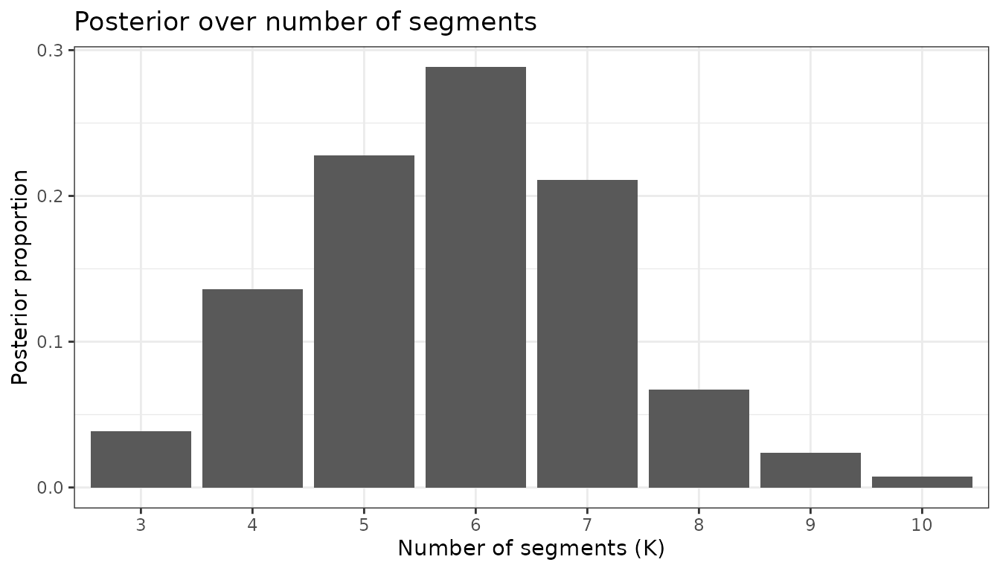
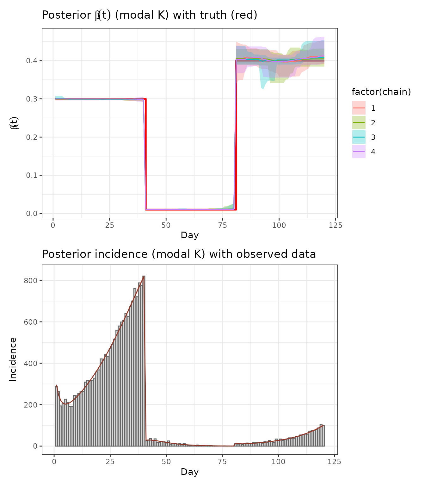

Example 2: SEIR change-point attack rate
David Hodgson
2025-08-13
Ex2_seir_attack_rate.RmdThis vignette demonstrates using RJMCMC to infer a piecewise-constant attack/transmission rate (change-point analysis) in a simple SEIR model from simulated incidence data.
- The time-varying transmission rate is modeled as a step function with an unknown number of segments and unknown change-points.
- RJMCMC explores the model dimension by proposing birth/death moves on the number of segments, and random-walk updates to segment-specific values.
- We show recovery of both the number and locations of change-points and the underlying incidence curve.
Note: All safety checks and validation functions have been extracted to separate R files to make this vignette more concise and maintainable. When running this vignette interactively, these functions will be automatically loaded. For pkgdown builds, the functions are already available through the package.
1. Packages
library(devtools)
devtools::load_all()
library(dplyr)
library(tidyr)
library(purrr)
library(ggplot2)
library(tidybayes)
library(ggdist)
# Load safety check functions (only when running interactively)
# These functions provide comprehensive input validation and safe defaults
# See R/safety_check_Ex2.R for full documentation
# Note: In pkgdown builds, these functions are available through the package
if (interactive()) {
source("R/safety_check_Ex2.R")
# Load corrected birth and death functions
# These functions match the thesis exactly and include proper dimension checks
source("R/corrected_birth_death.R")
# Load simple and robust birth/death functions
# These are much simpler and more standard implementations
source("R/simple_birth_death.R")
}
# Using more than one core might fail on windows
aaa_mc_cores <- if (.Platform$OS.type == "windows") 1 else 22. Simulate SEIR with piecewise-constant transmission rate
We simulate a discrete-time SEIR model (day step) with a piecewise-constant and normal observation noise on daily incidence.
- Population:
- Latent period: 1/ = 4 days
- Infectious period: 1/ = 6 days
- Change-points at days 40 and 80 with segment values: 0.30, 0.01, 0.40
# Helper to expand piecewise-constant beta from segment endpoints
make_beta_t <- function(beta_vec, cp_vec, T) {
# Use safety check functions
if (!validate_make_beta_t_inputs(beta_vec, cp_vec, T)) {
return(create_safe_beta(T))
}
# Ensure change-points are within bounds and ordered
ends <- pmin(pmax(round(cp_vec), 1), T)
ends[length(ends)] <- T
starts <- c(1, head(ends, -1) + 1)
# Initialize output vector
beta_t <- rep(0.1, T)
# Fill in segment values
for (k in seq_along(beta_vec)) {
if (k <= length(starts) && k <= length(ends)) {
start_idx <- starts[k]
end_idx <- ends[k]
if (is.finite(start_idx) && is.finite(end_idx) &&
start_idx >= 1 && end_idx <= T && start_idx <= end_idx) {
idx <- start_idx:end_idx
if (length(idx) > 0) {
beta_t[idx] <- beta_vec[k]
}
}
}
}
# Final safety check
if (any(!is.finite(beta_t)) || any(beta_t <= 0)) {
return(create_safe_beta(T))
}
beta_t
}
# Deterministic SEIR forward solver for expected incidence
seir_expected_incidence <- function(T, N, beta_t, gamma, S0, E0, I0, R0, rho = 1.0) {
# Use safety check functions
if (!validate_seir_inputs(T, N, beta_t, gamma, S0, E0, I0, R0, rho)) {
return(create_safe_seir_result(1))
}
# Initialize arrays
S <- numeric(T); E <- numeric(T); I <- numeric(T); R <- numeric(T)
inc <- numeric(T)
# Set initial conditions
S[1] <- max(0, S0); E[1] <- max(0, E0); I[1] <- max(0, I0); R[1] <- max(0, R0)
# Forward simulation
for (t in 1:T) {
# Safety check for current state
if (!is.finite(S[t]) || !is.finite(E[t]) || !is.finite(I[t]) || !is.finite(R[t])) {
S[t] <- max(0, S0); E[t] <- max(0, E0); I[t] <- max(0, I0); R[t] <- max(0, R0)
}
# Calculate transmission rate
lambda <- beta_t[t] * I[t] / N
if (!is.finite(lambda) || lambda < 0) lambda <- 0
# Calculate transitions
new_inf <- lambda * S[t]
new_E_to_I <- gamma * E[t]
new_I_to_R <- gamma * I[t]
# Safety checks for transitions
if (!is.finite(new_inf) || new_inf < 0) new_inf <- 0
if (!is.finite(new_E_to_I) || new_E_to_I < 0) new_E_to_I <- 0
if (!is.finite(new_I_to_R) || new_I_to_R < 0) new_I_to_R <- 0
# Record incidence
inc[t] <- rho * new_inf
if (!is.finite(inc[t]) || inc[t] < 0) inc[t] <- 0
# Update states for next time step
if (t < T) {
S[t + 1] <- max(S[t] - new_inf, 0)
E[t + 1] <- max(E[t] + new_inf - new_E_to_I, 0)
I[t + 1] <- max(I[t] + new_E_to_I - new_I_to_R, 0)
R[t + 1] <- min(R[t] + new_I_to_R, N)
# Safety checks for next state
if (!is.finite(S[t + 1])) S[t + 1] <- max(0, S0)
if (!is.finite(E[t + 1])) E[t + 1] <- max(0, E0)
if (!is.finite(I[t + 1])) I[t + 1] <- max(0, I0)
if (!is.finite(R[t + 1])) R[t + 1] <- max(0, R0)
}
}
# Final safety check for output
if (any(!is.finite(S)) || any(!is.finite(E)) || any(!is.finite(I)) ||
any(!is.finite(R)) || any(!is.finite(inc))) {
return(create_safe_seir_result(T))
}
list(S = S, E = E, I = I, R = R, incidence = inc)
}
# Truth
T_days <- 120
N_pop <- 100000
sigma <- 1/4
gamma <- 1/6
rho_true <- 1.0
beta_true_vals <- c(0.3, 0.01, 0.4) # Transmission rates between 0 and 1
cp_true <- c(40, 80, T_days) # segment endpoints (last must be T)
beta_true_t <- make_beta_t(beta_true_vals, cp_true, T_days)
init_I <- 1000
sim_true <- seir_expected_incidence(
T = T_days, N = N_pop, beta_t = beta_true_t,
gamma = gamma, S0 = N_pop - init_I, E0 = 0, I0 = init_I, R0 = 0,
rho = rho_true
)
# Observations: Poisson noise on expected incidence
sigma_obs <- 4 # observation noise standard deviation (not used for Poisson)
obs_y <- rpois(T_days, lambda = sim_true$incidence)
obs_y <- pmax(obs_y, 0) # ensure non-negative observations
# Quick visuals
p_obs <- tibble(day = 1:T_days, y = obs_y) %>%
ggplot(aes(day, y)) + geom_col(fill = "grey80", color = "grey20") +
labs(x = "Day", y = "Incidence", title = "Simulated daily incidence (observed)") + theme_bw() + ylim(0, NA)
p_beta <- tibble(day = 1:T_days, beta = beta_true_t) %>%
ggplot(aes(day, beta)) + geom_step(color = "red", linewidth = 1) +
labs(x = "Day", y = expression(beta(t)), title = expression("True transmission "*beta(t))) + theme_bw() + ylim(0, NA)
require(patchwork)
p_obs / p_beta
3. RJMCMC model specification
We define the model interface required by rjmc_func. The
jump matrix encodes the change-point segmentation:
- Row 1: segment-specific transmission rates in [0, 1]
- Row 2: segment end days (in 1..T), increasing, with the last equal to T
The continuous parameter vector contains a single parameter controlling normal observation noise: , where is unconstrained.
3.1 Theoretical Framework
This implementation follows the RJMCMC theory from Lyyjynen (2014) §5.2 for piecewise-constant intensity functions:
-
Prior on number of change-points:
where
(K = number of segments)
- Modified to strongly prefer fewer segments with and penalty factor
- Prior on segment heights:
- Prior on observation noise: where is the standard deviation
- Spacing prior: for ordered change-points
- Birth proposal: Split a segment at random point, preserve weighted geometric mean of heights
- Death proposal: Merge adjacent segments, weighted average of heights
- Acceptance ratios: Include proposal PDFs, Jacobian, and prior ratios as per Green (1995)
- Likelihood: where is the expected incidence from the SEIR model
# Build expected incidence given a jump matrix
expected_incidence_from_jump <- function(params, jump, datalist) {
# Use safety check functions
if (!validate_rjmc_params(params, 1)) {
stop("expected_incidence_from_jump: Expected 1 dummy parameter for Poisson model")
}
if (!validate_datalist(datalist) || !validate_jump_matrix(jump, datalist$T)) {
return(rep(0, datalist$T))
}
# Extract parameters
T <- datalist$T
S0 <- datalist$S0
E0 <- datalist$E0
I0 <- datalist$I0
R0 <- datalist$R0
gamma <- datalist$gamma
rho <- datalist$rho
# Extract beta and change-points from jump
beta <- as.numeric(jump[1, ])
cp <- as.integer(round(jump[2, ]))
# Create piecewise-constant beta function
beta_t <- make_beta_t(beta, cp, T)
# Solve SEIR model
result <- seir_expected_incidence(T, datalist$N, beta_t, gamma, S0, E0, I0, R0, rho)
# Safety check for result
if (is.null(result) || !is.list(result) || is.null(result$incidence)) {
return(rep(0, T))
}
# Return only the incidence vector, not the entire result object
result$incidence
}
# Helper function to compute Jacobian for birth transformation
# Based on thesis §5.2: J ≈ h_parent / u2^2 for the (h_j, u1, u2) -> (h_L, h_R, s*) mapping
compute_birth_jacobian <- function(beta_parent, u2) {
# Use safety check functions
if (!validate_numeric_param(beta_parent, "beta_parent", min_val = 0.001) ||
!validate_numeric_param(u2, "u2", min_val = 0.001, max_val = 0.999)) {
return(1.0)
}
# Simplified Jacobian: J ≈ h_parent / u2^2
jacobian <- abs(beta_parent / (u2^2))
# Bound the Jacobian to reasonable values
max(0.1, min(jacobian, 100))
}
# Helper function to compute Jacobian for death transformation
# Based on thesis §5.2: J ≈ 1 for the death move (inverse of birth)
compute_death_jacobian <- function(beta_merged, beta_old, w_minus, w_plus) {
# Use safety check functions
if (!validate_numeric_param(beta_merged, "beta_merged", min_val = 0.001) ||
!validate_numeric_param(beta_old, "beta_old", min_val = 0.001) ||
!validate_numeric_param(w_minus, "w_minus", min_val = 0.001) ||
!validate_numeric_param(w_plus, "w_plus", min_val = 0.001)) {
return(1.0)
}
# For death moves, the Jacobian is approximately 1
1.0
}
# Helper function for proposal probabilities (to avoid circular references)
sampleProposal_internal <- function(params, jump, datalist) {
# Use safety check functions
if (!validate_rjmc_params(params, 1) || !validate_jump_matrix(jump, datalist$T)) {
return(c(0.33, 0.33, 1.0))
}
# Based on thesis §5.2: birth/death probabilities derived from Poisson prior
K <- ncol(jump)
k <- K - 1 # number of change-points
# Prior parameters
mu_prior <- 2.5 # Poisson prior mean for number of change-points
if (K <= 1) {
return(c(0.5, 0.0, 1.0)) # only birth and within-model moves
} else if (K >= 20) {
return(c(0.0, 0.5, 1.0)) # only death and within-model moves
} else {
# Compute birth/death probabilities based on Poisson prior ratios
bk <- min(0.6 * mu_prior / (k + 1), 0.6)
dk <- min(0.6 * k / mu_prior, 0.6)
# Ensure probabilities are finite and non-negative
bk <- max(0.0, min(bk, 0.6))
dk <- max(0.0, min(dk, 0.6))
# Ensure probabilities sum to at most 0.9
total <- bk + dk
if (total > 0.9) {
scale_factor <- 0.9 / total
bk <- bk * scale_factor
dk <- dk * scale_factor
}
c(bk, dk, 1.0) # birth, death, within-model
}
}
# RJMCMC model list
model <- list(
lowerParSupport_fitted = c(-10), # Dummy parameter bounds
upperParSupport_fitted = c(10),
namesOfParameters = c("dummy"), # Dummy parameter name
sampleInitPrior = function(datalist) {
# For Poisson model, we need a dummy parameter for internal RJMCMC machinery
# Initialize dummy parameter around 0
result <- rnorm(1, 0, 1)
# Use safety check functions
if (!validate_numeric_param(result, "result", allow_null = FALSE)) {
return(0) # Return safe default if generation failed
}
result
},
sampleInitJump = function(params, datalist) {
# Use safety check functions
if (!validate_rjmc_params(params, 1) || !validate_datalist(datalist)) {
return(create_safe_jump(100))
}
T <- datalist$T
if (!validate_numeric_param(T, "T", min_val = 1)) {
return(create_safe_jump(100))
}
# SIMPLIFIED: Start with exactly 2 segments for stability
K <- 2
cat("Initialization: K =", K, "\n")
# Create 2 segments with reasonable beta values
betas <- runif(K, 0.1, 0.5) # Reasonable beta values
# Place change-point at 1/3 of time range (more balanced than middle)
# This avoids clustering at the start and gives more reasonable segment sizes
cps <- c(round(T/3), T)
# Safety check for generated values
if (any(!is.finite(betas)) || any(!is.finite(cps))) {
return(create_safe_jump(T))
}
# Ensure change-points are valid and ordered
cps <- sort(cps)
cps[length(cps)] <- T # Ensure last change-point is exactly T
# Final safety check
if (any(cps < 1) || any(cps > T) || any(betas <= 0)) {
return(create_safe_jump(T))
}
result <- matrix(c(betas, cps), nrow = 2, byrow = TRUE)
# Final matrix check
if (any(!is.finite(result)) || ncol(result) != K || nrow(result) != 2) {
return(create_safe_jump(T))
}
result
},
evaluateLogPrior = function(params, jump, datalist) {
# Use safety check functions
if (!validate_rjmc_params(params, 1)) {
stop("evaluateLogPrior: Expected 1 dummy parameter for Poisson model")
}
# Start with zero log prior (flat prior on dummy parameter)
lp <- 0.0
# Safety check for jump
if (!validate_jump_matrix(jump, datalist$T, min_segments = 1, max_segments = 20)) {
return(-Inf)
}
# Number of change-points: k ~ Poisson(μ) where k = K-1
K <- ncol(jump)
k <- K - 1 # number of change-points (excluding boundaries)
# Prior that allows reasonable number of change points
mu_prior <- 3 # prior mean for number of change-points
# Simple Poisson prior without additional penalty
lp <- lp + dpois(k, lambda = mu_prior, log = TRUE)
# Safety check for Poisson prior
if (!is.finite(lp)) return(-Inf)
# Segment heights (betas): ~ Gamma(α,β) instead of uniform
beta_vec <- jump[1, ]
alpha_prior <- 2.0 # shape parameter
beta_prior <- 5.0 # rate parameter (mean = α/β = 2.0/5.0 = 0.4)
lp <- lp + sum(dgamma(beta_vec, shape = alpha_prior, rate = beta_prior, log = TRUE))
# Safety check for Gamma prior
if (!is.finite(lp)) return(-Inf)
# Change-points: ordered spacing prior
T <- datalist$T
cp_vec <- as.integer(round(jump[2, ]))
# Spacing prior: log(prod(widths)) from thesis (5.33)
if (length(cp_vec) > 1) {
starts <- c(1, head(cp_vec, -1))
widths <- cp_vec - starts
if (any(widths <= 0)) return(-Inf) # Safety check for widths
lp <- lp + sum(log(widths))
}
# Final safety check
if (!is.finite(lp)) return(-Inf)
# Debug output for extreme values
if (lp < -1e6) {
cat("WARNING: Very low prior:", lp, "K =", K, "\n")
}
lp
},
evaluateLogLikelihood = function(params, jump, datalist) {
y <- datalist$y
T <- datalist$T
# Use safety check functions
if (!validate_rjmc_params(params, 1)) {
stop("evaluateLogLikelihood: Expected 1 dummy parameter for Poisson model")
}
mu_t <- expected_incidence_from_jump(params, jump, datalist)
# Safety checks for expected incidence
if (any(!is.finite(mu_t))) return(-Inf)
if (any(mu_t < 0)) return(-Inf)
mu_t <- pmax(mu_t, 1e-6) # ensure positive expected values
# Poisson likelihood for counts: y_t ~ Poisson(mu_t)
log_lik <- dpois(y, lambda = mu_t, log = TRUE)
if (any(!is.finite(log_lik))) return(-Inf)
# Simple dimension penalty (much smaller)
K <- ncol(jump)
penalty_term <- log(K) * 0.1 # Small penalty for complexity
result <- sum(log_lik) - penalty_term
# Debug output for extreme values
if (result < -1e6) {
cat("WARNING: Very low likelihood:", result, "K =", K, "sum(log_lik) =", sum(log_lik), "\n")
}
result
},
sampleBirthProposal = function(params, jump, i_idx, datalist) {
# Use simple birth function that's more robust
simpleBirthProposal(params, jump, i_idx, datalist)
},
sampleDeathProposal = function(params, jump, i_idx, datalist) {
# Use simple death function that's more robust
simpleDeathProposal(params, jump, i_idx, datalist)
},
evaluateBirthProposal = function(params, jump, i_idx, datalist) {
# Use safety check functions
if (!validate_rjmc_params(params, 1) || !validate_jump_matrix(jump, datalist$T)) {
return(-Inf)
}
# Based on thesis §5.2: birth acceptance ratio with proper proposal PDFs
T <- datalist$T
beta <- as.numeric(jump[1, ])
cp <- as.integer(round(jump[2, ]))
K <- length(beta)
# Get current birth/death probabilities
move_probs <- sampleProposal_internal(params, jump, datalist)
# Safety check for move_probs
if (length(move_probs) < 2 || any(!is.finite(move_probs))) {
return(-Inf)
}
bk <- move_probs[1] # birth probability
dk1 <- move_probs[2] # death probability in new state (k+1)
# Safety check for probabilities
if (bk <= 0 || dk1 <= 0) {
return(-Inf)
}
# Proposal ratio: log(d_{k+1} * L / (b_k * (k+1))) from thesis (5.50)
log_prop_ratio <- log(dk1) + log(T) - log(bk) - log(K + 1)
# Safety check for final result
if (!is.finite(log_prop_ratio)) {
return(-Inf)
}
log_prop_ratio
},
evaluateDeathProposal = function(params, jump, i_idx, datalist) {
# Use safety check functions
if (!validate_rjmc_params(params, 1) || !validate_jump_matrix(jump, datalist$T)) {
return(-Inf)
}
# Based on thesis §5.2: death acceptance ratio with proper proposal PDFs
T <- datalist$T
beta <- as.numeric(jump[1, ])
cp <- as.integer(round(jump[2, ]))
K <- length(beta)
if (K <= 1) return(-Inf)
# For death, the proposal ratio is the inverse of birth
# From thesis (5.55): log(b_{k-1} * k / (d_k * L))
# Get current birth/death probabilities
move_probs <- sampleProposal_internal(params, jump, datalist)
# Safety check for move_probs
if (length(move_probs) < 2 || any(!is.finite(move_probs))) {
return(-Inf)
}
dk <- move_probs[2] # death probability in current state
bk_minus1 <- move_probs[1] # birth probability in new state (k-1)
# Proposal ratio: log(b_{k-1} * k / (d_k * L))
log_prop_ratio <- log(bk_minus1) + log(K) - log(dk) - log(T)
# Safety check for final result
if (!is.finite(log_prop_ratio)) {
return(-Inf)
}
log_prop_ratio
},
sampleJump = function(params, jump, i_idx, datalist) {
# Use simple height update function that's more robust
alpha <- runif(1, 0, 1)
if (alpha < 0.3) {
jump <- simpleHeightUpdate(params, jump, i_idx, datalist)
} else if (alpha < 0.6) {
jump <- simpleChangePointUpdate(params, jump, i_idx, datalist)
} else {
}
jump
},
sampleProposal = function(params, jump, datalist) {
# Simple, balanced proposal probabilities
K <- ncol(jump)
if (K <= 1) {
# Can't have fewer than 1 segment - only birth and within-model
return(c(0.4, 0.0, 0.6)) # birth, death, within-model
} else if (K >= 20) {
# Can't have more than 20 segments - only death and within-model
return(c(0.0, 0.4, 0.6)) # birth, death, within-model
} else {
# Balanced probabilities for intermediate K values
return(c(0.3, 0.3, 0.4)) # birth, death, within-model
}
}
)4. Settings, data, and run
settings <- list(
numberCores = 4,
numberChainRuns = 4,
iterations = 40000, # Increased from 10000 to allow more exploration
burninPosterior = 20000, # Increased from 5000 to allow proper burn-in
thin = 10, # Increased from 1 to reduce autocorrelation
runParallel = TRUE
)
data_l <- list(
y = obs_y,
N_data = length(obs_y),
T = T_days,
N = N_pop,
gamma = gamma,
S0 = N_pop - init_I,
E0 = 0,
I0 = init_I,
R0 = 0,
rho = rho_true # 1
)
outputs <- rjmc_func(model, data_l, settings)## `consoleUpdates` not specified in settings. Default value 100.
## `numberFittedPar` not specified in settings. Default value equal to the number of parameters in the model 1 .
## `onAdaptiveCov` not specified in settings. Default value TRUE.
## `updatesAdaptiveCov` not specified in settings. Default value 100.
## `burninAdaptiveCov` not specified in settings. Default value 2000.
## `onAdaptiveTemp` not specified in settings. Default value TRUE.
## `updatesAdaptiveTemp` not specified in settings. Default value 10.
## `lowerParBounds` not specified in settings. Defaults to lowerParSupport_fitted.
## `upperParBounds` not specified in settings. Defaults to upperParSupport_fitted
## `covarInitVal` not specified in settings. Default value 1e-10.
## `covarInitValAdapt` not specified in settings. Default value 1e-10.
## `covarMaxVal` not specified in settings. Default value 1.
## Initialization: K = 2
## Running MCMC-PT iteration number: 0 of 40000. Chain number 1. Current logpost: Initialization: K = -10091. Length of jump: 2. 2
## Running MCMC-PT iteration number: 0 of 40000. Chain number 2. Current logpost: -18642.6. Length of jump: 2. Initialization: K = 2
## Initialization: K = 2
## Running MCMC-PT iteration number: 0 of 40000. Chain number 3. Current logpost: -53261.5. Length of jump: 1. Cannot merge: only 1 segment
## Cannot merge: only 1 segment
## Running MCMC-PT iteration number: 0 of 40000. Chain number 4. Current logpost: -11111.3. Length of jump: 2. Cannot merge: only 1 segment
## Cannot merge: only 1 segment
## Cannot merge: only 1 segment
## Cannot merge: only 1 segment
## Cannot merge: only 1 segment
## Cannot merge: only 1 segment
## Cannot merge: only 1 segment
## Cannot merge: only 1 segment
## Cannot merge: only 1 segment
## Cannot merge: only 1 segment
## Cannot merge: only 1 segment
## Cannot merge: only 1 segment
## Cannot merge: only 1 segment
## Cannot merge: only 1 segment
## Running MCMC-PT iteration number: 100 of 40000. Chain number 1. Current logpost: -4083.09. Length of jump: 5. Running MCMC-PT iteration number: 100 of 40000. Chain number 2. Current logpost: -7322.51. Length of jump: 2. Running MCMC-PT iteration number: 100 of 40000. Chain number 3. Current logpost: -51707.7. Length of jump: 3. Running MCMC-PT iteration number: 100 of 40000. Chain number 4. Current logpost: -3105.69. Length of jump: 3. Running MCMC-PT iteration number: 200 of 40000. Chain number 3. Current logpost: -49096.2. Length of jump: 2. Running MCMC-PT iteration number: 200 of 40000. Chain number 2. Current logpost: -5837.95. Length of jump: 2. Running MCMC-PT iteration number: 200 of 40000. Chain number 1. Current logpost: -1394.41. Length of jump: 4. Running MCMC-PT iteration number: 200 of 40000. Chain number 4. Current logpost: -2078.78. Length of jump: 3. Running MCMC-PT iteration number: 300 of 40000. Chain number 3. Current logpost: -10850.6. Length of jump: 4. Running MCMC-PT iteration number: 300 of 40000. Chain number 1. Current logpost: -687.398. Length of jump: 4. Running MCMC-PT iteration number: 300 of 40000. Chain number 2. Current logpost: -5836.48. Length of jump: 2. Running MCMC-PT iteration number: 300 of 40000. Chain number 4. Current logpost: -892.968. Length of jump: 3. Running MCMC-PT iteration number: 400 of 40000. Chain number 3. Current logpost: -7394.29. Length of jump: 3. Running MCMC-PT iteration number: 400 of 40000. Chain number 1. Current logpost: -514.767. Length of jump: 4. Running MCMC-PT iteration number: 400 of 40000. Chain number 2. Current logpost: -1725.09. Length of jump: 3. Running MCMC-PT iteration number: 400 of 40000. Chain number 4. Current logpost: -395.868. Length of jump: 4. Running MCMC-PT iteration number: 500 of 40000. Chain number 3. Current logpost: -4295.91. Length of jump: 3. Running MCMC-PT iteration number: 500 of 40000. Chain number 1. Current logpost: -503.756. Length of jump: 4. Running MCMC-PT iteration number: 500 of 40000. Chain number 2. Current logpost: -1482.93. Length of jump: 3. Running MCMC-PT iteration number: 500 of 40000. Chain number 4. Current logpost: -364.812. Length of jump: 6. Running MCMC-PT iteration number: 600 of 40000. Chain number 3. Current logpost: -1129.34. Length of jump: 3. Running MCMC-PT iteration number: 600 of 40000. Chain number 1. Current logpost: -464.832. Length of jump: 5. Running MCMC-PT iteration number: 600 of 40000. Chain number 2. Current logpost: -1225. Length of jump: 4. Running MCMC-PT iteration number: 600 of 40000. Chain number 4. Current logpost: -364.536. Length of jump: 5. Running MCMC-PT iteration number: 700 of 40000. Chain number 3. Current logpost: -982.397. Length of jump: 4. Running MCMC-PT iteration number: 700 of 40000. Chain number 1. Current logpost: -447.719. Length of jump: 5. Running MCMC-PT iteration number: 700 of 40000. Chain number 2. Current logpost: -1164.49. Length of jump: 4. Running MCMC-PT iteration number: 700 of 40000. Chain number 4. Current logpost: -364.677. Length of jump: 6. Running MCMC-PT iteration number: 800 of 40000. Chain number 1. Current logpost: -418.176. Length of jump: 8. Running MCMC-PT iteration number: 800 of 40000. Chain number 2. Current logpost: -878.93. Length of jump: 4. Running MCMC-PT iteration number: 800 of 40000. Chain number 4. Current logpost: -366.398. Length of jump: 5. Running MCMC-PT iteration number: 900 of 40000. Chain number 3. Current logpost: -709.276. Length of jump: 5. Running MCMC-PT iteration number: 900 of 40000. Chain number 2. Current logpost: -553.231. Length of jump: 5. Running MCMC-PT iteration number: 900 of 40000. Chain number 1. Current logpost: -375.157. Length of jump: 7. Running MCMC-PT iteration number: 900 of 40000. Chain number 4. Current logpost: -367.084. Length of jump: 6. Running MCMC-PT iteration number: 1000 of 40000. Chain number 3. Current logpost: -661.777. Length of jump: 6. Running MCMC-PT iteration number: 1000 of 40000. Chain number 2. Current logpost: -495.038. Length of jump: 6. Running MCMC-PT iteration number: 1000 of 40000. Chain number 1. Current logpost: -375.898. Length of jump: 8. Running MCMC-PT iteration number: 1000 of 40000. Chain number 4. Current logpost: -364.851. Length of jump: 5. Running MCMC-PT iteration number: 1100 of 40000. Chain number 3. Current logpost: -557.832. Length of jump: 6. Running MCMC-PT iteration number: 1100 of 40000. Chain number 2. Current logpost: -462.824. Length of jump: 5. Running MCMC-PT iteration number: 1100 of 40000. Chain number 1. Current logpost: -373.322. Length of jump: 7. Running MCMC-PT iteration number: 1100 of 40000. Chain number 4. Current logpost: -363.831. Length of jump: 5. Running MCMC-PT iteration number: 1200 of 40000. Chain number 3. Current logpost: -434.077. Length of jump: 5. Running MCMC-PT iteration number: 1200 of 40000. Chain number 2. Current logpost: -426.798. Length of jump: 6. Running MCMC-PT iteration number: 1200 of 40000. Chain number 1. Current logpost: -372.96. Length of jump: 7. Running MCMC-PT iteration number: 1200 of 40000. Chain number 4. Current logpost: -363.63. Length of jump: 5. Running MCMC-PT iteration number: 1300 of 40000. Chain number 3. Current logpost: -422.096. Length of jump: 5. Running MCMC-PT iteration number: 1300 of 40000. Chain number 2. Current logpost: -420.202. Length of jump: 6. Running MCMC-PT iteration number: 1300 of 40000. Chain number 1. Current logpost: -371.776. Length of jump: 7. Running MCMC-PT iteration number: 1300 of 40000. Chain number 4. Current logpost: -364.205. Length of jump: 6. Running MCMC-PT iteration number: 1400 of 40000. Chain number 1. Current logpost: -371.591. Length of jump: 7. Running MCMC-PT iteration number: 1400 of 40000. Chain number 4. Current logpost: -363.83. Length of jump: 6. Running MCMC-PT iteration number: 1500 of 40000. Chain number 3. Current logpost: -406.889. Length of jump: 6. Running MCMC-PT iteration number: 1500 of 40000. Chain number 2. Current logpost: -415.536. Length of jump: 6. Running MCMC-PT iteration number: 1500 of 40000. Chain number 1. Current logpost: -371.562. Length of jump: 7. Running MCMC-PT iteration number: 1500 of 40000. Chain number 4. Current logpost: -363.228. Length of jump: 5. Running MCMC-PT iteration number: 1600 of 40000. Chain number 3. Current logpost: -404.362. Length of jump: 6. Running MCMC-PT iteration number: 1600 of 40000. Chain number 1. Current logpost: -371.817. Length of jump: 7. Running MCMC-PT iteration number: 1600 of 40000. Chain number 2. Current logpost: -417.021. Length of jump: 6. Running MCMC-PT iteration number: 1600 of 40000. Chain number 4. Current logpost: -363.825. Length of jump: 5. Running MCMC-PT iteration number: 1700 of 40000. Chain number 3. Current logpost: -402.927. Length of jump: 6. Running MCMC-PT iteration number: 1700 of 40000. Chain number 1. Current logpost: -371.045. Length of jump: 7. Running MCMC-PT iteration number: 1700 of 40000. Chain number 2. Current logpost: -408.976. Length of jump: 6. Running MCMC-PT iteration number: 1700 of 40000. Chain number 4. Current logpost: -364.831. Length of jump: 5. Running MCMC-PT iteration number: 1800 of 40000. Chain number 3. Current logpost: -389.195. Length of jump: 7. Running MCMC-PT iteration number: 1800 of 40000. Chain number 1. Current logpost: -369.302. Length of jump: 6. Running MCMC-PT iteration number: 1800 of 40000. Chain number 2. Current logpost: -407.719. Length of jump: 6. Running MCMC-PT iteration number: 1800 of 40000. Chain number 4. Current logpost: -364.445. Length of jump: 5. Running MCMC-PT iteration number: 1900 of 40000. Chain number 3. Current logpost: -386.655. Length of jump: 7. Running MCMC-PT iteration number: 1900 of 40000. Chain number 1. Current logpost: -361.775. Length of jump: 6. Running MCMC-PT iteration number: 1900 of 40000. Chain number 2. Current logpost: -400.678. Length of jump: 6. Running MCMC-PT iteration number: 1900 of 40000. Chain number 4. Current logpost: -365.811. Length of jump: 5. Running MCMC-PT iteration number: 2000 of 40000. Chain number 3. Current logpost: -386.31. Length of jump: 7. Running MCMC-PT iteration number: 2000 of 40000. Chain number 1. Current logpost: -364.36. Length of jump: 6. Running MCMC-PT iteration number: 2000 of 40000. Chain number 2. Current logpost: -404.204. Length of jump: 6. Running MCMC-PT iteration number: 2000 of 40000. Chain number 4. Current logpost: -366.628. Length of jump: 6. Running MCMC-PT iteration number: 2100 of 40000. Chain number 3. Current logpost: -389.093. Length of jump: 7. Running MCMC-PT iteration number: 2100 of 40000. Chain number 1. Current logpost: -361.512. Length of jump: 6. Running MCMC-PT iteration number: 2100 of 40000. Chain number 2. Current logpost: -397.119. Length of jump: 6. Running MCMC-PT iteration number: 2100 of 40000. Chain number 4. Current logpost: -364.833. Length of jump: 6. Running MCMC-PT iteration number: 2200 of 40000. Chain number 3. Current logpost: -376.006. Length of jump: 6. Running MCMC-PT iteration number: 2200 of 40000. Chain number 1. Current logpost: -361.904. Length of jump: 5. Running MCMC-PT iteration number: 2200 of 40000. Chain number 2. Current logpost: -391.248. Length of jump: 8. Running MCMC-PT iteration number: 2200 of 40000. Chain number 4. Current logpost: -364.369. Length of jump: 6. Running MCMC-PT iteration number: 2300 of 40000. Chain number 3. Current logpost: -370.784. Length of jump: 7. Running MCMC-PT iteration number: 2300 of 40000. Chain number 1. Current logpost: -360.51. Length of jump: 4. Running MCMC-PT iteration number: 2300 of 40000. Chain number 2. Current logpost: -389.819. Length of jump: 7. Running MCMC-PT iteration number: 2300 of 40000. Chain number 4. Current logpost: -363.922. Length of jump: 6. Running MCMC-PT iteration number: 2400 of 40000. Chain number 3. Current logpost: -365.401. Length of jump: 6. Running MCMC-PT iteration number: 2400 of 40000. Chain number 1. Current logpost: -360.54. Length of jump: 4. Running MCMC-PT iteration number: 2400 of 40000. Chain number 2. Current logpost: -388.246. Length of jump: 8. Running MCMC-PT iteration number: 2400 of 40000. Chain number 4. Current logpost: -364.791. Length of jump: 6. Running MCMC-PT iteration number: 2500 of 40000. Chain number 3. Current logpost: -364.808. Length of jump: 7. Running MCMC-PT iteration number: 2500 of 40000. Chain number 1. Current logpost: -365.454. Length of jump: 4. Running MCMC-PT iteration number: 2500 of 40000. Chain number 2. Current logpost: -390.383. Length of jump: 9. Running MCMC-PT iteration number: 2500 of 40000. Chain number 4. Current logpost: -366.789. Length of jump: 7. Running MCMC-PT iteration number: 2600 of 40000. Chain number 3. Current logpost: -364.768. Length of jump: 6. Running MCMC-PT iteration number: 2600 of 40000. Chain number 1. Current logpost: -362.545. Length of jump: 4. Running MCMC-PT iteration number: 2600 of 40000. Chain number 2. Current logpost: -390.086. Length of jump: 9. Running MCMC-PT iteration number: 2600 of 40000. Chain number 4. Current logpost: -366.505. Length of jump: 7. Running MCMC-PT iteration number: 2700 of 40000. Chain number 3. Current logpost: -362.837. Length of jump: 7. Running MCMC-PT iteration number: 2700 of 40000. Chain number 1. Current logpost: -362.35. Length of jump: 4. Running MCMC-PT iteration number: 2700 of 40000. Chain number 2. Current logpost: -387.217. Length of jump: 9. Running MCMC-PT iteration number: 2700 of 40000. Chain number 4. Current logpost: -365.755. Length of jump: 7. Running MCMC-PT iteration number: 2800 of 40000. Chain number 3. Current logpost: -364.101. Length of jump: 5. Running MCMC-PT iteration number: 2800 of 40000. Chain number 1. Current logpost: -363.199. Length of jump: 4. Running MCMC-PT iteration number: 2800 of 40000. Chain number 2. Current logpost: -374.879. Length of jump: 9. Running MCMC-PT iteration number: 2800 of 40000. Chain number 4. Current logpost: -364.455. Length of jump: 6. Running MCMC-PT iteration number: 2900 of 40000. Chain number 3. Current logpost: -362.654. Length of jump: 5. Running MCMC-PT iteration number: 2900 of 40000. Chain number 1. Current logpost: -365.052. Length of jump: 5. Running MCMC-PT iteration number: 2900 of 40000. Chain number 4. Current logpost: -364.218. Length of jump: 6. Running MCMC-PT iteration number: 3000 of 40000. Chain number 4. Current logpost: -362.381. Length of jump: 7. Running MCMC-PT iteration number: 3000 of 40000. Chain number 2. Current logpost: -369.895. Length of jump: 9. Running MCMC-PT iteration number: 3100 of 40000. Chain number 3. Current logpost: -361.499. Length of jump: 4. Running MCMC-PT iteration number: 3100 of 40000. Chain number 1. Current logpost: -363.419. Length of jump: 6. Running MCMC-PT iteration number: 3100 of 40000. Chain number 2. Current logpost: -369.172. Length of jump: 8. Running MCMC-PT iteration number: 3100 of 40000. Chain number 4. Current logpost: -362.768. Length of jump: 6. Running MCMC-PT iteration number: 3200 of 40000. Chain number 3. Current logpost: -363.948. Length of jump: 5. Running MCMC-PT iteration number: 3200 of 40000. Chain number 1. Current logpost: -365.326. Length of jump: 5. Running MCMC-PT iteration number: Running MCMC-PT iteration number: 32003200 of of 4000040000. Chain number . Chain number 42. Current logpost: . Current logpost: -367.34-361.536. Length of jump: . Length of jump: 96. . Running MCMC-PT iteration number: 3300 of 40000. Chain number 3. Current logpost: -361.494. Length of jump: 6. Running MCMC-PT iteration number: 3300 of 40000. Chain number 1. Current logpost: -361.473. Length of jump: 5. Running MCMC-PT iteration number: 3300 of 40000. Chain number 4. Current logpost: -363.103. Length of jump: 6. Running MCMC-PT iteration number: 3300 of 40000. Chain number 2. Current logpost: -366.144. Length of jump: 9. Running MCMC-PT iteration number: 3400 of 40000. Chain number 3. Current logpost: -360.887. Length of jump: 5. Running MCMC-PT iteration number: 3400 of 40000. Chain number 1. Current logpost: -360.861. Length of jump: 5. Running MCMC-PT iteration number: 3400 of 40000. Chain number 4. Current logpost: -362.099. Length of jump: 5. Running MCMC-PT iteration number: 3400 of 40000. Chain number 2. Current logpost: -368.817. Length of jump: 8. Running MCMC-PT iteration number: 3500 of 40000. Chain number 3. Current logpost: -360.099. Length of jump: 6. Running MCMC-PT iteration number: 3500 of 40000. Chain number 1. Current logpost: -361.123. Length of jump: 6. Running MCMC-PT iteration number: 3500 of 40000. Chain number 4. Current logpost: -361.011. Length of jump: 5. Running MCMC-PT iteration number: 3500 of 40000. Chain number 2. Current logpost: -360.537. Length of jump: 7. Running MCMC-PT iteration number: 3600 of 40000. Chain number 3. Current logpost: -360.055. Length of jump: 6. Running MCMC-PT iteration number: 3600 of 40000. Chain number 1. Current logpost: -360.192. Length of jump: 5. Running MCMC-PT iteration number: 3600 of 40000. Chain number 4. Current logpost: -360.934. Length of jump: 5. Running MCMC-PT iteration number: 3600 of 40000. Chain number 2. Current logpost: -356.138. Length of jump: 7. Running MCMC-PT iteration number: 3700 of 40000. Chain number 3. Current logpost: -362.277. Length of jump: 7. Running MCMC-PT iteration number: 3700 of 40000. Chain number 1. Current logpost: -359.928. Length of jump: 5. Running MCMC-PT iteration number: 3700 of 40000. Chain number 4. Current logpost: -360.117. Length of jump: 4. Running MCMC-PT iteration number: 3700 of 40000. Chain number 2. Current logpost: -355.591. Length of jump: 7. Running MCMC-PT iteration number: 3800 of 40000. Chain number 3. Current logpost: -361.345. Length of jump: 7. Running MCMC-PT iteration number: 3800 of 40000. Chain number 1. Current logpost: -360.399. Length of jump: 5. Running MCMC-PT iteration number: 3800 of 40000. Chain number 2. Current logpost: -355.424. Length of jump: 7. Running MCMC-PT iteration number: 3800 of 40000. Chain number 4. Current logpost: -363.764. Length of jump: 5. Running MCMC-PT iteration number: 3900 of 40000. Chain number 3. Current logpost: -365.359. Length of jump: 8. Running MCMC-PT iteration number: 3900 of 40000. Chain number 1. Current logpost: -360.348. Length of jump: 5. Running MCMC-PT iteration number: 3900 of 40000. Chain number 4. Current logpost: -367.001. Length of jump: 7. Running MCMC-PT iteration number: 3900 of 40000. Chain number 2. Current logpost: -357.379. Length of jump: 6. Running MCMC-PT iteration number: 4000 of 40000. Chain number 3. Current logpost: -363.577. Length of jump: 7. Running MCMC-PT iteration number: 4000 of 40000. Chain number 1. Current logpost: -361.947. Length of jump: 5. Running MCMC-PT iteration number: 4000 of 40000. Chain number 2. Current logpost: -356.035. Length of jump: 5. Running MCMC-PT iteration number: 4000 of 40000. Chain number 4. Current logpost: -363.676. Length of jump: 6. Running MCMC-PT iteration number: 4100 of 40000. Chain number 3. Current logpost: -363.552. Length of jump: 7. Running MCMC-PT iteration number: 4100 of 40000. Chain number 1. Current logpost: -360.21. Length of jump: 6. Running MCMC-PT iteration number: 4100 of 40000. Chain number 2. Current logpost: -357.04. Length of jump: 5. Running MCMC-PT iteration number: 4100 of 40000. Chain number 4. Current logpost: -365.453. Length of jump: 7. Running MCMC-PT iteration number: 4200 of 40000. Chain number 3. Current logpost: -363.871. Length of jump: 8. Running MCMC-PT iteration number: 4200 of 40000. Chain number 1. Current logpost: -360.939. Length of jump: 6. Running MCMC-PT iteration number: 4200 of 40000. Chain number 2. Current logpost: -357.05. Length of jump: 5. Running MCMC-PT iteration number: 4200 of 40000. Chain number 4. Current logpost: -366.457. Length of jump: 8. Running MCMC-PT iteration number: 4300 of 40000. Chain number 3. Current logpost: -364.236. Length of jump: 8. Running MCMC-PT iteration number: 4300 of 40000. Chain number 1. Current logpost: -361.212. Length of jump: 6. Running MCMC-PT iteration number: 4300 of 40000. Chain number 2. Current logpost: -360.415. Length of jump: 6. Running MCMC-PT iteration number: 4300 of 40000. Chain number 4. Current logpost: -365.753. Length of jump: 8. Running MCMC-PT iteration number: 4400 of 40000. Chain number 3. Current logpost: -363.876. Length of jump: 8. Running MCMC-PT iteration number: 4400 of 40000. Chain number 1. Current logpost: -358.818. Length of jump: 5. Running MCMC-PT iteration number: 4400 of 40000. Chain number 2. Current logpost: -356.457. Length of jump: 5. Running MCMC-PT iteration number: 4400 of 40000. Chain number 4. Current logpost: -365.416. Length of jump: 8. Running MCMC-PT iteration number: 4500 of 40000. Chain number 3. Current logpost: -365.764. Length of jump: 8. Running MCMC-PT iteration number: 4500 of 40000. Chain number 1. Current logpost: -359.186. Length of jump: 4. Running MCMC-PT iteration number: 4500 of 40000. Chain number 2. Current logpost: -358.573. Length of jump: 6. Running MCMC-PT iteration number: 4500 of 40000. Chain number 4. Current logpost: -371.39. Length of jump: 10. Running MCMC-PT iteration number: 4600 of 40000. Chain number 3. Current logpost: -364.956. Length of jump: 7. Running MCMC-PT iteration number: 4600 of 40000. Chain number 1. Current logpost: -359.627. Length of jump: 4. Running MCMC-PT iteration number: 4600 of 40000. Chain number 2. Current logpost: -356.801. Length of jump: 7. Running MCMC-PT iteration number: 4600 of 40000. Chain number 4. Current logpost: -365.882. Length of jump: 8. Running MCMC-PT iteration number: 4700 of 40000. Chain number 3. Current logpost: -364. Length of jump: 6. Running MCMC-PT iteration number: 4700 of 40000. Chain number 1. Current logpost: -358.994. Length of jump: 4. Running MCMC-PT iteration number: 4700 of 40000. Chain number 2. Current logpost: -355.23. Length of jump: 7. Running MCMC-PT iteration number: 4700 of 40000. Chain number 4. Current logpost: -367.273. Length of jump: 7. Running MCMC-PT iteration number: 4800 of 40000. Chain number 3. Current logpost: -365.045. Length of jump: 8. Running MCMC-PT iteration number: 4800 of 40000. Chain number 1. Current logpost: -358.66. Length of jump: 4. Running MCMC-PT iteration number: 4800 of 40000. Chain number 2. Current logpost: -356.575. Length of jump: 8. Running MCMC-PT iteration number: 4800 of 40000. Chain number 4. Current logpost: -364.145. Length of jump: 6. Running MCMC-PT iteration number: 4900 of 40000. Chain number 3. Current logpost: -364.87. Length of jump: 7. Running MCMC-PT iteration number: 4900 of 40000. Chain number 1. Current logpost: -359.589. Length of jump: 4. Running MCMC-PT iteration number: 4900 of 40000. Chain number 2. Current logpost: -357.177. Length of jump: 8. Running MCMC-PT iteration number: 4900 of 40000. Chain number 4. Current logpost: -364.061. Length of jump: 6. Running MCMC-PT iteration number: 5000 of 40000. Chain number 3. Current logpost: -361.333. Length of jump: 6. Running MCMC-PT iteration number: 5000 of 40000. Chain number 1. Current logpost: -358.206. Length of jump: 5. Running MCMC-PT iteration number: 5000 of 40000. Chain number 2. Current logpost: -358.008. Length of jump: 8. Running MCMC-PT iteration number: 5000 of 40000. Chain number 4. Current logpost: -360.894. Length of jump: 5. Running MCMC-PT iteration number: 5100 of 40000. Chain number 3. Current logpost: -362.199. Length of jump: 6. Running MCMC-PT iteration number: 5100 of 40000. Chain number 1. Current logpost: -358.609. Length of jump: 5. Running MCMC-PT iteration number: 5100 of 40000. Chain number 2. Current logpost: -356.787. Length of jump: 7. Running MCMC-PT iteration number: 5100 of 40000. Chain number 4. Current logpost: -362.928. Length of jump: 6. Running MCMC-PT iteration number: 5200 of 40000. Chain number 3. Current logpost: -362.23. Length of jump: 6. Running MCMC-PT iteration number: 5200 of 40000. Chain number 1. Current logpost: -359.845. Length of jump: 5. Running MCMC-PT iteration number: 5200 of 40000. Chain number 2. Current logpost: -357.337. Length of jump: 6. Running MCMC-PT iteration number: 5200 of 40000. Chain number 4. Current logpost: -362.609. Length of jump: 6. Running MCMC-PT iteration number: 5300 of 40000. Chain number 3. Current logpost: -362.454. Length of jump: 6. Running MCMC-PT iteration number: 5300 of 40000. Chain number 1. Current logpost: -358.184. Length of jump: 5. Running MCMC-PT iteration number: 5300 of 40000. Chain number 2. Current logpost: -357.155. Length of jump: 5. Running MCMC-PT iteration number: 5300 of 40000. Chain number 4. Current logpost: -362.491. Length of jump: 5. Running MCMC-PT iteration number: 5400 of 40000. Chain number 3. Current logpost: -362.172. Length of jump: 6. Running MCMC-PT iteration number: 5400 of 40000. Chain number 1. Current logpost: -362.317. Length of jump: 5. Running MCMC-PT iteration number: 5400 of 40000. Chain number 2. Current logpost: -358.801. Length of jump: 5. Running MCMC-PT iteration number: 5400 of 40000. Chain number 4. Current logpost: -362.267. Length of jump: 5. Running MCMC-PT iteration number: 5500 of 40000. Chain number 3. Current logpost: -362.036. Length of jump: 6. Running MCMC-PT iteration number: 5500 of 40000. Chain number 1. Current logpost: -363.909. Length of jump: 5. Running MCMC-PT iteration number: 5500 of 40000. Chain number 2. Current logpost: -359.56. Length of jump: 5. Running MCMC-PT iteration number: 5500 of 40000. Chain number 4. Current logpost: -365.818. Length of jump: 6. Running MCMC-PT iteration number: 5600 of 40000. Chain number 3. Current logpost: -361.395. Length of jump: 7. Running MCMC-PT iteration number: 5600 of 40000. Chain number 1. Current logpost: -361.458. Length of jump: 5. Running MCMC-PT iteration number: 5600 of 40000. Chain number 2. Current logpost: -358.583. Length of jump: 5. Running MCMC-PT iteration number: 5600 of 40000. Chain number 4. Current logpost: -358.889. Length of jump: 6. Running MCMC-PT iteration number: 5700 of 40000. Chain number 3. Current logpost: -363.248. Length of jump: 6. Running MCMC-PT iteration number: 5700 of 40000. Chain number 1. Current logpost: -359.383. Length of jump: 5. Running MCMC-PT iteration number: 5700 of 40000. Chain number 2. Current logpost: -359.099. Length of jump: 5. Running MCMC-PT iteration number: 5700 of 40000. Chain number 4. Current logpost: -359.44. Length of jump: 6. Running MCMC-PT iteration number: 5800 of 40000. Chain number 2. Current logpost: -359.941. Length of jump: 5. Running MCMC-PT iteration number: 5800 of 40000. Chain number 4. Current logpost: -359.938. Length of jump: 6. Running MCMC-PT iteration number: 5900 of 40000. Chain number 3. Current logpost: -362.795. Length of jump: 7. Running MCMC-PT iteration number: 5900 of 40000. Chain number 1. Current logpost: -361.821. Length of jump: 8. Running MCMC-PT iteration number: 5900 of 40000. Chain number 2. Current logpost: -357.151. Length of jump: 5. Running MCMC-PT iteration number: 5900 of 40000. Chain number 4. Current logpost: -359.487. Length of jump: 6. Running MCMC-PT iteration number: 6000 of 40000. Chain number 3. Current logpost: -360.547. Length of jump: 6. Running MCMC-PT iteration number: 6000 of 40000. Chain number 1. Current logpost: -360.228. Length of jump: 7. Running MCMC-PT iteration number: 6000 of 40000. Chain number 2. Current logpost: -357.813. Length of jump: 5. Running MCMC-PT iteration number: 6000 of 40000. Chain number 4. Current logpost: -358.848. Length of jump: 5. Running MCMC-PT iteration number: 6100 of 40000. Chain number 3. Current logpost: -361.251. Length of jump: 5. Running MCMC-PT iteration number: 6100 of 40000. Chain number 1. Current logpost: -358.728. Length of jump: 7. Running MCMC-PT iteration number: 6100 of 40000. Chain number 2. Current logpost: -356.866. Length of jump: 6. Running MCMC-PT iteration number: 6100 of 40000. Chain number 4. Current logpost: -359.938. Length of jump: 5. Running MCMC-PT iteration number: 6200 of 40000. Chain number 3. Current logpost: -360.678. Length of jump: 3. Running MCMC-PT iteration number: 6200 of 40000. Chain number 1. Current logpost: -360.965. Length of jump: 7. Running MCMC-PT iteration number: 6200 of 40000. Chain number 2. Current logpost: -358.05. Length of jump: 6. Running MCMC-PT iteration number: 6200 of 40000. Chain number 4. Current logpost: -359.183. Length of jump: 5. Running MCMC-PT iteration number: 6300 of 40000. Chain number 3. Current logpost: -360.678. Length of jump: 3. Running MCMC-PT iteration number: 6300 of 40000. Chain number 1. Current logpost: -362.339. Length of jump: 7. Running MCMC-PT iteration number: 6300 of 40000. Chain number 2. Current logpost: -356.81. Length of jump: 6. Running MCMC-PT iteration number: 6300 of 40000. Chain number 4. Current logpost: -359.75. Length of jump: 5. Running MCMC-PT iteration number: 6400 of 40000. Chain number 3. Current logpost: -363.103. Length of jump: 3. Running MCMC-PT iteration number: 6400 of 40000. Chain number 1. Current logpost: -360.48. Length of jump: 8. Running MCMC-PT iteration number: 6400 of 40000. Chain number 2. Current logpost: -357.058. Length of jump: 6. Running MCMC-PT iteration number: 6400 of 40000. Chain number 4. Current logpost: -359.673. Length of jump: 5. Running MCMC-PT iteration number: 6500 of 40000. Chain number 3. Current logpost: -360.966. Length of jump: 3. Running MCMC-PT iteration number: 6500 of 40000. Chain number 1. Current logpost: -364.055. Length of jump: 9. Running MCMC-PT iteration number: 6500 of 40000. Chain number 2. Current logpost: -357.42. Length of jump: 6. Running MCMC-PT iteration number: 6500 of 40000. Chain number 4. Current logpost: -359.222. Length of jump: 4. Running MCMC-PT iteration number: 6600 of 40000. Chain number 3. Current logpost: -361.834. Length of jump: 4. Running MCMC-PT iteration number: 6600 of 40000. Chain number 1. Current logpost: -363.254. Length of jump: 8. Running MCMC-PT iteration number: 6600 of 40000. Chain number 2. Current logpost: -357. Length of jump: 6. Running MCMC-PT iteration number: 6600 of 40000. Chain number 4. Current logpost: -358.748. Length of jump: 4. Running MCMC-PT iteration number: 6700 of 40000. Chain number 3. Current logpost: -361.319. Length of jump: 5. Running MCMC-PT iteration number: 6700 of 40000. Chain number 1. Current logpost: -364.333. Length of jump: 8. Running MCMC-PT iteration number: 6700 of 40000. Chain number 2. Current logpost: -356.867. Length of jump: 7. Running MCMC-PT iteration number: 6700 of 40000. Chain number 4. Current logpost: -358.103. Length of jump: 4. Running MCMC-PT iteration number: 6800 of 40000. Chain number 3. Current logpost: -360.358. Length of jump: 5. Running MCMC-PT iteration number: 6800 of 40000. Chain number 1. Current logpost: -363.927. Length of jump: 6. Running MCMC-PT iteration number: 6800 of 40000. Chain number 2. Current logpost: -359.069. Length of jump: 7. Running MCMC-PT iteration number: 6800 of 40000. Chain number 4. Current logpost: -364.331. Length of jump: 6. Running MCMC-PT iteration number: 6900 of 40000. Chain number 3. Current logpost: -360.204. Length of jump: 5. Running MCMC-PT iteration number: 6900 of 40000. Chain number 1. Current logpost: -360.906. Length of jump: 6. Running MCMC-PT iteration number: 6900 of 40000. Chain number 2. Current logpost: -357.665. Length of jump: 7. Running MCMC-PT iteration number: 6900 of 40000. Chain number 4. Current logpost: -355.758. Length of jump: 6. Running MCMC-PT iteration number: 7000 of 40000. Chain number 3. Current logpost: -361.663. Length of jump: 5. Running MCMC-PT iteration number: 7000 of 40000. Chain number 1. Current logpost: -361.471. Length of jump: 6. Running MCMC-PT iteration number: 7000 of 40000. Chain number 2. Current logpost: -357.684. Length of jump: 7. Running MCMC-PT iteration number: 7000 of 40000. Chain number 4. Current logpost: -356.329. Length of jump: 7. Running MCMC-PT iteration number: 7100 of 40000. Chain number 3. Current logpost: -361.372. Length of jump: 3. Running MCMC-PT iteration number: 7100 of 40000. Chain number 1. Current logpost: -361.965. Length of jump: 6. Running MCMC-PT iteration number: 7100 of 40000. Chain number 2. Current logpost: -358.652. Length of jump: 9. Running MCMC-PT iteration number: 7100 of 40000. Chain number 4. Current logpost: -355.776. Length of jump: 6. Running MCMC-PT iteration number: 7200 of 40000. Chain number 3. Current logpost: -362.317. Length of jump: 4. Running MCMC-PT iteration number: 7200 of 40000. Chain number 1. Current logpost: -366.446. Length of jump: 7. Running MCMC-PT iteration number: 7200 of 40000. Chain number 2. Current logpost: -359.084. Length of jump: 10. Running MCMC-PT iteration number: 7200 of 40000. Chain number 4. Current logpost: -356.802. Length of jump: 6. Running MCMC-PT iteration number: 7300 of 40000. Chain number 3. Current logpost: -360.865. Length of jump: 6. Running MCMC-PT iteration number: 7300 of 40000. Chain number 1. Current logpost: -362.471. Length of jump: 7. Running MCMC-PT iteration number: 7300 of 40000. Chain number 2. Current logpost: -355.573. Length of jump: 8. Running MCMC-PT iteration number: 7300 of 40000. Chain number 4. Current logpost: -356.99. Length of jump: 7. Running MCMC-PT iteration number: 7400 of 40000. Chain number 3. Current logpost: -360.039. Length of jump: 5. Running MCMC-PT iteration number: 7400 of 40000. Chain number 1. Current logpost: -361.935. Length of jump: 7. Running MCMC-PT iteration number: 7400 of 40000. Chain number 2. Current logpost: -355.395. Length of jump: 8. Running MCMC-PT iteration number: 7500 of 40000. Chain number 3. Current logpost: -360.604. Length of jump: 6. Running MCMC-PT iteration number: 7400 of 40000. Chain number 4. Current logpost: -358.981. Length of jump: 7. Running MCMC-PT iteration number: 7500 of 40000. Chain number 1. Current logpost: -364.83. Length of jump: 9. Running MCMC-PT iteration number: 7500 of 40000. Chain number 2. Current logpost: -354.655. Length of jump: 8. Running MCMC-PT iteration number: 7500 of 40000. Chain number 4. Current logpost: -359.826. Length of jump: 8. Running MCMC-PT iteration number: 7600 of 40000. Chain number 3. Current logpost: -363.033. Length of jump: 6. Running MCMC-PT iteration number: 7600 of 40000. Chain number 1. Current logpost: -365.547. Length of jump: 8. Running MCMC-PT iteration number: 7600 of 40000. Chain number 2. Current logpost: -354.441. Length of jump: 8. Running MCMC-PT iteration number: 7600 of 40000. Chain number 4. Current logpost: -362.249. Length of jump: 9. Running MCMC-PT iteration number: 7700 of 40000. Chain number 3. Current logpost: -360.976. Length of jump: 5. Running MCMC-PT iteration number: 7700 of 40000. Chain number 1. Current logpost: -363.749. Length of jump: 9. Running MCMC-PT iteration number: 7700 of 40000. Chain number 2. Current logpost: -354.21. Length of jump: 8. Running MCMC-PT iteration number: 7700 of 40000. Chain number 4. Current logpost: -362.479. Length of jump: 9. Running MCMC-PT iteration number: 7800 of 40000. Chain number 3. Current logpost: -360.882. Length of jump: 5. Running MCMC-PT iteration number: 7800 of 40000. Chain number 1. Current logpost: -363.088. Length of jump: 10. Running MCMC-PT iteration number: 7800 of 40000. Chain number 2. Current logpost: -357.974. Length of jump: 8. Running MCMC-PT iteration number: 7800 of 40000. Chain number 4. Current logpost: -361.872. Length of jump: 8. Running MCMC-PT iteration number: 7900 of 40000. Chain number 3. Current logpost: -360.967. Length of jump: 6. Running MCMC-PT iteration number: 7900 of 40000. Chain number 1. Current logpost: -362.15. Length of jump: 9. Running MCMC-PT iteration number: 7900 of 40000. Chain number 2. Current logpost: -356.685. Length of jump: 9. Running MCMC-PT iteration number: 7900 of 40000. Chain number 4. Current logpost: -361.294. Length of jump: 9. Running MCMC-PT iteration number: 8000 of 40000. Chain number 3. Current logpost: -362.853. Length of jump: 6. Running MCMC-PT iteration number: 8000 of 40000. Chain number 1. Current logpost: -360.357. Length of jump: 8. Running MCMC-PT iteration number: 8000 of 40000. Chain number 2. Current logpost: -358.023. Length of jump: 9. Running MCMC-PT iteration number: 8000 of 40000. Chain number 4. Current logpost: -357.654. Length of jump: 8. Running MCMC-PT iteration number: 8100 of 40000. Chain number 3. Current logpost: -363.629. Length of jump: 6. Running MCMC-PT iteration number: 8100 of 40000. Chain number 1. Current logpost: -365.13. Length of jump: 8. Running MCMC-PT iteration number: 8100 of 40000. Chain number 2. Current logpost: -360.812. Length of jump: 8. Running MCMC-PT iteration number: 8100 of 40000. Chain number 4. Current logpost: -359.044. Length of jump: 8. Running MCMC-PT iteration number: 8200 of 40000. Chain number 3. Current logpost: -361.163. Length of jump: 5. Running MCMC-PT iteration number: 8200 of 40000. Chain number 1. Current logpost: -358.594. Length of jump: 6. Running MCMC-PT iteration number: 8200 of 40000. Chain number 2. Current logpost: -360.931. Length of jump: 8. Running MCMC-PT iteration number: 8200 of 40000. Chain number 4. Current logpost: -359.595. Length of jump: 8. Running MCMC-PT iteration number: 8300 of 40000. Chain number 3. Current logpost: -361.264. Length of jump: 5. Running MCMC-PT iteration number: 8300 of 40000. Chain number 1. Current logpost: -358.282. Length of jump: 6. Running MCMC-PT iteration number: 8300 of 40000. Chain number 2. Current logpost: -358.053. Length of jump: 8. Running MCMC-PT iteration number: 8300 of 40000. Chain number 4. Current logpost: -359.622. Length of jump: 9. Running MCMC-PT iteration number: 8400 of 40000. Chain number 3. Current logpost: -360.948. Length of jump: 6. Running MCMC-PT iteration number: 8400 of 40000. Chain number 1. Current logpost: -355.993. Length of jump: 6. Running MCMC-PT iteration number: 8400 of 40000. Chain number 2. Current logpost: -354.827. Length of jump: 7. Running MCMC-PT iteration number: 8400 of 40000. Chain number 4. Current logpost: -359.183. Length of jump: 8. Running MCMC-PT iteration number: 8500 of 40000. Chain number 3. Current logpost: -361.146. Length of jump: 6. Running MCMC-PT iteration number: 8500 of 40000. Chain number 1. Current logpost: -359.524. Length of jump: 7. Running MCMC-PT iteration number: 8500 of 40000. Chain number 2. Current logpost: -355.258. Length of jump: 7. Running MCMC-PT iteration number: 8500 of 40000. Chain number 4. Current logpost: -359.684. Length of jump: 7. Running MCMC-PT iteration number: 8600 of 40000. Chain number 3. Current logpost: -361.362. Length of jump: 6. Running MCMC-PT iteration number: 8600 of 40000. Chain number 1. Current logpost: -358.302. Length of jump: 7. Running MCMC-PT iteration number: 8600 of 40000. Chain number 2. Current logpost: -356.94. Length of jump: 8. Running MCMC-PT iteration number: 8600 of 40000. Chain number 4. Current logpost: -357.094. Length of jump: 7. Running MCMC-PT iteration number: 8700 of 40000. Chain number 3. Current logpost: -361.986. Length of jump: 7. Running MCMC-PT iteration number: 8700 of 40000. Chain number 1. Current logpost: -357.602. Length of jump: 7. Running MCMC-PT iteration number: 8700 of 40000. Chain number 2. Current logpost: -358.203. Length of jump: 9. Running MCMC-PT iteration number: 8700 of 40000. Chain number 4. Current logpost: -357.856. Length of jump: 7. Running MCMC-PT iteration number: 8800 of 40000. Chain number 3. Current logpost: -362.895. Length of jump: 7. Running MCMC-PT iteration number: 8800 of 40000. Chain number 1. Current logpost: -355.749. Length of jump: 6. Running MCMC-PT iteration number: 8800 of 40000. Chain number 2. Current logpost: -357.218. Length of jump: 8. Running MCMC-PT iteration number: 8800 of 40000. Chain number 4. Current logpost: -359.148. Length of jump: 7. Running MCMC-PT iteration number: 8900 of 40000. Chain number 3. Current logpost: -363.925. Length of jump: 7. Running MCMC-PT iteration number: 8900 of 40000. Chain number 1. Current logpost: -358.518. Length of jump: 7. Running MCMC-PT iteration number: 8900 of 40000. Chain number 2. Current logpost: -358.716. Length of jump: 8. Running MCMC-PT iteration number: 8900 of 40000. Chain number 4. Current logpost: -359.186. Length of jump: 6. Running MCMC-PT iteration number: 9000 of 40000. Chain number 3. Current logpost: -364.731. Length of jump: 8. Running MCMC-PT iteration number: 9000 of 40000. Chain number 1. Current logpost: -362.097. Length of jump: 8. Running MCMC-PT iteration number: 9000 of 40000. Chain number 2. Current logpost: -356.582. Length of jump: 6. Running MCMC-PT iteration number: 9000 of 40000. Chain number 4. Current logpost: -359.706. Length of jump: 7. Running MCMC-PT iteration number: 9100 of 40000. Chain number 3. Current logpost: -365.179. Length of jump: 7. Running MCMC-PT iteration number: 9100 of 40000. Chain number 1. Current logpost: -358.041. Length of jump: 7. Running MCMC-PT iteration number: 9100 of 40000. Chain number 2. Current logpost: -356.583. Length of jump: 5. Running MCMC-PT iteration number: 9100 of 40000. Chain number 4. Current logpost: -356.489. Length of jump: 9. Running MCMC-PT iteration number: 9200 of 40000. Chain number 3. Current logpost: -361.333. Length of jump: 5. Running MCMC-PT iteration number: 9200 of 40000. Chain number 1. Current logpost: -357.205. Length of jump: 7. Running MCMC-PT iteration number: 9200 of 40000. Chain number 2. Current logpost: -357.71. Length of jump: 5. Running MCMC-PT iteration number: 9200 of 40000. Chain number 4. Current logpost: -356.175. Length of jump: 9. Running MCMC-PT iteration number: 9300 of 40000. Chain number 3. Current logpost: -361.096. Length of jump: 5. Running MCMC-PT iteration number: 9300 of 40000. Chain number 1. Current logpost: -358.037. Length of jump: 7. Running MCMC-PT iteration number: 9300 of 40000. Chain number 2. Current logpost: -356.149. Length of jump: 6. Running MCMC-PT iteration number: 9300 of 40000. Chain number 4. Current logpost: -356.309. Length of jump: 9. Running MCMC-PT iteration number: 9400 of 40000. Chain number 3. Current logpost: -360.74. Length of jump: 4. Running MCMC-PT iteration number: 9400 of 40000. Chain number 1. Current logpost: -361.214. Length of jump: 7. Running MCMC-PT iteration number: 9400 of 40000. Chain number 2. Current logpost: -356.596. Length of jump: 6. Running MCMC-PT iteration number: 9400 of 40000. Chain number 4. Current logpost: -358.179. Length of jump: 10. Running MCMC-PT iteration number: 9500 of 40000. Chain number 3. Current logpost: -361.702. Length of jump: 5. Running MCMC-PT iteration number: 9500 of 40000. Chain number 1. Current logpost: -359.43. Length of jump: 7. Running MCMC-PT iteration number: 9500 of 40000. Chain number 2. Current logpost: -357.172. Length of jump: 6. Running MCMC-PT iteration number: 9500 of 40000. Chain number 4. Current logpost: -357.409. Length of jump: 9. Running MCMC-PT iteration number: 9600 of 40000. Chain number 3. Current logpost: -363.53. Length of jump: 5. Running MCMC-PT iteration number: 9600 of 40000. Chain number 1. Current logpost: -359.272. Length of jump: 7. Running MCMC-PT iteration number: 9600 of 40000. Chain number 2. Current logpost: -358.05. Length of jump: 7. Running MCMC-PT iteration number: 9600 of 40000. Chain number 4. Current logpost: -355.277. Length of jump: 8. Running MCMC-PT iteration number: 9700 of 40000. Chain number 3. Current logpost: -360.627. Length of jump: 4. Running MCMC-PT iteration number: 9700 of 40000. Chain number 1. Current logpost: -359.487. Length of jump: 7. Running MCMC-PT iteration number: 9700 of 40000. Chain number 2. Current logpost: -357.941. Length of jump: 8. Running MCMC-PT iteration number: 9800 of 40000. Chain number 3. Current logpost: -360.604. Length of jump: 4. Running MCMC-PT iteration number: 9700 of 40000. Chain number 4. Current logpost: -356.231. Length of jump: 8. Running MCMC-PT iteration number: 9800 of 40000. Chain number 1. Current logpost: -357.46. Length of jump: 7. Running MCMC-PT iteration number: 9800 of 40000. Chain number 2. Current logpost: -357.541. Length of jump: 8. Running MCMC-PT iteration number: 9900 of 40000. Chain number 3. Current logpost: -360.699. Length of jump: 3. Running MCMC-PT iteration number: 9800 of 40000. Chain number 4. Current logpost: -358.982. Length of jump: 8. Running MCMC-PT iteration number: 9900 of 40000. Chain number 1. Current logpost: -358.851. Length of jump: 7. Running MCMC-PT iteration number: 9900 of 40000. Chain number 2. Current logpost: -357.649. Length of jump: 8. Running MCMC-PT iteration number: 10000 of 40000. Chain number 3. Current logpost: -360.811. Length of jump: 3. Running MCMC-PT iteration number: 9900 of 40000. Chain number 4. Current logpost: -361.798. Length of jump: 9. Running MCMC-PT iteration number: 10000 of 40000. Chain number 1. Current logpost: -357.506. Length of jump: 7. Running MCMC-PT iteration number: 10000 of 40000. Chain number 2. Current logpost: -359.798. Length of jump: 7. Running MCMC-PT iteration number: 10100 of 40000. Chain number 3. Current logpost: -362.746. Length of jump: 4. Running MCMC-PT iteration number: 10000 of 40000. Chain number 4. Current logpost: -357.932. Length of jump: 8. Running MCMC-PT iteration number: 10100 of 40000. Chain number 1. Current logpost: -358.215. Length of jump: 6. Running MCMC-PT iteration number: 10100 of 40000. Chain number 2. Current logpost: -359.377. Length of jump: 7. Running MCMC-PT iteration number: 10200 of 40000. Chain number 3. Current logpost: -359.484. Length of jump: 6. Running MCMC-PT iteration number: 10100 of 40000. Chain number 4. Current logpost: -358.391. Length of jump: 8. Running MCMC-PT iteration number: 10200 of 40000. Chain number 1. Current logpost: -359.716. Length of jump: 7. Running MCMC-PT iteration number: 10200 of 40000. Chain number 2. Current logpost: -356.778. Length of jump: 8. Running MCMC-PT iteration number: 10300 of 40000. Chain number 3. Current logpost: -358.444. Length of jump: 5. Running MCMC-PT iteration number: 10200 of 40000. Chain number 4. Current logpost: -360.449. Length of jump: 9. Running MCMC-PT iteration number: 10300 of 40000. Chain number 1. Current logpost: -360.184. Length of jump: 6. Running MCMC-PT iteration number: 10300 of 40000. Chain number 2. Current logpost: -357.301. Length of jump: 8. Running MCMC-PT iteration number: 10400 of 40000. Chain number 3. Current logpost: -359.702. Length of jump: 5. Running MCMC-PT iteration number: 10300 of 40000. Chain number 4. Current logpost: -359.103. Length of jump: 9. Running MCMC-PT iteration number: 10400 of 40000. Chain number 1. Current logpost: -357.08. Length of jump: 6. Running MCMC-PT iteration number: 10400 of 40000. Chain number 2. Current logpost: -358.563. Length of jump: 9. Running MCMC-PT iteration number: 10500 of 40000. Chain number 3. Current logpost: -362.63. Length of jump: 5. Running MCMC-PT iteration number: 10400 of 40000. Chain number 4. Current logpost: -356.582. Length of jump: 7. Running MCMC-PT iteration number: 10500 of 40000. Chain number 1. Current logpost: -357.056. Length of jump: 6. Running MCMC-PT iteration number: 10500 of 40000. Chain number 2. Current logpost: -361.34. Length of jump: 10. Running MCMC-PT iteration number: 10600 of 40000. Chain number 3. Current logpost: -358.892. Length of jump: 4. Running MCMC-PT iteration number: 10500 of 40000. Chain number 4. Current logpost: -353.693. Length of jump: 7. Running MCMC-PT iteration number: 10600 of 40000. Chain number 1. Current logpost: -356.471. Length of jump: 6. Running MCMC-PT iteration number: 10600 of 40000. Chain number 2. Current logpost: -360.546. Length of jump: 10. Running MCMC-PT iteration number: 10700 of 40000. Chain number 3. Current logpost: -357.881. Length of jump: 5. Running MCMC-PT iteration number: 10600 of 40000. Chain number 4. Current logpost: -354.908. Length of jump: 8. Running MCMC-PT iteration number: 10700 of 40000. Chain number 1. Current logpost: -356.812. Length of jump: 7. Running MCMC-PT iteration number: 10700 of 40000. Chain number 2. Current logpost: -359.542. Length of jump: 9. Running MCMC-PT iteration number: 10800 of 40000. Chain number 3. Current logpost: -356.227. Length of jump: 5. Running MCMC-PT iteration number: 10700 of 40000. Chain number 4. Current logpost: -353.677. Length of jump: 7. Running MCMC-PT iteration number: 10800 of 40000. Chain number 1. Current logpost: -360.855. Length of jump: 7. Running MCMC-PT iteration number: 10800 of 40000. Chain number 2. Current logpost: -360.29. Length of jump: 9. Running MCMC-PT iteration number: 10900 of 40000. Chain number 3. Current logpost: -354.869. Length of jump: 6. Running MCMC-PT iteration number: 10800 of 40000. Chain number 4. Current logpost: -355.44. Length of jump: 7. Running MCMC-PT iteration number: 10900 of 40000. Chain number 1. Current logpost: -357.233. Length of jump: 7. Running MCMC-PT iteration number: 10900 of 40000. Chain number 2. Current logpost: -359.769. Length of jump: 9. Running MCMC-PT iteration number: 11000 of 40000. Chain number 3. Current logpost: -358.708. Length of jump: 5. Running MCMC-PT iteration number: 10900 of 40000. Chain number 4. Current logpost: -355.192. Length of jump: 7. Running MCMC-PT iteration number: 11000 of 40000. Chain number 1. Current logpost: -356.944. Length of jump: 6. Running MCMC-PT iteration number: 11000 of 40000. Chain number 2. Current logpost: -359.698. Length of jump: 9. Running MCMC-PT iteration number: 11100 of 40000. Chain number 3. Current logpost: -360.479. Length of jump: 5. Running MCMC-PT iteration number: 11000 of 40000. Chain number 4. Current logpost: -358.962. Length of jump: 9. Running MCMC-PT iteration number: 11100 of 40000. Chain number 1. Current logpost: -356.117. Length of jump: 7. Running MCMC-PT iteration number: 11100 of 40000. Chain number 2. Current logpost: -360.83. Length of jump: 9. Running MCMC-PT iteration number: 11200 of 40000. Chain number 3. Current logpost: -356.647. Length of jump: 5. Running MCMC-PT iteration number: 11100 of 40000. Chain number 4. Current logpost: -357.608. Length of jump: 8. Running MCMC-PT iteration number: 11200 of 40000. Chain number 1. Current logpost: -358.833. Length of jump: 7. Running MCMC-PT iteration number: 11200 of 40000. Chain number 2. Current logpost: -361.099. Length of jump: 10. Running MCMC-PT iteration number: 11300 of 40000. Chain number 3. Current logpost: -358.711. Length of jump: 5. Running MCMC-PT iteration number: 11200 of 40000. Chain number 4. Current logpost: -357.157. Length of jump: 8. Running MCMC-PT iteration number: 11300 of 40000. Chain number 1. Current logpost: -357.815. Length of jump: 7. Running MCMC-PT iteration number: 11300 of 40000. Chain number 2. Current logpost: -367.496. Length of jump: 9. Running MCMC-PT iteration number: 11400 of 40000. Chain number 3. Current logpost: -357.531. Length of jump: 5. Running MCMC-PT iteration number: 11400 of 40000. Chain number 1. Current logpost: -360.024. Length of jump: 7. Running MCMC-PT iteration number: 11500 of 40000. Chain number 3. Current logpost: -356.563. Length of jump: 6. Running MCMC-PT iteration number: 11400 of 40000. Chain number 2. Current logpost: -364.548. Length of jump: 7. Running MCMC-PT iteration number: 11400 of 40000. Chain number 4. Current logpost: -361.347. Length of jump: 8. Running MCMC-PT iteration number: 11500 of 40000. Chain number 1. Current logpost: -357.339. Length of jump: 6. Running MCMC-PT iteration number: 11600 of 40000. Chain number 3. Current logpost: -357.054. Length of jump: 6. Running MCMC-PT iteration number: 11500 of 40000. Chain number 2. Current logpost: -364.979. Length of jump: 6. Running MCMC-PT iteration number: 11500 of 40000. Chain number 4. Current logpost: -358.022. Length of jump: 7. Running MCMC-PT iteration number: 11600 of 40000. Chain number 1. Current logpost: -356.157. Length of jump: 6. Running MCMC-PT iteration number: 11700 of 40000. Chain number 3. Current logpost: -355.659. Length of jump: 6. Running MCMC-PT iteration number: 11600 of 40000. Chain number 2. Current logpost: -358.3. Length of jump: 5. Running MCMC-PT iteration number: 11600 of 40000. Chain number 4. Current logpost: -356.079. Length of jump: 5. Running MCMC-PT iteration number: 11700 of 40000. Chain number 1. Current logpost: -357.255. Length of jump: 7. Running MCMC-PT iteration number: 11800 of 40000. Chain number 3. Current logpost: -356.231. Length of jump: 6. Running MCMC-PT iteration number: 11700 of 40000. Chain number 2. Current logpost: -360.084. Length of jump: 6. Running MCMC-PT iteration number: 11700 of 40000. Chain number 4. Current logpost: -357.359. Length of jump: 5. Running MCMC-PT iteration number: 11800 of 40000. Chain number 1. Current logpost: -356.262. Length of jump: 8. Running MCMC-PT iteration number: 11900 of 40000. Chain number 3. Current logpost: -356.467. Length of jump: 6. Running MCMC-PT iteration number: 11800 of 40000. Chain number 2. Current logpost: -360.615. Length of jump: 6. Running MCMC-PT iteration number: 11800 of 40000. Chain number 4. Current logpost: -356.211. Length of jump: 5. Running MCMC-PT iteration number: 11900 of 40000. Chain number 1. Current logpost: -357.649. Length of jump: 7. Running MCMC-PT iteration number: 12000 of 40000. Chain number 3. Current logpost: -363.692. Length of jump: 6. Running MCMC-PT iteration number: 11900 of 40000. Chain number 2. Current logpost: -360.124. Length of jump: 6. Running MCMC-PT iteration number: 11900 of 40000. Chain number 4. Current logpost: -358.897. Length of jump: 5. Running MCMC-PT iteration number: 12000 of 40000. Chain number 1. Current logpost: -358.542. Length of jump: 8. Running MCMC-PT iteration number: 12100 of 40000. Chain number 3. Current logpost: -358.946. Length of jump: 6. Running MCMC-PT iteration number: 12000 of 40000. Chain number 2. Current logpost: -360.428. Length of jump: 6. Running MCMC-PT iteration number: 12000 of 40000. Chain number 4. Current logpost: -356.664. Length of jump: 5. Running MCMC-PT iteration number: 12100 of 40000. Chain number 1. Current logpost: -357.502. Length of jump: 7. Running MCMC-PT iteration number: 12200 of 40000. Chain number 3. Current logpost: -360.23. Length of jump: 6. Running MCMC-PT iteration number: 12100 of 40000. Chain number 2. Current logpost: -360.37. Length of jump: 6. Running MCMC-PT iteration number: 12100 of 40000. Chain number 4. Current logpost: -356.545. Length of jump: 5. Running MCMC-PT iteration number: 12200 of 40000. Chain number 1. Current logpost: -356.34. Length of jump: 7. Running MCMC-PT iteration number: 12300 of 40000. Chain number 3. Current logpost: -358.501. Length of jump: 6. Running MCMC-PT iteration number: 12200 of 40000. Chain number 2. Current logpost: -362.507. Length of jump: 6. Running MCMC-PT iteration number: 12200 of 40000. Chain number 4. Current logpost: -357.908. Length of jump: 5. Running MCMC-PT iteration number: 12300 of 40000. Chain number 1. Current logpost: -359.855. Length of jump: 8. Running MCMC-PT iteration number: 12400 of 40000. Chain number 3. Current logpost: -356.282. Length of jump: 7. Running MCMC-PT iteration number: 12300 of 40000. Chain number 2. Current logpost: -361.83. Length of jump: 6. Running MCMC-PT iteration number: 12300 of 40000. Chain number 4. Current logpost: -358.048. Length of jump: 5. Running MCMC-PT iteration number: 12400 of 40000. Chain number 1. Current logpost: -361.098. Length of jump: 8. Running MCMC-PT iteration number: 12500 of 40000. Chain number 3. Current logpost: -358.802. Length of jump: 8. Running MCMC-PT iteration number: 12400 of 40000. Chain number 2. Current logpost: -360.264. Length of jump: 6. Running MCMC-PT iteration number: 12400 of 40000. Chain number 4. Current logpost: -356.948. Length of jump: 6. Running MCMC-PT iteration number: 12500 of 40000. Chain number 1. Current logpost: -364.666. Length of jump: 8. Running MCMC-PT iteration number: 12600 of 40000. Chain number 3. Current logpost: -359.105. Length of jump: 9. Running MCMC-PT iteration number: 12500 of 40000. Chain number 2. Current logpost: -360.072. Length of jump: 6. Running MCMC-PT iteration number: 12500 of 40000. Chain number 4. Current logpost: -361.362. Length of jump: 8. Running MCMC-PT iteration number: 12600 of 40000. Chain number 1. Current logpost: -364.831. Length of jump: 9. Running MCMC-PT iteration number: 12700 of 40000. Chain number 3. Current logpost: -359.806. Length of jump: 8. Running MCMC-PT iteration number: 12600 of 40000. Chain number 2. Current logpost: -361.23. Length of jump: 5. Running MCMC-PT iteration number: 12600 of 40000. Chain number 4. Current logpost: -357.774. Length of jump: 6. Running MCMC-PT iteration number: 12700 of 40000. Chain number 1. Current logpost: -367.605. Length of jump: 9. Running MCMC-PT iteration number: 12800 of 40000. Chain number 3. Current logpost: -357.724. Length of jump: 8. Running MCMC-PT iteration number: 12700 of 40000. Chain number 2. Current logpost: -368.492. Length of jump: 5. Running MCMC-PT iteration number: 12700 of 40000. Chain number 4. Current logpost: -357.743. Length of jump: 5. Running MCMC-PT iteration number: 12800 of 40000. Chain number 1. Current logpost: -362.945. Length of jump: 7. Running MCMC-PT iteration number: 12900 of 40000. Chain number 3. Current logpost: -355.98. Length of jump: 8. Running MCMC-PT iteration number: 13000 of 40000. Chain number 3. Current logpost: -357.764. Length of jump: 7. Running MCMC-PT iteration number: 12900 of 40000. Chain number 2. Current logpost: -363.841. Length of jump: 4. Running MCMC-PT iteration number: 12900 of 40000. Chain number 4. Current logpost: -361.41. Length of jump: 7. Running MCMC-PT iteration number: 13000 of 40000. Chain number 1. Current logpost: -358.694. Length of jump: 9. Running MCMC-PT iteration number: 13000 of 40000. Chain number 2. Current logpost: -360.395. Length of jump: 4. Running MCMC-PT iteration number: 13000 of 40000. Chain number 4. Current logpost: -361.28. Length of jump: 7. Running MCMC-PT iteration number: 13100 of 40000. Chain number 3. Current logpost: -356.632. Length of jump: 6. Running MCMC-PT iteration number: 13100 of 40000. Chain number 1. Current logpost: -361.526. Length of jump: 9. Running MCMC-PT iteration number: 13200 of 40000. Chain number 3. Current logpost: -356.593. Length of jump: 6. Running MCMC-PT iteration number: 13100 of 40000. Chain number 2. Current logpost: -360.815. Length of jump: 3. Running MCMC-PT iteration number: 13100 of 40000. Chain number 4. Current logpost: -360.54. Length of jump: 7. Running MCMC-PT iteration number: 13200 of 40000. Chain number 1. Current logpost: -357.019. Length of jump: 7. Running MCMC-PT iteration number: 13300 of 40000. Chain number 3. Current logpost: -360.248. Length of jump: 5. Running MCMC-PT iteration number: 13200 of 40000. Chain number 2. Current logpost: -360.368. Length of jump: 5. Running MCMC-PT iteration number: 13200 of 40000. Chain number 4. Current logpost: -362.964. Length of jump: 6. Running MCMC-PT iteration number: 13300 of 40000. Chain number 1. Current logpost: -360.149. Length of jump: 7. Running MCMC-PT iteration number: 13400 of 40000. Chain number 3. Current logpost: -359.118. Length of jump: 6. Running MCMC-PT iteration number: 13300 of 40000. Chain number 2. Current logpost: -361.641. Length of jump: 5. Running MCMC-PT iteration number: 13300 of 40000. Chain number 4. Current logpost: -362.65. Length of jump: 6. Running MCMC-PT iteration number: 13400 of 40000. Chain number 1. Current logpost: -359.768. Length of jump: 5. Running MCMC-PT iteration number: 13500 of 40000. Chain number 3. Current logpost: -358.196. Length of jump: 5. Running MCMC-PT iteration number: 13400 of 40000. Chain number 2. Current logpost: -362.944. Length of jump: 5. Running MCMC-PT iteration number: 13400 of 40000. Chain number 4. Current logpost: -361.423. Length of jump: 6. Running MCMC-PT iteration number: 13500 of 40000. Chain number 1. Current logpost: -358.886. Length of jump: 4. Running MCMC-PT iteration number: 13600 of 40000. Chain number 3. Current logpost: -361.323. Length of jump: 5. Running MCMC-PT iteration number: 13500 of 40000. Chain number 2. Current logpost: -361.706. Length of jump: 5. Running MCMC-PT iteration number: 13500 of 40000. Chain number 4. Current logpost: -361.174. Length of jump: 6. Running MCMC-PT iteration number: 13600 of 40000. Chain number 1. Current logpost: -359.868. Length of jump: 5. Running MCMC-PT iteration number: 13700 of 40000. Chain number 3. Current logpost: -360.997. Length of jump: 5. Running MCMC-PT iteration number: 13600 of 40000. Chain number 2. Current logpost: -360.923. Length of jump: 5. Running MCMC-PT iteration number: 13600 of 40000. Chain number 4. Current logpost: -360.644. Length of jump: 5. Running MCMC-PT iteration number: 13700 of 40000. Chain number 1. Current logpost: -359.478. Length of jump: 4. Running MCMC-PT iteration number: 13800 of 40000. Chain number 3. Current logpost: -360.391. Length of jump: 5. Running MCMC-PT iteration number: 13700 of 40000. Chain number 2. Current logpost: -361.532. Length of jump: 4. Running MCMC-PT iteration number: 13700 of 40000. Chain number 4. Current logpost: -360.806. Length of jump: 5. Running MCMC-PT iteration number: 13800 of 40000. Chain number 1. Current logpost: -360.106. Length of jump: 4. Running MCMC-PT iteration number: 13900 of 40000. Chain number 3. Current logpost: -361.235. Length of jump: 5. Running MCMC-PT iteration number: 13800 of 40000. Chain number 2. Current logpost: -360.32. Length of jump: 4. Running MCMC-PT iteration number: 13800 of 40000. Chain number 4. Current logpost: -362.234. Length of jump: 5. Running MCMC-PT iteration number: 13900 of 40000. Chain number 1. Current logpost: -360.384. Length of jump: 5. Running MCMC-PT iteration number: 14000 of 40000. Chain number 3. Current logpost: -360.992. Length of jump: 5. Running MCMC-PT iteration number: 13900 of 40000. Chain number 2. Current logpost: -361.936. Length of jump: 5. Running MCMC-PT iteration number: 13900 of 40000. Chain number 4. Current logpost: -361.391. Length of jump: 4. Running MCMC-PT iteration number: 14000 of 40000. Chain number 1. Current logpost: -359.748. Length of jump: 5. Running MCMC-PT iteration number: 14100 of 40000. Chain number 3. Current logpost: -361.241. Length of jump: 4. Running MCMC-PT iteration number: 14000 of 40000. Chain number 2. Current logpost: -360.594. Length of jump: 5. Running MCMC-PT iteration number: 14000 of 40000. Chain number 4. Current logpost: -363.783. Length of jump: 4. Running MCMC-PT iteration number: 14100 of 40000. Chain number 1. Current logpost: -360.532. Length of jump: 4. Running MCMC-PT iteration number: 14200 of 40000. Chain number 3. Current logpost: -362.459. Length of jump: 3. Running MCMC-PT iteration number: 14100 of 40000. Chain number 2. Current logpost: -360.5. Length of jump: 5. Running MCMC-PT iteration number: 14100 of 40000. Chain number 4. Current logpost: -362.393. Length of jump: 4. Running MCMC-PT iteration number: 14200 of 40000. Chain number 1. Current logpost: -362.213. Length of jump: 5. Running MCMC-PT iteration number: 14300 of 40000. Chain number 3. Current logpost: -365.543. Length of jump: 4. Running MCMC-PT iteration number: 14200 of 40000. Chain number 2. Current logpost: -362.346. Length of jump: 4. Running MCMC-PT iteration number: 14200 of 40000. Chain number 4. Current logpost: -361.762. Length of jump: 5. Running MCMC-PT iteration number: 14300 of 40000. Chain number 1. Current logpost: -362.461. Length of jump: 5. Running MCMC-PT iteration number: 14400 of 40000. Chain number 3. Current logpost: -361.284. Length of jump: 4. Running MCMC-PT iteration number: 14300 of 40000. Chain number 2. Current logpost: -362.148. Length of jump: 5. Running MCMC-PT iteration number: 14300 of 40000. Chain number 4. Current logpost: -362.819. Length of jump: 6. Running MCMC-PT iteration number: 14400 of 40000. Chain number 1. Current logpost: -362.513. Length of jump: 5. Running MCMC-PT iteration number: 14500 of 40000. Chain number 3. Current logpost: -361.793. Length of jump: 4. Running MCMC-PT iteration number: 14400 of 40000. Chain number 2. Current logpost: -361.281. Length of jump: 5. Running MCMC-PT iteration number: 14400 of 40000. Chain number 4. Current logpost: -363.395. Length of jump: 6. Running MCMC-PT iteration number: 14500 of 40000. Chain number 1. Current logpost: -362.636. Length of jump: 5. Running MCMC-PT iteration number: 14600 of 40000. Chain number 3. Current logpost: -361.31. Length of jump: 4. Running MCMC-PT iteration number: 14500 of 40000. Chain number 2. Current logpost: -362.622. Length of jump: 4. Running MCMC-PT iteration number: 14500 of 40000. Chain number 4. Current logpost: -360.25. Length of jump: 4. Running MCMC-PT iteration number: 14600 of 40000. Chain number 1. Current logpost: -361.147. Length of jump: 6. Running MCMC-PT iteration number: 14700 of 40000. Chain number 3. Current logpost: -361.894. Length of jump: 4. Running MCMC-PT iteration number: 14600 of 40000. Chain number 2. Current logpost: -360.081. Length of jump: 4. Running MCMC-PT iteration number: 14600 of 40000. Chain number 4. Current logpost: -361.143. Length of jump: 3. Running MCMC-PT iteration number: 14700 of 40000. Chain number 1. Current logpost: -360.809. Length of jump: 5. Running MCMC-PT iteration number: 14800 of 40000. Chain number 3. Current logpost: -360.319. Length of jump: 4. Running MCMC-PT iteration number: 14700 of 40000. Chain number 2. Current logpost: -361.096. Length of jump: 5. Running MCMC-PT iteration number: 14700 of 40000. Chain number 4. Current logpost: -361.841. Length of jump: 3. Running MCMC-PT iteration number: 14800 of 40000. Chain number 1. Current logpost: -360.533. Length of jump: 4. Running MCMC-PT iteration number: 14900 of 40000. Chain number 3. Current logpost: -363.31. Length of jump: 6. Running MCMC-PT iteration number: 14800 of 40000. Chain number 2. Current logpost: -360.038. Length of jump: 5. Running MCMC-PT iteration number: 14800 of 40000. Chain number 4. Current logpost: -361.34. Length of jump: 3. Running MCMC-PT iteration number: 14900 of 40000. Chain number 1. Current logpost: -361.917. Length of jump: 5. Running MCMC-PT iteration number: 15000 of 40000. Chain number 3. Current logpost: -361.482. Length of jump: 6. Running MCMC-PT iteration number: 14900 of 40000. Chain number 2. Current logpost: -359.987. Length of jump: 4. Running MCMC-PT iteration number: 14900 of 40000. Chain number 4. Current logpost: -358.727. Length of jump: 4. Running MCMC-PT iteration number: 15000 of 40000. Chain number 1. Current logpost: -360.758. Length of jump: 4. Running MCMC-PT iteration number: 15100 of 40000. Chain number 3. Current logpost: -361.722. Length of jump: 6. Running MCMC-PT iteration number: 15000 of 40000. Chain number 2. Current logpost: -360.835. Length of jump: 4. Running MCMC-PT iteration number: 15000 of 40000. Chain number 4. Current logpost: -360.335. Length of jump: 4. Running MCMC-PT iteration number: 15100 of 40000. Chain number 1. Current logpost: -360.4. Length of jump: 5. Running MCMC-PT iteration number: 15200 of 40000. Chain number 3. Current logpost: -361.365. Length of jump: 5. Running MCMC-PT iteration number: 15100 of 40000. Chain number 2. Current logpost: -363.79. Length of jump: 3. Running MCMC-PT iteration number: 15100 of 40000. Chain number 4. Current logpost: -360.588. Length of jump: 4. Running MCMC-PT iteration number: 15200 of 40000. Chain number 1. Current logpost: -360.682. Length of jump: 4. Running MCMC-PT iteration number: 15300 of 40000. Chain number 3. Current logpost: -360.72. Length of jump: 4. Running MCMC-PT iteration number: 15200 of 40000. Chain number 2. Current logpost: -366.901. Length of jump: 4. Running MCMC-PT iteration number: 15200 of 40000. Chain number 4. Current logpost: -358.778. Length of jump: 4. Running MCMC-PT iteration number: 15300 of 40000. Chain number 1. Current logpost: -360.972. Length of jump: 4. Running MCMC-PT iteration number: 15400 of 40000. Chain number 3. Current logpost: -360.092. Length of jump: 4. Running MCMC-PT iteration number: 15300 of 40000. Chain number 2. Current logpost: -362.777. Length of jump: 5. Running MCMC-PT iteration number: 15300 of 40000. Chain number 4. Current logpost: -359.774. Length of jump: 4. Running MCMC-PT iteration number: 15400 of 40000. Chain number 1. Current logpost: -360.595. Length of jump: 5. Running MCMC-PT iteration number: 15500 of 40000. Chain number 3. Current logpost: -357.664. Length of jump: 5. Running MCMC-PT iteration number: 15400 of 40000. Chain number 2. Current logpost: -362.44. Length of jump: 4. Running MCMC-PT iteration number: 15400 of 40000. Chain number 4. Current logpost: -358.429. Length of jump: 4. Running MCMC-PT iteration number: 15500 of 40000. Chain number 1. Current logpost: -360.407. Length of jump: 6. Running MCMC-PT iteration number: 15600 of 40000. Chain number 3. Current logpost: -357.142. Length of jump: 6. Running MCMC-PT iteration number: 15500 of 40000. Chain number 2. Current logpost: -362.267. Length of jump: 4. Running MCMC-PT iteration number: 15500 of 40000. Chain number 4. Current logpost: -358.97. Length of jump: 4. Running MCMC-PT iteration number: 15600 of 40000. Chain number 1. Current logpost: -360.846. Length of jump: 6. Running MCMC-PT iteration number: 15700 of 40000. Chain number 3. Current logpost: -356.931. Length of jump: 6. Running MCMC-PT iteration number: 15600 of 40000. Chain number 2. Current logpost: -361.297. Length of jump: 4. Running MCMC-PT iteration number: 15600 of 40000. Chain number 4. Current logpost: -358.045. Length of jump: 4. Running MCMC-PT iteration number: 15700 of 40000. Chain number 1. Current logpost: -364.226. Length of jump: 6. Running MCMC-PT iteration number: 15800 of 40000. Chain number 3. Current logpost: -357.515. Length of jump: 6. Running MCMC-PT iteration number: 15700 of 40000. Chain number 2. Current logpost: -361.461. Length of jump: 3. Running MCMC-PT iteration number: 15700 of 40000. Chain number 4. Current logpost: -357.267. Length of jump: 5. Running MCMC-PT iteration number: 15800 of 40000. Chain number 1. Current logpost: -362.879. Length of jump: 6. Running MCMC-PT iteration number: 15800 of 40000. Chain number 2. Current logpost: -361.243. Length of jump: 3. Running MCMC-PT iteration number: 15900 of 40000. Chain number 3. Current logpost: -356.297. Length of jump: 6. Running MCMC-PT iteration number: 15800 of 40000. Chain number 4. Current logpost: -358.573. Length of jump: 6. Running MCMC-PT iteration number: 15900 of 40000. Chain number 1. Current logpost: -361.133. Length of jump: 6. Running MCMC-PT iteration number: 15900 of 40000. Chain number 2. Current logpost: -360.773. Length of jump: 3. Running MCMC-PT iteration number: 16000 of 40000. Chain number 3. Current logpost: -357.515. Length of jump: 6. Running MCMC-PT iteration number: 15900 of 40000. Chain number 4. Current logpost: -356.975. Length of jump: 6. Running MCMC-PT iteration number: 16000 of 40000. Chain number 1. Current logpost: -360.037. Length of jump: 5. Running MCMC-PT iteration number: 16000 of 40000. Chain number 4. Current logpost: -360.187. Length of jump: 6. Running MCMC-PT iteration number: 16100 of 40000. Chain number 4. Current logpost: -365.469. Length of jump: 7. Running MCMC-PT iteration number: 16200 of 40000. Chain number 3. Current logpost: -357.254. Length of jump: 6. Running MCMC-PT iteration number: 16200 of 40000. Chain number 4. Current logpost: -360.793. Length of jump: 6. Running MCMC-PT iteration number: 16300 of 40000. Chain number 1. Current logpost: -360.373. Length of jump: 5. Running MCMC-PT iteration number: 16300 of 40000. Chain number 2. Current logpost: -361.016. Length of jump: 3. Running MCMC-PT iteration number: 16400 of 40000. Chain number 3. Current logpost: -356.785. Length of jump: 6. Running MCMC-PT iteration number: 16300 of 40000. Chain number 4. Current logpost: -358.986. Length of jump: 6. Running MCMC-PT iteration number: 16400 of 40000. Chain number 1. Current logpost: -359.928. Length of jump: 5. Running MCMC-PT iteration number: 16400 of 40000. Chain number 2. Current logpost: -362.49. Length of jump: 3. Running MCMC-PT iteration number: 16400 of 40000. Chain number 4. Current logpost: -360.076. Length of jump: 6. Running MCMC-PT iteration number: 16500 of 40000. Chain number 3. Current logpost: -356.204. Length of jump: 6. Running MCMC-PT iteration number: 16500 of 40000. Chain number 1. Current logpost: -361.101. Length of jump: 5. Running MCMC-PT iteration number: 16500 of 40000. Chain number 2. Current logpost: -358.416. Length of jump: 4. Running MCMC-PT iteration number: 16500 of 40000. Chain number 4. Current logpost: -357.521. Length of jump: 6. Running MCMC-PT iteration number: 16600 of 40000. Chain number 3. Current logpost: -356.966. Length of jump: 6. Running MCMC-PT iteration number: 16600 of 40000. Chain number 1. Current logpost: -360.558. Length of jump: 4. Running MCMC-PT iteration number: 16600 of 40000. Chain number 2. Current logpost: -358.628. Length of jump: 4. Running MCMC-PT iteration number: 16600 of 40000. Chain number 4. Current logpost: -360.402. Length of jump: 6. Running MCMC-PT iteration number: 16700 of 40000. Chain number 3. Current logpost: -359.285. Length of jump: 6. Running MCMC-PT iteration number: 16700 of 40000. Chain number 1. Current logpost: -360.114. Length of jump: 5. Running MCMC-PT iteration number: 16700 of 40000. Chain number 2. Current logpost: -360.427. Length of jump: 4. Running MCMC-PT iteration number: 16700 of 40000. Chain number 4. Current logpost: -362.238. Length of jump: 7. Running MCMC-PT iteration number: 16800 of 40000. Chain number 3. Current logpost: -362.588. Length of jump: 7. Running MCMC-PT iteration number: 16800 of 40000. Chain number 1. Current logpost: -359.796. Length of jump: 6. Running MCMC-PT iteration number: 16800 of 40000. Chain number 2. Current logpost: -360.087. Length of jump: 4. Running MCMC-PT iteration number: 16800 of 40000. Chain number 4. Current logpost: -360.208. Length of jump: 7. Running MCMC-PT iteration number: 16900 of 40000. Chain number 3. Current logpost: -360.892. Length of jump: 6. Running MCMC-PT iteration number: 16900 of 40000. Chain number 1. Current logpost: -360.738. Length of jump: 6. Running MCMC-PT iteration number: 16900 of 40000. Chain number 2. Current logpost: -358.805. Length of jump: 4. Running MCMC-PT iteration number: 16900 of 40000. Chain number 4. Current logpost: -357.735. Length of jump: 7. Running MCMC-PT iteration number: 17000 of 40000. Chain number 3. Current logpost: -356.296. Length of jump: 6. Running MCMC-PT iteration number: 17000 of 40000. Chain number 1. Current logpost: -363.455. Length of jump: 7. Running MCMC-PT iteration number: 17000 of 40000. Chain number 2. Current logpost: -358.369. Length of jump: 4. Running MCMC-PT iteration number: 17000 of 40000. Chain number 4. Current logpost: -359.369. Length of jump: 7. Running MCMC-PT iteration number: 17100 of 40000. Chain number 3. Current logpost: -362.412. Length of jump: 7. Running MCMC-PT iteration number: 17100 of 40000. Chain number 1. Current logpost: -364.4. Length of jump: 7. Running MCMC-PT iteration number: 17100 of 40000. Chain number 2. Current logpost: -360.288. Length of jump: 6. Running MCMC-PT iteration number: 17200 of 40000. Chain number 3. Current logpost: -357.6. Length of jump: 7. Running MCMC-PT iteration number: 17100 of 40000. Chain number 4. Current logpost: -356.8. Length of jump: 6. Running MCMC-PT iteration number: 17200 of 40000. Chain number 1. Current logpost: -363.032. Length of jump: 6. Running MCMC-PT iteration number: 17200 of 40000. Chain number 2. Current logpost: -358.96. Length of jump: 7. Running MCMC-PT iteration number: 17300 of 40000. Chain number 3. Current logpost: -355.873. Length of jump: 6. Running MCMC-PT iteration number: 17200 of 40000. Chain number 4. Current logpost: -357.139. Length of jump: 8. Running MCMC-PT iteration number: 17300 of 40000. Chain number 1. Current logpost: -361.783. Length of jump: 7. Running MCMC-PT iteration number: 17300 of 40000. Chain number 2. Current logpost: -358.16. Length of jump: 6. Running MCMC-PT iteration number: 17300 of 40000. Chain number 4. Current logpost: -357.318. Length of jump: 8. Running MCMC-PT iteration number: 17400 of 40000. Chain number 3. Current logpost: -356.153. Length of jump: 6. Running MCMC-PT iteration number: 17400 of 40000. Chain number 1. Current logpost: -362.852. Length of jump: 6. Running MCMC-PT iteration number: 17400 of 40000. Chain number 4. Current logpost: -358.645. Length of jump: 8. Running MCMC-PT iteration number: 17500 of 40000. Chain number 1. Current logpost: -361.805. Length of jump: 6. Running MCMC-PT iteration number: 17500 of 40000. Chain number 2. Current logpost: -362.042. Length of jump: 6. Running MCMC-PT iteration number: 17600 of 40000. Chain number 3. Current logpost: -356.603. Length of jump: 6. Running MCMC-PT iteration number: 17500 of 40000. Chain number 4. Current logpost: -361.884. Length of jump: 8. Running MCMC-PT iteration number: 17600 of 40000. Chain number 1. Current logpost: -361.13. Length of jump: 5. Running MCMC-PT iteration number: 17600 of 40000. Chain number 2. Current logpost: -358.357. Length of jump: 4. Running MCMC-PT iteration number: 17700 of 40000. Chain number 3. Current logpost: -362.029. Length of jump: 7. Running MCMC-PT iteration number: 17600 of 40000. Chain number 4. Current logpost: -359.446. Length of jump: 7. Running MCMC-PT iteration number: 17700 of 40000. Chain number 1. Current logpost: -362.123. Length of jump: 6. Running MCMC-PT iteration number: 17700 of 40000. Chain number 2. Current logpost: -358.731. Length of jump: 4. Running MCMC-PT iteration number: 17800 of 40000. Chain number 3. Current logpost: -357.035. Length of jump: 6. Running MCMC-PT iteration number: 17700 of 40000. Chain number 4. Current logpost: -356.989. Length of jump: 7. Running MCMC-PT iteration number: 17800 of 40000. Chain number 1. Current logpost: -360.106. Length of jump: 5. Running MCMC-PT iteration number: 17800 of 40000. Chain number 2. Current logpost: -360.907. Length of jump: 5. Running MCMC-PT iteration number: 17800 of 40000. Chain number 4. Current logpost: -354.633. Length of jump: 8. Running MCMC-PT iteration number: 17900 of 40000. Chain number 3. Current logpost: -358.181. Length of jump: 5. Running MCMC-PT iteration number: 17900 of 40000. Chain number 1. Current logpost: -360.224. Length of jump: 4. Running MCMC-PT iteration number: 17900 of 40000. Chain number 2. Current logpost: -362.842. Length of jump: 4. Running MCMC-PT iteration number: 17900 of 40000. Chain number 4. Current logpost: -354.362. Length of jump: 8. Running MCMC-PT iteration number: 18000 of 40000. Chain number 3. Current logpost: -357.98. Length of jump: 5. Running MCMC-PT iteration number: 18000 of 40000. Chain number 1. Current logpost: -360.799. Length of jump: 4. Running MCMC-PT iteration number: 18000 of 40000. Chain number 2. Current logpost: -362.298. Length of jump: 4. Running MCMC-PT iteration number: 18100 of 40000. Chain number 3. Current logpost: -362.081. Length of jump: 7. Running MCMC-PT iteration number: 18000 of 40000. Chain number 4. Current logpost: -354.736. Length of jump: 8. Running MCMC-PT iteration number: 18100 of 40000. Chain number 1. Current logpost: -361.142. Length of jump: 4. Running MCMC-PT iteration number: 18100 of 40000. Chain number 2. Current logpost: -360.192. Length of jump: 5. Running MCMC-PT iteration number: 18200 of 40000. Chain number 3. Current logpost: -359.738. Length of jump: 7. Running MCMC-PT iteration number: 18100 of 40000. Chain number 4. Current logpost: -357.094. Length of jump: 9. Running MCMC-PT iteration number: 18200 of 40000. Chain number 1. Current logpost: -361.608. Length of jump: 4. Running MCMC-PT iteration number: 18200 of 40000. Chain number 4. Current logpost: -359.005. Length of jump: 9. Running MCMC-PT iteration number: 18300 of 40000. Chain number 3. Current logpost: -361.401. Length of jump: 7. Running MCMC-PT iteration number: 18300 of 40000. Chain number 1. Current logpost: -360.326. Length of jump: 5. Running MCMC-PT iteration number: 18300 of 40000. Chain number 2. Current logpost: -360.874. Length of jump: 5. Running MCMC-PT iteration number: 18400 of 40000. Chain number 3. Current logpost: -357.793. Length of jump: 5. Running MCMC-PT iteration number: 18300 of 40000. Chain number 4. Current logpost: -358.225. Length of jump: 6. Running MCMC-PT iteration number: 18400 of 40000. Chain number 1. Current logpost: -360.394. Length of jump: 5. Running MCMC-PT iteration number: 18400 of 40000. Chain number 2. Current logpost: -360.421. Length of jump: 5. Running MCMC-PT iteration number: 18500 of 40000. Chain number 3. Current logpost: -358.954. Length of jump: 4. Running MCMC-PT iteration number: 18400 of 40000. Chain number 4. Current logpost: -357.131. Length of jump: 7. Running MCMC-PT iteration number: 18500 of 40000. Chain number 1. Current logpost: -360.049. Length of jump: 5. Running MCMC-PT iteration number: 18500 of 40000. Chain number 2. Current logpost: -362.308. Length of jump: 5. Running MCMC-PT iteration number: 18600 of 40000. Chain number 3. Current logpost: -358.806. Length of jump: 4. Running MCMC-PT iteration number: 18500 of 40000. Chain number 4. Current logpost: -358.357. Length of jump: 7. Running MCMC-PT iteration number: 18600 of 40000. Chain number 1. Current logpost: -359.776. Length of jump: 5. Running MCMC-PT iteration number: 18600 of 40000. Chain number 2. Current logpost: -364.444. Length of jump: 7. Running MCMC-PT iteration number: 18700 of 40000. Chain number 3. Current logpost: -359.167. Length of jump: 4. Running MCMC-PT iteration number: 18600 of 40000. Chain number 4. Current logpost: -360.05. Length of jump: 8. Running MCMC-PT iteration number: 18700 of 40000. Chain number 1. Current logpost: -360.247. Length of jump: 4. Running MCMC-PT iteration number: 18700 of 40000. Chain number 2. Current logpost: -365.337. Length of jump: 7. Running MCMC-PT iteration number: 18800 of 40000. Chain number 3. Current logpost: -358.779. Length of jump: 4. Running MCMC-PT iteration number: 18700 of 40000. Chain number 4. Current logpost: -358.5. Length of jump: 7. Running MCMC-PT iteration number: 18800 of 40000. Chain number 1. Current logpost: -363.609. Length of jump: 5. Running MCMC-PT iteration number: 18800 of 40000. Chain number 2. Current logpost: -361.346. Length of jump: 6. Running MCMC-PT iteration number: 18900 of 40000. Chain number 3. Current logpost: -359.837. Length of jump: 4. Running MCMC-PT iteration number: 18800 of 40000. Chain number 4. Current logpost: -359.628. Length of jump: 8. Running MCMC-PT iteration number: 18900 of 40000. Chain number 1. Current logpost: -363.934. Length of jump: 5. Running MCMC-PT iteration number: 18900 of 40000. Chain number 2. Current logpost: -362.273. Length of jump: 7. Running MCMC-PT iteration number: 19000 of 40000. Chain number 3. Current logpost: -358.55. Length of jump: 4. Running MCMC-PT iteration number: 18900 of 40000. Chain number 4. Current logpost: -359.339. Length of jump: 8. Running MCMC-PT iteration number: 19000 of 40000. Chain number 1. Current logpost: -367.903. Length of jump: 5. Running MCMC-PT iteration number: 19000 of 40000. Chain number 2. Current logpost: -361.235. Length of jump: 6. Running MCMC-PT iteration number: 19100 of 40000. Chain number 3. Current logpost: -358.723. Length of jump: 5. Running MCMC-PT iteration number: 19100 of 40000. Chain number 1. Current logpost: -367.037. Length of jump: 5. Running MCMC-PT iteration number: 19000 of 40000. Chain number 4. Current logpost: -359.98. Length of jump: 9. Running MCMC-PT iteration number: 19200 of 40000. Chain number 3. Current logpost: -360.369. Length of jump: 7. Running MCMC-PT iteration number: 19200 of 40000. Chain number 1. Current logpost: -362.129. Length of jump: 4. Running MCMC-PT iteration number: 19100 of 40000. Chain number 4. Current logpost: -359.067. Length of jump: 8. Running MCMC-PT iteration number: 19200 of 40000. Chain number 2. Current logpost: -363.973. Length of jump: 6. Running MCMC-PT iteration number: 19300 of 40000. Chain number 3. Current logpost: -359.075. Length of jump: 7. Running MCMC-PT iteration number: 19300 of 40000. Chain number 1. Current logpost: -360.758. Length of jump: 4. Running MCMC-PT iteration number: 19200 of 40000. Chain number 4. Current logpost: -358.239. Length of jump: 9. Running MCMC-PT iteration number: 19300 of 40000. Chain number 2. Current logpost: -363.688. Length of jump: 6. Running MCMC-PT iteration number: 19400 of 40000. Chain number 3. Current logpost: -359.309. Length of jump: 7. Running MCMC-PT iteration number: 19400 of 40000. Chain number 1. Current logpost: -360.627. Length of jump: 4. Running MCMC-PT iteration number: 19300 of 40000. Chain number 4. Current logpost: -358.963. Length of jump: 10. Running MCMC-PT iteration number: 19400 of 40000. Chain number 2. Current logpost: -363.082. Length of jump: 5. Running MCMC-PT iteration number: 19500 of 40000. Chain number 3. Current logpost: -358.702. Length of jump: 4. Running MCMC-PT iteration number: 19500 of 40000. Chain number 1. Current logpost: -361.186. Length of jump: 5. Running MCMC-PT iteration number: 19400 of 40000. Chain number 4. Current logpost: -358.5. Length of jump: 8. Running MCMC-PT iteration number: 19500 of 40000. Chain number 2. Current logpost: -361.971. Length of jump: 5. Running MCMC-PT iteration number: 19600 of 40000. Chain number 3. Current logpost: -359.223. Length of jump: 4. Running MCMC-PT iteration number: 19600 of 40000. Chain number 1. Current logpost: -362.471. Length of jump: 5. Running MCMC-PT iteration number: 19500 of 40000. Chain number 4. Current logpost: -361.301. Length of jump: 7. Running MCMC-PT iteration number: 19600 of 40000. Chain number 4. Current logpost: -358.838. Length of jump: 7. Running MCMC-PT iteration number: 19700 of 40000. Chain number 4. Current logpost: -358.197. Length of jump: 7. Running MCMC-PT iteration number: 19800 of 40000. Chain number 2. Current logpost: -360.975. Length of jump: 3. Running MCMC-PT iteration number: 19900 of 40000. Chain number 3. Current logpost: -361.547. Length of jump: 4. Running MCMC-PT iteration number: 19900 of 40000. Chain number 1. Current logpost: -363.18. Length of jump: 5. Running MCMC-PT iteration number: 19800 of 40000. Chain number 4. Current logpost: -358.143. Length of jump: 7. Running MCMC-PT iteration number: 19900 of 40000. Chain number 2. Current logpost: -359.361. Length of jump: 5. Running MCMC-PT iteration number: 20000 of 40000. Chain number 2. Current logpost: -361.904. Length of jump: 7. Running MCMC-PT iteration number: 20100 of 40000. Chain number 3. Current logpost: -356.943. Length of jump: 6. Running MCMC-PT iteration number: 20100 of 40000. Chain number 1. Current logpost: -360.816. Length of jump: 4. Running MCMC-PT iteration number: 20000 of 40000. Chain number 4. Current logpost: -358.408. Length of jump: 6. Running MCMC-PT iteration number: 20100 of 40000. Chain number 2. Current logpost: -360.617. Length of jump: 7. Running MCMC-PT iteration number: 20200 of 40000. Chain number 3. Current logpost: -357.608. Length of jump: 6. Running MCMC-PT iteration number: 20200 of 40000. Chain number 1. Current logpost: -360.906. Length of jump: 4. Running MCMC-PT iteration number: 20100 of 40000. Chain number 4. Current logpost: -358.832. Length of jump: 6. Running MCMC-PT iteration number: 20200 of 40000. Chain number 2. Current logpost: -362.381. Length of jump: 7. Running MCMC-PT iteration number: 20300 of 40000. Chain number 3. Current logpost: -359.031. Length of jump: 7. Running MCMC-PT iteration number: 20300 of 40000. Chain number 1. Current logpost: -360.614. Length of jump: 5. Running MCMC-PT iteration number: 20200 of 40000. Chain number 4. Current logpost: -358.539. Length of jump: 6. Running MCMC-PT iteration number: 20300 of 40000. Chain number 2. Current logpost: -362.668. Length of jump: 7. Running MCMC-PT iteration number: 20400 of 40000. Chain number 3. Current logpost: -359.915. Length of jump: 5. Running MCMC-PT iteration number: 20400 of 40000. Chain number 1. Current logpost: -360.64. Length of jump: 6. Running MCMC-PT iteration number: 20300 of 40000. Chain number 4. Current logpost: -358.379. Length of jump: 6. Running MCMC-PT iteration number: 20400 of 40000. Chain number 2. Current logpost: -360.886. Length of jump: 7. Running MCMC-PT iteration number: 20500 of 40000. Chain number 2. Current logpost: -362.371. Length of jump: 7. Running MCMC-PT iteration number: 20600 of 40000. Chain number 3. Current logpost: -360.887. Length of jump: 6. Running MCMC-PT iteration number: 20600 of 40000. Chain number 1. Current logpost: -361.043. Length of jump: 4. Running MCMC-PT iteration number: 20500 of 40000. Chain number 4. Current logpost: -357.263. Length of jump: 6. Running MCMC-PT iteration number: 20600 of 40000. Chain number 2. Current logpost: -361.002. Length of jump: 5. Running MCMC-PT iteration number: 20700 of 40000. Chain number 1. Current logpost: -361.568. Length of jump: 4. Running MCMC-PT iteration number: 20600 of 40000. Chain number 4. Current logpost: -358.593. Length of jump: 7. Running MCMC-PT iteration number: 20700 of 40000. Chain number 2. Current logpost: -361.986. Length of jump: 5. Running MCMC-PT iteration number: 20800 of 40000. Chain number 3. Current logpost: -357.784. Length of jump: 6. Running MCMC-PT iteration number: 20800 of 40000. Chain number 1. Current logpost: -360.002. Length of jump: 4. Running MCMC-PT iteration number: 20700 of 40000. Chain number 4. Current logpost: -358.825. Length of jump: 7. Running MCMC-PT iteration number: 20800 of 40000. Chain number 2. Current logpost: -361.497. Length of jump: 5. Running MCMC-PT iteration number: 20900 of 40000. Chain number 3. Current logpost: -357.246. Length of jump: 6. Running MCMC-PT iteration number: 20900 of 40000. Chain number 1. Current logpost: -359.876. Length of jump: 5. Running MCMC-PT iteration number: 20800 of 40000. Chain number 4. Current logpost: -359.55. Length of jump: 7. Running MCMC-PT iteration number: 20900 of 40000. Chain number 2. Current logpost: -361.426. Length of jump: 5. Running MCMC-PT iteration number: 21000 of 40000. Chain number 3. Current logpost: -357.447. Length of jump: 6. Running MCMC-PT iteration number: 21000 of 40000. Chain number 1. Current logpost: -365.202. Length of jump: 7. Running MCMC-PT iteration number: 20900 of 40000. Chain number 4. Current logpost: -358.235. Length of jump: 6. Running MCMC-PT iteration number: 21000 of 40000. Chain number 2. Current logpost: -362.382. Length of jump: 5. Running MCMC-PT iteration number: 21100 of 40000. Chain number 3. Current logpost: -360.466. Length of jump: 6. Running MCMC-PT iteration number: 21100 of 40000. Chain number 1. Current logpost: -362.588. Length of jump: 7. Running MCMC-PT iteration number: 21000 of 40000. Chain number 4. Current logpost: -357.724. Length of jump: 6. Running MCMC-PT iteration number: 21100 of 40000. Chain number 2. Current logpost: -362.789. Length of jump: 5. Running MCMC-PT iteration number: 21200 of 40000. Chain number 3. Current logpost: -356.504. Length of jump: 6. Running MCMC-PT iteration number: 21200 of 40000. Chain number 1. Current logpost: -363.694. Length of jump: 7. Running MCMC-PT iteration number: 21100 of 40000. Chain number 4. Current logpost: -361.157. Length of jump: 5. Running MCMC-PT iteration number: 21200 of 40000. Chain number 2. Current logpost: -364.73. Length of jump: 5. Running MCMC-PT iteration number: 21300 of 40000. Chain number 3. Current logpost: -355.41. Length of jump: 7. Running MCMC-PT iteration number: 21300 of 40000. Chain number 1. Current logpost: -364.103. Length of jump: 7. Running MCMC-PT iteration number: 21200 of 40000. Chain number 4. Current logpost: -360.906. Length of jump: 4. Running MCMC-PT iteration number: 21300 of 40000. Chain number 2. Current logpost: -364.673. Length of jump: 5. Running MCMC-PT iteration number: 21400 of 40000. Chain number 3. Current logpost: -358.12. Length of jump: 6. Running MCMC-PT iteration number: 21400 of 40000. Chain number 1. Current logpost: -362.42. Length of jump: 6. Running MCMC-PT iteration number: 21300 of 40000. Chain number 4. Current logpost: -359.081. Length of jump: 4. Running MCMC-PT iteration number: 21400 of 40000. Chain number 2. Current logpost: -361.621. Length of jump: 5. Running MCMC-PT iteration number: 21500 of 40000. Chain number 3. Current logpost: -355.781. Length of jump: 6. Running MCMC-PT iteration number: 21500 of 40000. Chain number 1. Current logpost: -365.796. Length of jump: 6. Running MCMC-PT iteration number: 21400 of 40000. Chain number 4. Current logpost: -358.053. Length of jump: 5. Running MCMC-PT iteration number: 21500 of 40000. Chain number 4. Current logpost: -356.77. Length of jump: 6. Running MCMC-PT iteration number: 21600 of 40000. Chain number 2. Current logpost: -362.032. Length of jump: 4. Running MCMC-PT iteration number: 21700 of 40000. Chain number 3. Current logpost: -357.043. Length of jump: 7. Running MCMC-PT iteration number: 21700 of 40000. Chain number 1. Current logpost: -362.536. Length of jump: 5. Running MCMC-PT iteration number: 21600 of 40000. Chain number 4. Current logpost: -356.817. Length of jump: 6. Running MCMC-PT iteration number: 21700 of 40000. Chain number 2. Current logpost: -360.884. Length of jump: 5. Running MCMC-PT iteration number: 21800 of 40000. Chain number 3. Current logpost: -355.537. Length of jump: 7. Running MCMC-PT iteration number: 21800 of 40000. Chain number 1. Current logpost: -365.408. Length of jump: 5. Running MCMC-PT iteration number: 21700 of 40000. Chain number 4. Current logpost: -356.337. Length of jump: 6. Running MCMC-PT iteration number: 21800 of 40000. Chain number 2. Current logpost: -360.899. Length of jump: 6. Running MCMC-PT iteration number: 21900 of 40000. Chain number 3. Current logpost: -356.21. Length of jump: 7. Running MCMC-PT iteration number: 21900 of 40000. Chain number 1. Current logpost: -360.45. Length of jump: 5. Running MCMC-PT iteration number: 21800 of 40000. Chain number 4. Current logpost: -356.994. Length of jump: 6. Running MCMC-PT iteration number: 21900 of 40000. Chain number 2. Current logpost: -361.345. Length of jump: 6. Running MCMC-PT iteration number: 22000 of 40000. Chain number 3. Current logpost: -354.721. Length of jump: 7. Running MCMC-PT iteration number: 22000 of 40000. Chain number 1. Current logpost: -358.095. Length of jump: 4. Running MCMC-PT iteration number: 21900 of 40000. Chain number 4. Current logpost: -356.643. Length of jump: 7. Running MCMC-PT iteration number: 22000 of 40000. Chain number 2. Current logpost: -364.322. Length of jump: 7. Running MCMC-PT iteration number: 22100 of 40000. Chain number 3. Current logpost: -355.852. Length of jump: 7. Running MCMC-PT iteration number: 22100 of 40000. Chain number 1. Current logpost: -358.464. Length of jump: 4. Running MCMC-PT iteration number: 22000 of 40000. Chain number 4. Current logpost: -356.348. Length of jump: 6. Running MCMC-PT iteration number: 22100 of 40000. Chain number 2. Current logpost: -362.448. Length of jump: 6. Running MCMC-PT iteration number: 22200 of 40000. Chain number 1. Current logpost: -361.038. Length of jump: 4. Running MCMC-PT iteration number: 22100 of 40000. Chain number 4. Current logpost: -359.929. Length of jump: 7. Running MCMC-PT iteration number: 22200 of 40000. Chain number 2. Current logpost: -362.207. Length of jump: 6. Running MCMC-PT iteration number: 22300 of 40000. Chain number 3. Current logpost: -356.613. Length of jump: 8. Running MCMC-PT iteration number: 22300 of 40000. Chain number 1. Current logpost: -359.275. Length of jump: 4. Running MCMC-PT iteration number: 22200 of 40000. Chain number 4. Current logpost: -359.584. Length of jump: 8. Running MCMC-PT iteration number: 22300 of 40000. Chain number 2. Current logpost: -361.281. Length of jump: 5. Running MCMC-PT iteration number: 22400 of 40000. Chain number 3. Current logpost: -358.41. Length of jump: 8. Running MCMC-PT iteration number: 22400 of 40000. Chain number 1. Current logpost: -358.558. Length of jump: 4. Running MCMC-PT iteration number: 22300 of 40000. Chain number 4. Current logpost: -357.423. Length of jump: 8. Running MCMC-PT iteration number: 22400 of 40000. Chain number 2. Current logpost: -359.851. Length of jump: 7. Running MCMC-PT iteration number: 22500 of 40000. Chain number 3. Current logpost: -358.509. Length of jump: 7. Running MCMC-PT iteration number: 22500 of 40000. Chain number 1. Current logpost: -358.785. Length of jump: 4. Running MCMC-PT iteration number: 22400 of 40000. Chain number 4. Current logpost: -358.681. Length of jump: 8. Running MCMC-PT iteration number: 22500 of 40000. Chain number 2. Current logpost: -358.634. Length of jump: 6. Running MCMC-PT iteration number: 22600 of 40000. Chain number 3. Current logpost: -357.972. Length of jump: 6. Running MCMC-PT iteration number: 22600 of 40000. Chain number 1. Current logpost: -358.521. Length of jump: 5. Running MCMC-PT iteration number: 22500 of 40000. Chain number 4. Current logpost: -360.145. Length of jump: 7. Running MCMC-PT iteration number: 22600 of 40000. Chain number 2. Current logpost: -364.331. Length of jump: 8. Running MCMC-PT iteration number: 22700 of 40000. Chain number 3. Current logpost: -356.424. Length of jump: 7. Running MCMC-PT iteration number: 22700 of 40000. Chain number 1. Current logpost: -360.16. Length of jump: 6. Running MCMC-PT iteration number: 22600 of 40000. Chain number 4. Current logpost: -357.463. Length of jump: 7. Running MCMC-PT iteration number: 22700 of 40000. Chain number 2. Current logpost: -359.829. Length of jump: 8. Running MCMC-PT iteration number: 22800 of 40000. Chain number 3. Current logpost: -356.386. Length of jump: 7. Running MCMC-PT iteration number: 22800 of 40000. Chain number 1. Current logpost: -359.697. Length of jump: 6. Running MCMC-PT iteration number: 22700 of 40000. Chain number 4. Current logpost: -357.105. Length of jump: 6. Running MCMC-PT iteration number: 22800 of 40000. Chain number 2. Current logpost: -358.398. Length of jump: 8. Running MCMC-PT iteration number: 22900 of 40000. Chain number 3. Current logpost: -356.449. Length of jump: 8. Running MCMC-PT iteration number: 22900 of 40000. Chain number 1. Current logpost: -359.085. Length of jump: 5. Running MCMC-PT iteration number: 22800 of 40000. Chain number 4. Current logpost: -358.186. Length of jump: 5. Running MCMC-PT iteration number: 22900 of 40000. Chain number 2. Current logpost: -358.297. Length of jump: 8. Running MCMC-PT iteration number: 23000 of 40000. Chain number 3. Current logpost: -359.023. Length of jump: 8. Running MCMC-PT iteration number: 23000 of 40000. Chain number 1. Current logpost: -359.401. Length of jump: 4. Running MCMC-PT iteration number: 22900 of 40000. Chain number 4. Current logpost: -360.489. Length of jump: 5. Running MCMC-PT iteration number: 23000 of 40000. Chain number 2. Current logpost: -357.111. Length of jump: 7. Running MCMC-PT iteration number: 23100 of 40000. Chain number 3. Current logpost: -355.924. Length of jump: 8. Running MCMC-PT iteration number: 23100 of 40000. Chain number 1. Current logpost: -361.598. Length of jump: 3. Running MCMC-PT iteration number: 23000 of 40000. Chain number 4. Current logpost: -359.652. Length of jump: 5. Running MCMC-PT iteration number: 23100 of 40000. Chain number 2. Current logpost: -356.446. Length of jump: 7. Running MCMC-PT iteration number: 23200 of 40000. Chain number 3. Current logpost: -356.788. Length of jump: 8. Running MCMC-PT iteration number: 23200 of 40000. Chain number 1. Current logpost: -361.598. Length of jump: 3. Running MCMC-PT iteration number: 23100 of 40000. Chain number 4. Current logpost: -359.327. Length of jump: 6. Running MCMC-PT iteration number: 23200 of 40000. Chain number 2. Current logpost: -358.169. Length of jump: 7. Running MCMC-PT iteration number: 23300 of 40000. Chain number 3. Current logpost: -355.443. Length of jump: 7. Running MCMC-PT iteration number: 23300 of 40000. Chain number 1. Current logpost: -361.012. Length of jump: 3. Running MCMC-PT iteration number: 23200 of 40000. Chain number 4. Current logpost: -359.789. Length of jump: 6. Running MCMC-PT iteration number: 23300 of 40000. Chain number 2. Current logpost: -361.143. Length of jump: 8. Running MCMC-PT iteration number: 23400 of 40000. Chain number 3. Current logpost: -356.699. Length of jump: 6. Running MCMC-PT iteration number: 23400 of 40000. Chain number 1. Current logpost: -360.732. Length of jump: 4. Running MCMC-PT iteration number: 23300 of 40000. Chain number 4. Current logpost: -358.968. Length of jump: 6. Running MCMC-PT iteration number: 23400 of 40000. Chain number 2. Current logpost: -359.528. Length of jump: 8. Running MCMC-PT iteration number: 23500 of 40000. Chain number 3. Current logpost: -356.865. Length of jump: 6. Running MCMC-PT iteration number: 23400 of 40000. Chain number 4. Current logpost: -357.442. Length of jump: 6. Running MCMC-PT iteration number: 23500 of 40000. Chain number 1. Current logpost: -360.965. Length of jump: 4. Running MCMC-PT iteration number: 23500 of 40000. Chain number 2. Current logpost: -362.958. Length of jump: 8. Running MCMC-PT iteration number: 23600 of 40000. Chain number 3. Current logpost: -358.356. Length of jump: 6. Running MCMC-PT iteration number: 23600 of 40000. Chain number 1. Current logpost: -360.812. Length of jump: 4. Running MCMC-PT iteration number: 23500 of 40000. Chain number 4. Current logpost: -357.689. Length of jump: 6. Running MCMC-PT iteration number: 23600 of 40000. Chain number 2. Current logpost: -358.054. Length of jump: 7. Running MCMC-PT iteration number: 23700 of 40000. Chain number 3. Current logpost: -355.775. Length of jump: 7. Running MCMC-PT iteration number: 23700 of 40000. Chain number 1. Current logpost: -361.23. Length of jump: 6. Running MCMC-PT iteration number: 23600 of 40000. Chain number 4. Current logpost: -359.669. Length of jump: 7. Running MCMC-PT iteration number: 23700 of 40000. Chain number 2. Current logpost: -358.578. Length of jump: 7. Running MCMC-PT iteration number: 23800 of 40000. Chain number 3. Current logpost: -357.288. Length of jump: 7. Running MCMC-PT iteration number: 23800 of 40000. Chain number 1. Current logpost: -362.098. Length of jump: 7. Running MCMC-PT iteration number: 23700 of 40000. Chain number 4. Current logpost: -357.538. Length of jump: 8. Running MCMC-PT iteration number: 23800 of 40000. Chain number 2. Current logpost: -359.637. Length of jump: 7. Running MCMC-PT iteration number: 23900 of 40000. Chain number 3. Current logpost: -355.533. Length of jump: 7. Running MCMC-PT iteration number: 23900 of 40000. Chain number 1. Current logpost: -362.311. Length of jump: 6. Running MCMC-PT iteration number: 23800 of 40000. Chain number 4. Current logpost: -359.73. Length of jump: 8. Running MCMC-PT iteration number: 23900 of 40000. Chain number 2. Current logpost: -356.696. Length of jump: 8. Running MCMC-PT iteration number: 24000 of 40000. Chain number 3. Current logpost: -354.882. Length of jump: 7. Running MCMC-PT iteration number: 24000 of 40000. Chain number 1. Current logpost: -360.244. Length of jump: 5. Running MCMC-PT iteration number: 23900 of 40000. Chain number 4. Current logpost: -357.964. Length of jump: 8. Running MCMC-PT iteration number: 24000 of 40000. Chain number 2. Current logpost: -360.185. Length of jump: 8. Running MCMC-PT iteration number: 24100 of 40000. Chain number 3. Current logpost: -357.966. Length of jump: 6. Running MCMC-PT iteration number: 24100 of 40000. Chain number 1. Current logpost: -360.456. Length of jump: 5. Running MCMC-PT iteration number: 24000 of 40000. Chain number 4. Current logpost: -356.43. Length of jump: 8. Running MCMC-PT iteration number: 24100 of 40000. Chain number 2. Current logpost: -360.09. Length of jump: 8. Running MCMC-PT iteration number: 24200 of 40000. Chain number 3. Current logpost: -358.162. Length of jump: 7. Running MCMC-PT iteration number: 24200 of 40000. Chain number 1. Current logpost: -360.307. Length of jump: 5. Running MCMC-PT iteration number: 24100 of 40000. Chain number 4. Current logpost: -355.821. Length of jump: 7. Running MCMC-PT iteration number: 24200 of 40000. Chain number 2. Current logpost: -361.686. Length of jump: 8. Running MCMC-PT iteration number: 24300 of 40000. Chain number 3. Current logpost: -358.675. Length of jump: 7. Running MCMC-PT iteration number: 24300 of 40000. Chain number 1. Current logpost: -360.146. Length of jump: 5. Running MCMC-PT iteration number: 24200 of 40000. Chain number 4. Current logpost: -355.89. Length of jump: 7. Running MCMC-PT iteration number: 24300 of 40000. Chain number 2. Current logpost: -359.766. Length of jump: 8. Running MCMC-PT iteration number: 24400 of 40000. Chain number 3. Current logpost: -357.058. Length of jump: 6. Running MCMC-PT iteration number: 24400 of 40000. Chain number 1. Current logpost: -360.602. Length of jump: 6. Running MCMC-PT iteration number: 24300 of 40000. Chain number 4. Current logpost: -357.037. Length of jump: 8. Running MCMC-PT iteration number: 24400 of 40000. Chain number 2. Current logpost: -357.924. Length of jump: 8. Running MCMC-PT iteration number: 24500 of 40000. Chain number 3. Current logpost: -356.212. Length of jump: 6. Running MCMC-PT iteration number: 24500 of 40000. Chain number 1. Current logpost: -360.953. Length of jump: 5. Running MCMC-PT iteration number: 24400 of 40000. Chain number 4. Current logpost: -359.436. Length of jump: 8. Running MCMC-PT iteration number: 24500 of 40000. Chain number 2. Current logpost: -358.703. Length of jump: 8. Running MCMC-PT iteration number: 24600 of 40000. Chain number 3. Current logpost: -363.407. Length of jump: 9. Running MCMC-PT iteration number: 24600 of 40000. Chain number 1. Current logpost: -361.021. Length of jump: 5. Running MCMC-PT iteration number: 24500 of 40000. Chain number 4. Current logpost: -356.998. Length of jump: 7. Running MCMC-PT iteration number: 24600 of 40000. Chain number 2. Current logpost: -359.87. Length of jump: 6. Running MCMC-PT iteration number: 24700 of 40000. Chain number 3. Current logpost: -361.498. Length of jump: 6. Running MCMC-PT iteration number: 24800 of 40000. Chain number 3. Current logpost: -356.447. Length of jump: 7. Running MCMC-PT iteration number: 24800 of 40000. Chain number 1. Current logpost: -364.971. Length of jump: 6. Running MCMC-PT iteration number: 24700 of 40000. Chain number 4. Current logpost: -358.626. Length of jump: 8. Running MCMC-PT iteration number: 24800 of 40000. Chain number 2. Current logpost: -360.58. Length of jump: 7. Running MCMC-PT iteration number: 24900 of 40000. Chain number 3. Current logpost: -357.098. Length of jump: 7. Running MCMC-PT iteration number: 24900 of 40000. Chain number 1. Current logpost: -361.06. Length of jump: 4. Running MCMC-PT iteration number: 24800 of 40000. Chain number 4. Current logpost: -359.326. Length of jump: 8. Running MCMC-PT iteration number: 24900 of 40000. Chain number 2. Current logpost: -358.765. Length of jump: 7. Running MCMC-PT iteration number: 24900 of 40000. Chain number 4. Current logpost: -358.212. Length of jump: 8. Running MCMC-PT iteration number: 25000 of 40000. Chain number 2. Current logpost: -357.07. Length of jump: 6. Running MCMC-PT iteration number: 25100 of 40000. Chain number 3. Current logpost: -360.926. Length of jump: 8. Running MCMC-PT iteration number: 25100 of 40000. Chain number 1. Current logpost: -362.214. Length of jump: 7. Running MCMC-PT iteration number: 25000 of 40000. Chain number 4. Current logpost: -358.248. Length of jump: 7. Running MCMC-PT iteration number: 25100 of 40000. Chain number 2. Current logpost: -357.942. Length of jump: 7. Running MCMC-PT iteration number: 25200 of 40000. Chain number 3. Current logpost: -358.652. Length of jump: 7. Running MCMC-PT iteration number: 25200 of 40000. Chain number 1. Current logpost: -359.509. Length of jump: 6. Running MCMC-PT iteration number: 25100 of 40000. Chain number 4. Current logpost: -358.668. Length of jump: 7. Running MCMC-PT iteration number: 25200 of 40000. Chain number 2. Current logpost: -355.978. Length of jump: 7. Running MCMC-PT iteration number: 25300 of 40000. Chain number 3. Current logpost: -357.65. Length of jump: 6. Running MCMC-PT iteration number: 25300 of 40000. Chain number 1. Current logpost: -362.597. Length of jump: 6. Running MCMC-PT iteration number: 25200 of 40000. Chain number 4. Current logpost: -359.016. Length of jump: 7. Running MCMC-PT iteration number: 25300 of 40000. Chain number 2. Current logpost: -354.795. Length of jump: 7. Running MCMC-PT iteration number: 25400 of 40000. Chain number 3. Current logpost: -361.027. Length of jump: 7. Running MCMC-PT iteration number: 25400 of 40000. Chain number 1. Current logpost: -362.583. Length of jump: 6. Running MCMC-PT iteration number: 25300 of 40000. Chain number 4. Current logpost: -359.923. Length of jump: 7. Running MCMC-PT iteration number: 25400 of 40000. Chain number 2. Current logpost: -358.387. Length of jump: 9. Running MCMC-PT iteration number: 25500 of 40000. Chain number 3. Current logpost: -360.315. Length of jump: 8. Running MCMC-PT iteration number: 25500 of 40000. Chain number 1. Current logpost: -362.04. Length of jump: 6. Running MCMC-PT iteration number: 25400 of 40000. Chain number 4. Current logpost: -358.716. Length of jump: 7. Running MCMC-PT iteration number: 25500 of 40000. Chain number 2. Current logpost: -355.199. Length of jump: 9. Running MCMC-PT iteration number: 25600 of 40000. Chain number 3. Current logpost: -360.067. Length of jump: 8. Running MCMC-PT iteration number: 25600 of 40000. Chain number 1. Current logpost: -359.446. Length of jump: 6. Running MCMC-PT iteration number: 25500 of 40000. Chain number 4. Current logpost: -360.991. Length of jump: 7. Running MCMC-PT iteration number: 25600 of 40000. Chain number 2. Current logpost: -356.614. Length of jump: 9. Running MCMC-PT iteration number: 25700 of 40000. Chain number 3. Current logpost: -361.166. Length of jump: 8. Running MCMC-PT iteration number: 25700 of 40000. Chain number 1. Current logpost: -361.088. Length of jump: 6. Running MCMC-PT iteration number: 25600 of 40000. Chain number 4. Current logpost: -361.201. Length of jump: 7. Running MCMC-PT iteration number: 25700 of 40000. Chain number 2. Current logpost: -356.664. Length of jump: 9. Running MCMC-PT iteration number: 25800 of 40000. Chain number 3. Current logpost: -362.806. Length of jump: 7. Running MCMC-PT iteration number: 25800 of 40000. Chain number 1. Current logpost: -358.324. Length of jump: 5. Running MCMC-PT iteration number: 25700 of 40000. Chain number 4. Current logpost: -362.308. Length of jump: 7. Running MCMC-PT iteration number: 25800 of 40000. Chain number 2. Current logpost: -356.463. Length of jump: 9. Running MCMC-PT iteration number: 25900 of 40000. Chain number 3. Current logpost: -359.917. Length of jump: 7. Running MCMC-PT iteration number: 25900 of 40000. Chain number 1. Current logpost: -359.941. Length of jump: 5. Running MCMC-PT iteration number: 25800 of 40000. Chain number 4. Current logpost: -362.744. Length of jump: 7. Running MCMC-PT iteration number: 25900 of 40000. Chain number 2. Current logpost: -353.662. Length of jump: 10. Running MCMC-PT iteration number: 26000 of 40000. Chain number 3. Current logpost: -360.47. Length of jump: 7. Running MCMC-PT iteration number: 26000 of 40000. Chain number 1. Current logpost: -360.9. Length of jump: 5. Running MCMC-PT iteration number: 25900 of 40000. Chain number 4. Current logpost: -366.562. Length of jump: 7. Running MCMC-PT iteration number: 26000 of 40000. Chain number 2. Current logpost: -355.47. Length of jump: 9. Running MCMC-PT iteration number: 26100 of 40000. Chain number 3. Current logpost: -358.405. Length of jump: 7. Running MCMC-PT iteration number: 26100 of 40000. Chain number 1. Current logpost: -360.211. Length of jump: 4. Running MCMC-PT iteration number: 26000 of 40000. Chain number 4. Current logpost: -362.596. Length of jump: 8. Running MCMC-PT iteration number: 26100 of 40000. Chain number 2. Current logpost: -357.666. Length of jump: 9. Running MCMC-PT iteration number: 26200 of 40000. Chain number 3. Current logpost: -360.782. Length of jump: 7. Running MCMC-PT iteration number: 26200 of 40000. Chain number 1. Current logpost: -361.985. Length of jump: 5. Running MCMC-PT iteration number: 26100 of 40000. Chain number 4. Current logpost: -364.629. Length of jump: 6. Running MCMC-PT iteration number: 26200 of 40000. Chain number 2. Current logpost: -358.346. Length of jump: 10. Running MCMC-PT iteration number: 26300 of 40000. Chain number 3. Current logpost: -359.715. Length of jump: 8. Running MCMC-PT iteration number: 26300 of 40000. Chain number 1. Current logpost: -359.868. Length of jump: 5. Running MCMC-PT iteration number: 26200 of 40000. Chain number 4. Current logpost: -363.268. Length of jump: 6. Running MCMC-PT iteration number: 26300 of 40000. Chain number 2. Current logpost: -360.673. Length of jump: 10. Running MCMC-PT iteration number: 26400 of 40000. Chain number 3. Current logpost: -359.793. Length of jump: 8. Running MCMC-PT iteration number: 26400 of 40000. Chain number 1. Current logpost: -359.886. Length of jump: 5. Running MCMC-PT iteration number: 26300 of 40000. Chain number 4. Current logpost: -360.908. Length of jump: 5. Running MCMC-PT iteration number: 26400 of 40000. Chain number 2. Current logpost: -358.48. Length of jump: 8. Running MCMC-PT iteration number: 26500 of 40000. Chain number 3. Current logpost: -364.093. Length of jump: 8. Running MCMC-PT iteration number: 26500 of 40000. Chain number 1. Current logpost: -360.102. Length of jump: 5. Running MCMC-PT iteration number: 26400 of 40000. Chain number 4. Current logpost: -363.163. Length of jump: 4. Running MCMC-PT iteration number: 26500 of 40000. Chain number 2. Current logpost: -358.923. Length of jump: 7. Running MCMC-PT iteration number: 26600 of 40000. Chain number 3. Current logpost: -360.454. Length of jump: 7. Running MCMC-PT iteration number: 26600 of 40000. Chain number 1. Current logpost: -360.974. Length of jump: 5. Running MCMC-PT iteration number: 26500 of 40000. Chain number 4. Current logpost: -361.293. Length of jump: 5. Running MCMC-PT iteration number: 26600 of 40000. Chain number 2. Current logpost: -360.435. Length of jump: 9. Running MCMC-PT iteration number: 26700 of 40000. Chain number 3. Current logpost: -359.164. Length of jump: 7. Running MCMC-PT iteration number: 26700 of 40000. Chain number 1. Current logpost: -361.046. Length of jump: 5. Running MCMC-PT iteration number: 26600 of 40000. Chain number 4. Current logpost: -361.105. Length of jump: 5. Running MCMC-PT iteration number: 26700 of 40000. Chain number 2. Current logpost: -357.999. Length of jump: 7. Running MCMC-PT iteration number: 26800 of 40000. Chain number 3. Current logpost: -358.769. Length of jump: 7. Running MCMC-PT iteration number: 26800 of 40000. Chain number 1. Current logpost: -361.031. Length of jump: 5. Running MCMC-PT iteration number: 26700 of 40000. Chain number 4. Current logpost: -360.61. Length of jump: 5. Running MCMC-PT iteration number: 26800 of 40000. Chain number 2. Current logpost: -357.272. Length of jump: 6. Running MCMC-PT iteration number: 26900 of 40000. Chain number 3. Current logpost: -359.109. Length of jump: 6. Running MCMC-PT iteration number: 26900 of 40000. Chain number 1. Current logpost: -361.568. Length of jump: 6. Running MCMC-PT iteration number: 26800 of 40000. Chain number 4. Current logpost: -362.032. Length of jump: 6. Running MCMC-PT iteration number: 26900 of 40000. Chain number 2. Current logpost: -357.686. Length of jump: 6. Running MCMC-PT iteration number: 27000 of 40000. Chain number 3. Current logpost: -360.447. Length of jump: 6. Running MCMC-PT iteration number: 27000 of 40000. Chain number 1. Current logpost: -364.121. Length of jump: 6. Running MCMC-PT iteration number: 26900 of 40000. Chain number 4. Current logpost: -360.465. Length of jump: 7. Running MCMC-PT iteration number: 27000 of 40000. Chain number 2. Current logpost: -363.181. Length of jump: 10. Running MCMC-PT iteration number: 27100 of 40000. Chain number 3. Current logpost: -358.456. Length of jump: 6. Running MCMC-PT iteration number: 27100 of 40000. Chain number 1. Current logpost: -361.816. Length of jump: 5. Running MCMC-PT iteration number: 27000 of 40000. Chain number 4. Current logpost: -361.713. Length of jump: 8. Running MCMC-PT iteration number: 27100 of 40000. Chain number 2. Current logpost: -363.125. Length of jump: 10. Running MCMC-PT iteration number: 27100 of 40000. Chain number 4. Current logpost: -360.753. Length of jump: 8. Running MCMC-PT iteration number: 27200 of 40000. Chain number 2. Current logpost: -359.722. Length of jump: 9. Running MCMC-PT iteration number: 27300 of 40000. Chain number 3. Current logpost: -358.025. Length of jump: 6. Running MCMC-PT iteration number: 27300 of 40000. Chain number 1. Current logpost: -359.996. Length of jump: 5. Running MCMC-PT iteration number: 27200 of 40000. Chain number 4. Current logpost: -358.735. Length of jump: 7. Running MCMC-PT iteration number: 27300 of 40000. Chain number 2. Current logpost: -364.812. Length of jump: 9. Running MCMC-PT iteration number: 27300 of 40000. Chain number 4. Current logpost: -358.874. Length of jump: 7. Running MCMC-PT iteration number: 27400 of 40000. Chain number 2. Current logpost: -358.054. Length of jump: 8. Running MCMC-PT iteration number: 27500 of 40000. Chain number 3. Current logpost: -358.257. Length of jump: 6. Running MCMC-PT iteration number: 27500 of 40000. Chain number 1. Current logpost: -361.513. Length of jump: 6. Running MCMC-PT iteration number: 27400 of 40000. Chain number 4. Current logpost: -360.347. Length of jump: 7. Running MCMC-PT iteration number: 27500 of 40000. Chain number 2. Current logpost: -356.918. Length of jump: 7. Running MCMC-PT iteration number: 27600 of 40000. Chain number 3. Current logpost: -360.811. Length of jump: 7. Running MCMC-PT iteration number: 27600 of 40000. Chain number 1. Current logpost: -363.413. Length of jump: 7. Running MCMC-PT iteration number: 27500 of 40000. Chain number 4. Current logpost: -359.356. Length of jump: 6. Running MCMC-PT iteration number: 27600 of 40000. Chain number 2. Current logpost: -356.117. Length of jump: 7. Running MCMC-PT iteration number: 27700 of 40000. Chain number 3. Current logpost: -362.918. Length of jump: 8. Running MCMC-PT iteration number: 27700 of 40000. Chain number 1. Current logpost: -362.701. Length of jump: 7. Running MCMC-PT iteration number: 27700 of 40000. Chain number 2. Current logpost: -357.626. Length of jump: 9. Running MCMC-PT iteration number: 27600 of 40000. Chain number 4. Current logpost: -359.659. Length of jump: 6. Running MCMC-PT iteration number: 27800 of 40000. Chain number 3. Current logpost: -361.326. Length of jump: 8. Running MCMC-PT iteration number: 27800 of 40000. Chain number 1. Current logpost: -360.693. Length of jump: 6. Running MCMC-PT iteration number: 27800 of 40000. Chain number 2. Current logpost: -358.232. Length of jump: 9. Running MCMC-PT iteration number: 27700 of 40000. Chain number 4. Current logpost: -361.706. Length of jump: 5. Running MCMC-PT iteration number: 27900 of 40000. Chain number 3. Current logpost: -362.648. Length of jump: 9. Running MCMC-PT iteration number: 27900 of 40000. Chain number 1. Current logpost: -360.089. Length of jump: 5. Running MCMC-PT iteration number: 27900 of 40000. Chain number 2. Current logpost: -359.304. Length of jump: 9. Running MCMC-PT iteration number: 27800 of 40000. Chain number 4. Current logpost: -358.927. Length of jump: 5. Running MCMC-PT iteration number: 28000 of 40000. Chain number 3. Current logpost: -359.405. Length of jump: 8. Running MCMC-PT iteration number: 28000 of 40000. Chain number 1. Current logpost: -360.84. Length of jump: 5. Running MCMC-PT iteration number: 28000 of 40000. Chain number 2. Current logpost: -356.557. Length of jump: 8. Running MCMC-PT iteration number: 27900 of 40000. Chain number 4. Current logpost: -356.956. Length of jump: 6. Running MCMC-PT iteration number: 28100 of 40000. Chain number 3. Current logpost: -360.646. Length of jump: 8. Running MCMC-PT iteration number: 28100 of 40000. Chain number 1. Current logpost: -359.879. Length of jump: 5. Running MCMC-PT iteration number: 28100 of 40000. Chain number 2. Current logpost: -355.511. Length of jump: 7. Running MCMC-PT iteration number: 28000 of 40000. Chain number 4. Current logpost: -359.71. Length of jump: 6. Running MCMC-PT iteration number: 28200 of 40000. Chain number 3. Current logpost: -360.826. Length of jump: 7. Running MCMC-PT iteration number: 28200 of 40000. Chain number 1. Current logpost: -361.851. Length of jump: 7. Running MCMC-PT iteration number: 28200 of 40000. Chain number 2. Current logpost: -359.131. Length of jump: 7. Running MCMC-PT iteration number: 28100 of 40000. Chain number 4. Current logpost: -361.901. Length of jump: 5. Running MCMC-PT iteration number: 28300 of 40000. Chain number 3. Current logpost: -360.829. Length of jump: 7. Running MCMC-PT iteration number: 28300 of 40000. Chain number 1. Current logpost: -360.88. Length of jump: 5. Running MCMC-PT iteration number: 28300 of 40000. Chain number 2. Current logpost: -357.641. Length of jump: 7. Running MCMC-PT iteration number: 28200 of 40000. Chain number 4. Current logpost: -358.154. Length of jump: 5. Running MCMC-PT iteration number: 28400 of 40000. Chain number 3. Current logpost: -361.266. Length of jump: 7. Running MCMC-PT iteration number: 28400 of 40000. Chain number 1. Current logpost: -360.713. Length of jump: 5. Running MCMC-PT iteration number: 28400 of 40000. Chain number 2. Current logpost: -359.884. Length of jump: 6. Running MCMC-PT iteration number: 28300 of 40000. Chain number 4. Current logpost: -359.162. Length of jump: 7. Running MCMC-PT iteration number: 28500 of 40000. Chain number 3. Current logpost: -362.176. Length of jump: 8. Running MCMC-PT iteration number: 28500 of 40000. Chain number 1. Current logpost: -360.88. Length of jump: 5. Running MCMC-PT iteration number: 28500 of 40000. Chain number 2. Current logpost: -358.911. Length of jump: 6. Running MCMC-PT iteration number: 28400 of 40000. Chain number 4. Current logpost: -358.664. Length of jump: 6. Running MCMC-PT iteration number: 28600 of 40000. Chain number 3. Current logpost: -358.301. Length of jump: 6. Running MCMC-PT iteration number: 28600 of 40000. Chain number 1. Current logpost: -359.93. Length of jump: 5. Running MCMC-PT iteration number: 28600 of 40000. Chain number 2. Current logpost: -359.396. Length of jump: 6. Running MCMC-PT iteration number: 28500 of 40000. Chain number 4. Current logpost: -358.278. Length of jump: 6. Running MCMC-PT iteration number: 28700 of 40000. Chain number 3. Current logpost: -362.431. Length of jump: 8. Running MCMC-PT iteration number: 28700 of 40000. Chain number 1. Current logpost: -360.039. Length of jump: 5. Running MCMC-PT iteration number: 28700 of 40000. Chain number 2. Current logpost: -357.387. Length of jump: 6. Running MCMC-PT iteration number: 28600 of 40000. Chain number 4. Current logpost: -359.307. Length of jump: 7. Running MCMC-PT iteration number: 28800 of 40000. Chain number 3. Current logpost: -361.081. Length of jump: 6. Running MCMC-PT iteration number: 28800 of 40000. Chain number 1. Current logpost: -359.877. Length of jump: 5. Running MCMC-PT iteration number: 28700 of 40000. Chain number 4. Current logpost: -359.968. Length of jump: 7. Running MCMC-PT iteration number: 28800 of 40000. Chain number 2. Current logpost: -357.775. Length of jump: 6. Running MCMC-PT iteration number: 28900 of 40000. Chain number 3. Current logpost: -363.336. Length of jump: 7. Running MCMC-PT iteration number: 28900 of 40000. Chain number 1. Current logpost: -365.095. Length of jump: 4. Running MCMC-PT iteration number: 28800 of 40000. Chain number 4. Current logpost: -360.722. Length of jump: 7. Running MCMC-PT iteration number: 28900 of 40000. Chain number 2. Current logpost: -356.736. Length of jump: 5. Running MCMC-PT iteration number: 29000 of 40000. Chain number 3. Current logpost: -361.359. Length of jump: 6. Running MCMC-PT iteration number: 29000 of 40000. Chain number 1. Current logpost: -363.551. Length of jump: 5. Running MCMC-PT iteration number: 28900 of 40000. Chain number 4. Current logpost: -360.729. Length of jump: 5. Running MCMC-PT iteration number: 29000 of 40000. Chain number 2. Current logpost: -358.759. Length of jump: 5. Running MCMC-PT iteration number: 29100 of 40000. Chain number 3. Current logpost: -361.268. Length of jump: 7. Running MCMC-PT iteration number: 29100 of 40000. Chain number 1. Current logpost: -361.499. Length of jump: 6. Running MCMC-PT iteration number: 29000 of 40000. Chain number 4. Current logpost: -359.191. Length of jump: 5. Running MCMC-PT iteration number: 29100 of 40000. Chain number 2. Current logpost: -357.834. Length of jump: 5. Running MCMC-PT iteration number: 29200 of 40000. Chain number 3. Current logpost: -360.442. Length of jump: 5. Running MCMC-PT iteration number: 29200 of 40000. Chain number 1. Current logpost: -361.567. Length of jump: 6. Running MCMC-PT iteration number: 29100 of 40000. Chain number 4. Current logpost: -359.117. Length of jump: 5. Running MCMC-PT iteration number: 29200 of 40000. Chain number 2. Current logpost: -359.609. Length of jump: 5. Running MCMC-PT iteration number: 29300 of 40000. Chain number 3. Current logpost: -360.661. Length of jump: 4. Running MCMC-PT iteration number: 29300 of 40000. Chain number 1. Current logpost: -358.77. Length of jump: 5. Running MCMC-PT iteration number: 29200 of 40000. Chain number 4. Current logpost: -359.459. Length of jump: 5. Running MCMC-PT iteration number: 29300 of 40000. Chain number 2. Current logpost: -356.463. Length of jump: 5. Running MCMC-PT iteration number: 29400 of 40000. Chain number 3. Current logpost: -361.298. Length of jump: 4. Running MCMC-PT iteration number: 29400 of 40000. Chain number 1. Current logpost: -358.723. Length of jump: 5. Running MCMC-PT iteration number: 29300 of 40000. Chain number 4. Current logpost: -359.489. Length of jump: 4. Running MCMC-PT iteration number: 29400 of 40000. Chain number 2. Current logpost: -357.441. Length of jump: 5. Running MCMC-PT iteration number: 29500 of 40000. Chain number 3. Current logpost: -361.073. Length of jump: 3. Running MCMC-PT iteration number: 29500 of 40000. Chain number 1. Current logpost: -358.198. Length of jump: 5. Running MCMC-PT iteration number: 29400 of 40000. Chain number 4. Current logpost: -358.945. Length of jump: 4. Running MCMC-PT iteration number: 29500 of 40000. Chain number 2. Current logpost: -356.971. Length of jump: 6. Running MCMC-PT iteration number: 29600 of 40000. Chain number 3. Current logpost: -362.27. Length of jump: 3. Running MCMC-PT iteration number: 29600 of 40000. Chain number 1. Current logpost: -360.816. Length of jump: 5. Running MCMC-PT iteration number: 29500 of 40000. Chain number 4. Current logpost: -357.86. Length of jump: 4. Running MCMC-PT iteration number: 29600 of 40000. Chain number 2. Current logpost: -359.086. Length of jump: 7. Running MCMC-PT iteration number: 29700 of 40000. Chain number 3. Current logpost: -362.961. Length of jump: 3. Running MCMC-PT iteration number: 29700 of 40000. Chain number 1. Current logpost: -362.191. Length of jump: 4. Running MCMC-PT iteration number: 29600 of 40000. Chain number 4. Current logpost: -358.532. Length of jump: 4. Running MCMC-PT iteration number: 29700 of 40000. Chain number 2. Current logpost: -358.84. Length of jump: 7. Running MCMC-PT iteration number: 29800 of 40000. Chain number 3. Current logpost: -363.545. Length of jump: 5. Running MCMC-PT iteration number: 29800 of 40000. Chain number 1. Current logpost: -360.233. Length of jump: 4. Running MCMC-PT iteration number: 29700 of 40000. Chain number 4. Current logpost: -358.988. Length of jump: 4. Running MCMC-PT iteration number: 29800 of 40000. Chain number 2. Current logpost: -358.651. Length of jump: 8. Running MCMC-PT iteration number: 29900 of 40000. Chain number 3. Current logpost: -361.248. Length of jump: 5. Running MCMC-PT iteration number: 29900 of 40000. Chain number 1. Current logpost: -361.381. Length of jump: 4. Running MCMC-PT iteration number: 29800 of 40000. Chain number 4. Current logpost: -359.922. Length of jump: 4. Running MCMC-PT iteration number: 29900 of 40000. Chain number 2. Current logpost: -357.901. Length of jump: 8. Running MCMC-PT iteration number: 30000 of 40000. Chain number 3. Current logpost: -359.897. Length of jump: 4. Running MCMC-PT iteration number: 30000 of 40000. Chain number 1. Current logpost: -362.885. Length of jump: 4. Running MCMC-PT iteration number: 29900 of 40000. Chain number 4. Current logpost: -358.34. Length of jump: 5. Running MCMC-PT iteration number: 30000 of 40000. Chain number 2. Current logpost: -358.519. Length of jump: 8. Running MCMC-PT iteration number: 30100 of 40000. Chain number 3. Current logpost: -360.553. Length of jump: 6. Running MCMC-PT iteration number: 30100 of 40000. Chain number 1. Current logpost: -360.234. Length of jump: 4. Running MCMC-PT iteration number: 30000 of 40000. Chain number 4. Current logpost: -358.119. Length of jump: 6. Running MCMC-PT iteration number: 30100 of 40000. Chain number 2. Current logpost: -359.184. Length of jump: 8. Running MCMC-PT iteration number: 30200 of 40000. Chain number 3. Current logpost: -360.071. Length of jump: 5. Running MCMC-PT iteration number: 30200 of 40000. Chain number 1. Current logpost: -360.616. Length of jump: 4. Running MCMC-PT iteration number: 30100 of 40000. Chain number 4. Current logpost: -361.739. Length of jump: 5. Running MCMC-PT iteration number: 30200 of 40000. Chain number 2. Current logpost: -357.492. Length of jump: 6. Running MCMC-PT iteration number: 30300 of 40000. Chain number 3. Current logpost: -359.995. Length of jump: 5. Running MCMC-PT iteration number: 30300 of 40000. Chain number 1. Current logpost: -360.331. Length of jump: 4. Running MCMC-PT iteration number: 30200 of 40000. Chain number 4. Current logpost: -358.656. Length of jump: 5. Running MCMC-PT iteration number: 30300 of 40000. Chain number 2. Current logpost: -358.537. Length of jump: 7. Running MCMC-PT iteration number: 30400 of 40000. Chain number 3. Current logpost: -361.405. Length of jump: 6. Running MCMC-PT iteration number: 30500 of 40000. Chain number 3. Current logpost: -361.684. Length of jump: 5. Running MCMC-PT iteration number: 30500 of 40000. Chain number 1. Current logpost: -360.726. Length of jump: 5. Running MCMC-PT iteration number: 30400 of 40000. Chain number 4. Current logpost: -359.42. Length of jump: 5. Running MCMC-PT iteration number: 30500 of 40000. Chain number 2. Current logpost: -358.629. Length of jump: 7. Running MCMC-PT iteration number: 30600 of 40000. Chain number 3. Current logpost: -360.559. Length of jump: 5. Running MCMC-PT iteration number: 30600 of 40000. Chain number 1. Current logpost: -360.455. Length of jump: 5. Running MCMC-PT iteration number: 30500 of 40000. Chain number 4. Current logpost: -359.927. Length of jump: 5. Running MCMC-PT iteration number: 30600 of 40000. Chain number 2. Current logpost: -358.167. Length of jump: 6. Running MCMC-PT iteration number: 30700 of 40000. Chain number 3. Current logpost: -361.506. Length of jump: 4. Running MCMC-PT iteration number: 30700 of 40000. Chain number 1. Current logpost: -362.152. Length of jump: 4. Running MCMC-PT iteration number: 30600 of 40000. Chain number 4. Current logpost: -360.144. Length of jump: 6. Running MCMC-PT iteration number: 30700 of 40000. Chain number 2. Current logpost: -357.944. Length of jump: 5. Running MCMC-PT iteration number: 30800 of 40000. Chain number 3. Current logpost: -360.765. Length of jump: 4. Running MCMC-PT iteration number: 30800 of 40000. Chain number 1. Current logpost: -359.9. Length of jump: 5. Running MCMC-PT iteration number: 30700 of 40000. Chain number 4. Current logpost: -361.266. Length of jump: 6. Running MCMC-PT iteration number: 30800 of 40000. Chain number 2. Current logpost: -359.156. Length of jump: 5. Running MCMC-PT iteration number: 30900 of 40000. Chain number 3. Current logpost: -360.236. Length of jump: 4. Running MCMC-PT iteration number: 30900 of 40000. Chain number 1. Current logpost: -362.778. Length of jump: 6. Running MCMC-PT iteration number: 30800 of 40000. Chain number 4. Current logpost: -360.949. Length of jump: 6. Running MCMC-PT iteration number: 30900 of 40000. Chain number 2. Current logpost: -358.876. Length of jump: 6. Running MCMC-PT iteration number: 31000 of 40000. Chain number 3. Current logpost: -362.303. Length of jump: 5. Running MCMC-PT iteration number: 31000 of 40000. Chain number 1. Current logpost: -362.038. Length of jump: 5. Running MCMC-PT iteration number: 30900 of 40000. Chain number 4. Current logpost: -360.467. Length of jump: 6. Running MCMC-PT iteration number: 31000 of 40000. Chain number 2. Current logpost: -357.738. Length of jump: 6. Running MCMC-PT iteration number: 31100 of 40000. Chain number 3. Current logpost: -361.489. Length of jump: 6. Running MCMC-PT iteration number: 31100 of 40000. Chain number 1. Current logpost: -362.039. Length of jump: 5. Running MCMC-PT iteration number: 31000 of 40000. Chain number 4. Current logpost: -359.18. Length of jump: 6. Running MCMC-PT iteration number: 31100 of 40000. Chain number 2. Current logpost: -361.487. Length of jump: 8. Running MCMC-PT iteration number: 31200 of 40000. Chain number 3. Current logpost: -362.585. Length of jump: 7. Running MCMC-PT iteration number: 31200 of 40000. Chain number 1. Current logpost: -360.62. Length of jump: 5. Running MCMC-PT iteration number: 31100 of 40000. Chain number 4. Current logpost: -361.596. Length of jump: 6. Running MCMC-PT iteration number: 31200 of 40000. Chain number 2. Current logpost: -358.661. Length of jump: 7. Running MCMC-PT iteration number: 31300 of 40000. Chain number 3. Current logpost: -360.016. Length of jump: 6. Running MCMC-PT iteration number: 31300 of 40000. Chain number 1. Current logpost: -361.373. Length of jump: 6. Running MCMC-PT iteration number: 31200 of 40000. Chain number 4. Current logpost: -359.401. Length of jump: 5. Running MCMC-PT iteration number: 31300 of 40000. Chain number 2. Current logpost: -358.107. Length of jump: 7. Running MCMC-PT iteration number: 31400 of 40000. Chain number 3. Current logpost: -358.357. Length of jump: 5. Running MCMC-PT iteration number: 31400 of 40000. Chain number 1. Current logpost: -360.426. Length of jump: 5. Running MCMC-PT iteration number: 31300 of 40000. Chain number 4. Current logpost: -359.477. Length of jump: 5. Running MCMC-PT iteration number: 31400 of 40000. Chain number 2. Current logpost: -358.174. Length of jump: 7. Running MCMC-PT iteration number: 31500 of 40000. Chain number 3. Current logpost: -357.612. Length of jump: 5. Running MCMC-PT iteration number: 31500 of 40000. Chain number 1. Current logpost: -360.674. Length of jump: 6. Running MCMC-PT iteration number: 31400 of 40000. Chain number 4. Current logpost: -360.173. Length of jump: 5. Running MCMC-PT iteration number: 31500 of 40000. Chain number 2. Current logpost: -357.601. Length of jump: 7. Running MCMC-PT iteration number: 31600 of 40000. Chain number 3. Current logpost: -358.191. Length of jump: 6. Running MCMC-PT iteration number: 31600 of 40000. Chain number 1. Current logpost: -361.655. Length of jump: 7. Running MCMC-PT iteration number: 31500 of 40000. Chain number 4. Current logpost: -365.785. Length of jump: 6. Running MCMC-PT iteration number: 31600 of 40000. Chain number 2. Current logpost: -358.793. Length of jump: 7. Running MCMC-PT iteration number: 31700 of 40000. Chain number 3. Current logpost: -363.422. Length of jump: 8. Running MCMC-PT iteration number: 31600 of 40000. Chain number 4. Current logpost: -363.909. Length of jump: 6. Running MCMC-PT iteration number: 31700 of 40000. Chain number 2. Current logpost: -357.423. Length of jump: 6. Running MCMC-PT iteration number: 31700 of 40000. Chain number 4. Current logpost: -360.83. Length of jump: 6. Running MCMC-PT iteration number: 31800 of 40000. Chain number 2. Current logpost: -358.103. Length of jump: 6. Running MCMC-PT iteration number: 31900 of 40000. Chain number 3. Current logpost: -360.802. Length of jump: 7. Running MCMC-PT iteration number: 31900 of 40000. Chain number 1. Current logpost: -365.684. Length of jump: 7. Running MCMC-PT iteration number: 31800 of 40000. Chain number 4. Current logpost: -359.905. Length of jump: 6. Running MCMC-PT iteration number: 31900 of 40000. Chain number 2. Current logpost: -358.954. Length of jump: 8. Running MCMC-PT iteration number: 32000 of 40000. Chain number 3. Current logpost: -359.73. Length of jump: 6. Running MCMC-PT iteration number: 32000 of 40000. Chain number 1. Current logpost: -366.332. Length of jump: 7. Running MCMC-PT iteration number: 32000 of 40000. Chain number 2. Current logpost: -357.548. Length of jump: 7. Running MCMC-PT iteration number: 31900 of 40000. Chain number 4. Current logpost: -362.924. Length of jump: 7. Running MCMC-PT iteration number: 32100 of 40000. Chain number 3. Current logpost: -360.36. Length of jump: 6. Running MCMC-PT iteration number: 32100 of 40000. Chain number 1. Current logpost: -364.68. Length of jump: 7. Running MCMC-PT iteration number: 32100 of 40000. Chain number 2. Current logpost: -356.332. Length of jump: 7. Running MCMC-PT iteration number: 32000 of 40000. Chain number 4. Current logpost: -359.864. Length of jump: 8. Running MCMC-PT iteration number: 32200 of 40000. Chain number 3. Current logpost: -359.967. Length of jump: 6. Running MCMC-PT iteration number: 32200 of 40000. Chain number 1. Current logpost: -364.409. Length of jump: 6. Running MCMC-PT iteration number: 32100 of 40000. Chain number 4. Current logpost: -362.166. Length of jump: 8. Running MCMC-PT iteration number: 32200 of 40000. Chain number 2. Current logpost: -357.865. Length of jump: 6. Running MCMC-PT iteration number: 32300 of 40000. Chain number 3. Current logpost: -360.639. Length of jump: 6. Running MCMC-PT iteration number: 32300 of 40000. Chain number 1. Current logpost: -360.176. Length of jump: 4. Running MCMC-PT iteration number: 32300 of 40000. Chain number 2. Current logpost: -357.551. Length of jump: 5. Running MCMC-PT iteration number: 32200 of 40000. Chain number 4. Current logpost: -360.759. Length of jump: 8. Running MCMC-PT iteration number: 32400 of 40000. Chain number 3. Current logpost: -363.903. Length of jump: 8. Running MCMC-PT iteration number: 32400 of 40000. Chain number 1. Current logpost: -363.053. Length of jump: 6. Running MCMC-PT iteration number: 32400 of 40000. Chain number 2. Current logpost: -360.026. Length of jump: 6. Running MCMC-PT iteration number: 32300 of 40000. Chain number 4. Current logpost: -360.857. Length of jump: 8. Running MCMC-PT iteration number: 32500 of 40000. Chain number 3. Current logpost: -363.032. Length of jump: 8. Running MCMC-PT iteration number: 32500 of 40000. Chain number 1. Current logpost: -361.045. Length of jump: 6. Running MCMC-PT iteration number: 32500 of 40000. Chain number 2. Current logpost: -356.419. Length of jump: 6. Running MCMC-PT iteration number: 32400 of 40000. Chain number 4. Current logpost: -359.462. Length of jump: 5. Running MCMC-PT iteration number: 32600 of 40000. Chain number 3. Current logpost: -361.012. Length of jump: 7. Running MCMC-PT iteration number: 32600 of 40000. Chain number 1. Current logpost: -360.04. Length of jump: 5. Running MCMC-PT iteration number: 32600 of 40000. Chain number 2. Current logpost: -358.713. Length of jump: 6. Running MCMC-PT iteration number: 32500 of 40000. Chain number 4. Current logpost: -361.267. Length of jump: 6. Running MCMC-PT iteration number: 32700 of 40000. Chain number 3. Current logpost: -362.011. Length of jump: 9. Running MCMC-PT iteration number: 32700 of 40000. Chain number 1. Current logpost: -361.327. Length of jump: 5. Running MCMC-PT iteration number: 32700 of 40000. Chain number 2. Current logpost: -359.12. Length of jump: 7. Running MCMC-PT iteration number: 32600 of 40000. Chain number 4. Current logpost: -362.058. Length of jump: 5. Running MCMC-PT iteration number: 32800 of 40000. Chain number 3. Current logpost: -360.685. Length of jump: 8. Running MCMC-PT iteration number: 32900 of 40000. Chain number 3. Current logpost: -363.237. Length of jump: 8. Running MCMC-PT iteration number: 32900 of 40000. Chain number 1. Current logpost: -360.474. Length of jump: 5. Running MCMC-PT iteration number: 32900 of 40000. Chain number 2. Current logpost: -357.615. Length of jump: 6. Running MCMC-PT iteration number: 32800 of 40000. Chain number 4. Current logpost: -360.273. Length of jump: 5. Running MCMC-PT iteration number: 33000 of 40000. Chain number 3. Current logpost: -365.025. Length of jump: 8. Running MCMC-PT iteration number: 33000 of 40000. Chain number 1. Current logpost: -363.701. Length of jump: 6. Running MCMC-PT iteration number: 33000 of 40000. Chain number 2. Current logpost: -357.992. Length of jump: 6. Running MCMC-PT iteration number: 32900 of 40000. Chain number 4. Current logpost: -360.878. Length of jump: 5. Running MCMC-PT iteration number: 33100 of 40000. Chain number 3. Current logpost: -364.798. Length of jump: 8. Running MCMC-PT iteration number: 33100 of 40000. Chain number 1. Current logpost: -364.226. Length of jump: 6. Running MCMC-PT iteration number: 33100 of 40000. Chain number 2. Current logpost: -357.005. Length of jump: 7. Running MCMC-PT iteration number: 33000 of 40000. Chain number 4. Current logpost: -361.972. Length of jump: 7. Running MCMC-PT iteration number: 33200 of 40000. Chain number 3. Current logpost: -364.707. Length of jump: 9. Running MCMC-PT iteration number: 33200 of 40000. Chain number 1. Current logpost: -363.501. Length of jump: 5. Running MCMC-PT iteration number: 33200 of 40000. Chain number 2. Current logpost: -358.509. Length of jump: 7. Running MCMC-PT iteration number: 33100 of 40000. Chain number 4. Current logpost: -360.305. Length of jump: 5. Running MCMC-PT iteration number: 33300 of 40000. Chain number 3. Current logpost: -367.497. Length of jump: 8. Running MCMC-PT iteration number: 33300 of 40000. Chain number 1. Current logpost: -362.64. Length of jump: 6. Running MCMC-PT iteration number: 33300 of 40000. Chain number 2. Current logpost: -360.593. Length of jump: 8. Running MCMC-PT iteration number: 33200 of 40000. Chain number 4. Current logpost: -361.471. Length of jump: 5. Running MCMC-PT iteration number: 33400 of 40000. Chain number 3. Current logpost: -365.045. Length of jump: 6. Running MCMC-PT iteration number: 33400 of 40000. Chain number 1. Current logpost: -361.862. Length of jump: 6. Running MCMC-PT iteration number: 33400 of 40000. Chain number 2. Current logpost: -356.577. Length of jump: 9. Running MCMC-PT iteration number: 33300 of 40000. Chain number 4. Current logpost: -361.589. Length of jump: 5. Running MCMC-PT iteration number: 33500 of 40000. Chain number 3. Current logpost: -362.213. Length of jump: 5. Running MCMC-PT iteration number: 33500 of 40000. Chain number 1. Current logpost: -363.41. Length of jump: 7. Running MCMC-PT iteration number: 33500 of 40000. Chain number 2. Current logpost: -356.752. Length of jump: 8. Running MCMC-PT iteration number: 33400 of 40000. Chain number 4. Current logpost: -360.384. Length of jump: 5. Running MCMC-PT iteration number: 33600 of 40000. Chain number 3. Current logpost: -360.34. Length of jump: 5. Running MCMC-PT iteration number: 33600 of 40000. Chain number 1. Current logpost: -362.91. Length of jump: 7. Running MCMC-PT iteration number: 33600 of 40000. Chain number 2. Current logpost: -356.853. Length of jump: 8. Running MCMC-PT iteration number: 33500 of 40000. Chain number 4. Current logpost: -360.289. Length of jump: 4. Running MCMC-PT iteration number: 33700 of 40000. Chain number 3. Current logpost: -363.007. Length of jump: 5. Running MCMC-PT iteration number: 33700 of 40000. Chain number 1. Current logpost: -360.907. Length of jump: 5. Running MCMC-PT iteration number: 33600 of 40000. Chain number 4. Current logpost: -361.645. Length of jump: 4. Running MCMC-PT iteration number: 33800 of 40000. Chain number 3. Current logpost: -360.254. Length of jump: 5. Running MCMC-PT iteration number: 33800 of 40000. Chain number 1. Current logpost: -361.577. Length of jump: 4. Running MCMC-PT iteration number: 33800 of 40000. Chain number 2. Current logpost: -358.752. Length of jump: 8. Running MCMC-PT iteration number: 33700 of 40000. Chain number 4. Current logpost: -361.431. Length of jump: 4. Running MCMC-PT iteration number: 33900 of 40000. Chain number 3. Current logpost: -361.462. Length of jump: 6. Running MCMC-PT iteration number: 33900 of 40000. Chain number 1. Current logpost: -361.635. Length of jump: 5. Running MCMC-PT iteration number: 33800 of 40000. Chain number 4. Current logpost: -363.632. Length of jump: 4. Running MCMC-PT iteration number: 33900 of 40000. Chain number 2. Current logpost: -359.872. Length of jump: 8. Running MCMC-PT iteration number: 34000 of 40000. Chain number 3. Current logpost: -361.581. Length of jump: 6. Running MCMC-PT iteration number: 34000 of 40000. Chain number 1. Current logpost: -364.362. Length of jump: 5. Running MCMC-PT iteration number: 34000 of 40000. Chain number 2. Current logpost: -362.117. Length of jump: 9. Running MCMC-PT iteration number: 33900 of 40000. Chain number 4. Current logpost: -361.289. Length of jump: 4. Running MCMC-PT iteration number: 34100 of 40000. Chain number 3. Current logpost: -361.5. Length of jump: 6. Running MCMC-PT iteration number: 34100 of 40000. Chain number 2. Current logpost: -359.76. Length of jump: 7. Running MCMC-PT iteration number: 34000 of 40000. Chain number 4. Current logpost: -360.583. Length of jump: 4. Running MCMC-PT iteration number: 34200 of 40000. Chain number 3. Current logpost: -360.892. Length of jump: 5. Running MCMC-PT iteration number: 34200 of 40000. Chain number 1. Current logpost: -363.931. Length of jump: 4. Running MCMC-PT iteration number: 34200 of 40000. Chain number 2. Current logpost: -359.33. Length of jump: 6. Running MCMC-PT iteration number: 34100 of 40000. Chain number 4. Current logpost: -360.79. Length of jump: 4. Running MCMC-PT iteration number: 34300 of 40000. Chain number 3. Current logpost: -360.077. Length of jump: 5. Running MCMC-PT iteration number: 34300 of 40000. Chain number 1. Current logpost: -364.544. Length of jump: 4. Running MCMC-PT iteration number: 34300 of 40000. Chain number 2. Current logpost: -361.388. Length of jump: 6. Running MCMC-PT iteration number: 34200 of 40000. Chain number 4. Current logpost: -360.119. Length of jump: 4. Running MCMC-PT iteration number: 34400 of 40000. Chain number 3. Current logpost: -360.815. Length of jump: 6. Running MCMC-PT iteration number: 34400 of 40000. Chain number 1. Current logpost: -360.471. Length of jump: 5. Running MCMC-PT iteration number: 34400 of 40000. Chain number 2. Current logpost: -358.66. Length of jump: 5. Running MCMC-PT iteration number: 34300 of 40000. Chain number 4. Current logpost: -360.155. Length of jump: 5. Running MCMC-PT iteration number: 34500 of 40000. Chain number 3. Current logpost: -360.951. Length of jump: 6. Running MCMC-PT iteration number: 34500 of 40000. Chain number 1. Current logpost: -359.991. Length of jump: 5. Running MCMC-PT iteration number: 34500 of 40000. Chain number 2. Current logpost: -360.998. Length of jump: 4. Running MCMC-PT iteration number: 34400 of 40000. Chain number 4. Current logpost: -360.345. Length of jump: 5. Running MCMC-PT iteration number: 34600 of 40000. Chain number 3. Current logpost: -361.86. Length of jump: 5. Running MCMC-PT iteration number: 34600 of 40000. Chain number 1. Current logpost: -360.06. Length of jump: 5. Running MCMC-PT iteration number: 34600 of 40000. Chain number 2. Current logpost: -358.216. Length of jump: 4. Running MCMC-PT iteration number: 34500 of 40000. Chain number 4. Current logpost: -360.044. Length of jump: 5. Running MCMC-PT iteration number: 34700 of 40000. Chain number 3. Current logpost: -362.977. Length of jump: 6. Running MCMC-PT iteration number: 34700 of 40000. Chain number 1. Current logpost: -360.328. Length of jump: 5. Running MCMC-PT iteration number: 34700 of 40000. Chain number 2. Current logpost: -358.428. Length of jump: 5. Running MCMC-PT iteration number: 34600 of 40000. Chain number 4. Current logpost: -360.825. Length of jump: 6. Running MCMC-PT iteration number: 34800 of 40000. Chain number 3. Current logpost: -361.231. Length of jump: 7. Running MCMC-PT iteration number: 34800 of 40000. Chain number 1. Current logpost: -361.335. Length of jump: 6. Running MCMC-PT iteration number: 34800 of 40000. Chain number 2. Current logpost: -357.835. Length of jump: 7. Running MCMC-PT iteration number: 34700 of 40000. Chain number 4. Current logpost: -361.643. Length of jump: 7. Running MCMC-PT iteration number: 34900 of 40000. Chain number 3. Current logpost: -362.322. Length of jump: 7. Running MCMC-PT iteration number: 34900 of 40000. Chain number 1. Current logpost: -363.325. Length of jump: 7. Running MCMC-PT iteration number: 34900 of 40000. Chain number 2. Current logpost: -357.064. Length of jump: 7. Running MCMC-PT iteration number: 34800 of 40000. Chain number 4. Current logpost: -361.661. Length of jump: 5. Running MCMC-PT iteration number: 35000 of 40000. Chain number 3. Current logpost: -359.731. Length of jump: 6. Running MCMC-PT iteration number: 35000 of 40000. Chain number 1. Current logpost: -363.229. Length of jump: 5. Running MCMC-PT iteration number: 35000 of 40000. Chain number 2. Current logpost: -361.047. Length of jump: 7. Running MCMC-PT iteration number: 34900 of 40000. Chain number 4. Current logpost: -361.405. Length of jump: 4. Running MCMC-PT iteration number: 35100 of 40000. Chain number 3. Current logpost: -359.441. Length of jump: 5. Running MCMC-PT iteration number: 35100 of 40000. Chain number 1. Current logpost: -364.261. Length of jump: 5. Running MCMC-PT iteration number: 35100 of 40000. Chain number 2. Current logpost: -356.932. Length of jump: 8. Running MCMC-PT iteration number: 35000 of 40000. Chain number 4. Current logpost: -362.012. Length of jump: 4. Running MCMC-PT iteration number: 35200 of 40000. Chain number 3. Current logpost: -358.997. Length of jump: 5. Running MCMC-PT iteration number: 35200 of 40000. Chain number 1. Current logpost: -362.653. Length of jump: 5. Running MCMC-PT iteration number: 35100 of 40000. Chain number 4. Current logpost: -360.726. Length of jump: 5. Running MCMC-PT iteration number: 35200 of 40000. Chain number 2. Current logpost: -359.85. Length of jump: 9. Running MCMC-PT iteration number: 35300 of 40000. Chain number 3. Current logpost: -359.295. Length of jump: 5. Running MCMC-PT iteration number: 35300 of 40000. Chain number 1. Current logpost: -364.221. Length of jump: 4. Running MCMC-PT iteration number: 35200 of 40000. Chain number 4. Current logpost: -361.324. Length of jump: 6. Running MCMC-PT iteration number: 35300 of 40000. Chain number 2. Current logpost: -363.06. Length of jump: 9. Running MCMC-PT iteration number: 35400 of 40000. Chain number 3. Current logpost: -358.398. Length of jump: 5. Running MCMC-PT iteration number: 35400 of 40000. Chain number 1. Current logpost: -365.986. Length of jump: 4. Running MCMC-PT iteration number: 35300 of 40000. Chain number 4. Current logpost: -362.849. Length of jump: 6. Running MCMC-PT iteration number: 35400 of 40000. Chain number 2. Current logpost: -360.668. Length of jump: 8. Running MCMC-PT iteration number: 35500 of 40000. Chain number 3. Current logpost: -357.616. Length of jump: 5. Running MCMC-PT iteration number: 35500 of 40000. Chain number 1. Current logpost: -362.138. Length of jump: 5. Running MCMC-PT iteration number: 35400 of 40000. Chain number 4. Current logpost: -362.935. Length of jump: 5. Running MCMC-PT iteration number: 35500 of 40000. Chain number 2. Current logpost: -358.795. Length of jump: 8. Running MCMC-PT iteration number: 35600 of 40000. Chain number 3. Current logpost: -359.451. Length of jump: 7. Running MCMC-PT iteration number: 35600 of 40000. Chain number 1. Current logpost: -366.736. Length of jump: 6. Running MCMC-PT iteration number: 35500 of 40000. Chain number 4. Current logpost: -360.974. Length of jump: 5. Running MCMC-PT iteration number: 35600 of 40000. Chain number 2. Current logpost: -362.169. Length of jump: 7. Running MCMC-PT iteration number: 35700 of 40000. Chain number 3. Current logpost: -358.085. Length of jump: 6. Running MCMC-PT iteration number: 35700 of 40000. Chain number 1. Current logpost: -359.731. Length of jump: 6. Running MCMC-PT iteration number: 35600 of 40000. Chain number 4. Current logpost: -360.477. Length of jump: 5. Running MCMC-PT iteration number: 35700 of 40000. Chain number 2. Current logpost: -360.141. Length of jump: 7. Running MCMC-PT iteration number: 35800 of 40000. Chain number 3. Current logpost: -358.368. Length of jump: 6. Running MCMC-PT iteration number: 35800 of 40000. Chain number 1. Current logpost: -359.98. Length of jump: 6. Running MCMC-PT iteration number: 35700 of 40000. Chain number 4. Current logpost: -360.551. Length of jump: 5. Running MCMC-PT iteration number: 35800 of 40000. Chain number 2. Current logpost: -365.994. Length of jump: 8. Running MCMC-PT iteration number: 35900 of 40000. Chain number 3. Current logpost: -360.271. Length of jump: 6. Running MCMC-PT iteration number: 35900 of 40000. Chain number 1. Current logpost: -358.628. Length of jump: 5. Running MCMC-PT iteration number: 35800 of 40000. Chain number 4. Current logpost: -360.985. Length of jump: 5. Running MCMC-PT iteration number: 35900 of 40000. Chain number 2. Current logpost: -358.954. Length of jump: 7. Running MCMC-PT iteration number: 36000 of 40000. Chain number 3. Current logpost: -358.176. Length of jump: 5. Running MCMC-PT iteration number: 36000 of 40000. Chain number 1. Current logpost: -359.193. Length of jump: 5. Running MCMC-PT iteration number: 35900 of 40000. Chain number 4. Current logpost: -360.183. Length of jump: 6. Running MCMC-PT iteration number: 36000 of 40000. Chain number 2. Current logpost: -361.058. Length of jump: 7. Running MCMC-PT iteration number: 36100 of 40000. Chain number 3. Current logpost: -358.598. Length of jump: 5. Running MCMC-PT iteration number: 36100 of 40000. Chain number 1. Current logpost: -359.736. Length of jump: 5. Running MCMC-PT iteration number: 36000 of 40000. Chain number 4. Current logpost: -359.758. Length of jump: 5. Running MCMC-PT iteration number: 36100 of 40000. Chain number 2. Current logpost: -358.992. Length of jump: 7. Running MCMC-PT iteration number: 36200 of 40000. Chain number 3. Current logpost: -360.047. Length of jump: 5. Running MCMC-PT iteration number: 36200 of 40000. Chain number 1. Current logpost: -359.817. Length of jump: 5. Running MCMC-PT iteration number: 36100 of 40000. Chain number 4. Current logpost: -359.007. Length of jump: 6. Running MCMC-PT iteration number: 36200 of 40000. Chain number 2. Current logpost: -358.267. Length of jump: 7. Running MCMC-PT iteration number: 36300 of 40000. Chain number 3. Current logpost: -359.876. Length of jump: 5. Running MCMC-PT iteration number: 36300 of 40000. Chain number 1. Current logpost: -363.801. Length of jump: 5. Running MCMC-PT iteration number: 36200 of 40000. Chain number 4. Current logpost: -356.95. Length of jump: 5. Running MCMC-PT iteration number: 36300 of 40000. Chain number 2. Current logpost: -359.981. Length of jump: 6. Running MCMC-PT iteration number: 36400 of 40000. Chain number 3. Current logpost: -360.742. Length of jump: 5. Running MCMC-PT iteration number: 36400 of 40000. Chain number 1. Current logpost: -365.211. Length of jump: 7. Running MCMC-PT iteration number: 36300 of 40000. Chain number 4. Current logpost: -360.859. Length of jump: 4. Running MCMC-PT iteration number: 36400 of 40000. Chain number 2. Current logpost: -361.347. Length of jump: 6. Running MCMC-PT iteration number: 36500 of 40000. Chain number 3. Current logpost: -361.029. Length of jump: 5. Running MCMC-PT iteration number: 36500 of 40000. Chain number 1. Current logpost: -356.799. Length of jump: 6. Running MCMC-PT iteration number: 36400 of 40000. Chain number 4. Current logpost: -359.363. Length of jump: 4. Running MCMC-PT iteration number: 36500 of 40000. Chain number 2. Current logpost: -357.823. Length of jump: 5. Running MCMC-PT iteration number: 36600 of 40000. Chain number 3. Current logpost: -360.902. Length of jump: 5. Running MCMC-PT iteration number: 36600 of 40000. Chain number 1. Current logpost: -362.275. Length of jump: 7. Running MCMC-PT iteration number: 36500 of 40000. Chain number 4. Current logpost: -359.428. Length of jump: 4. Running MCMC-PT iteration number: 36600 of 40000. Chain number 2. Current logpost: -357.467. Length of jump: 5. Running MCMC-PT iteration number: 36700 of 40000. Chain number 3. Current logpost: -360.558. Length of jump: 5. Running MCMC-PT iteration number: 36700 of 40000. Chain number 1. Current logpost: -362.519. Length of jump: 9. Running MCMC-PT iteration number: 36600 of 40000. Chain number 4. Current logpost: -360.095. Length of jump: 4. Running MCMC-PT iteration number: 36800 of 40000. Chain number 1. Current logpost: -360.568. Length of jump: 8. Running MCMC-PT iteration number: 36700 of 40000. Chain number 4. Current logpost: -360.466. Length of jump: 4. Running MCMC-PT iteration number: 36800 of 40000. Chain number 4. Current logpost: -361.768. Length of jump: 5. Running MCMC-PT iteration number: 36900 of 40000. Chain number 4. Current logpost: -361.178. Length of jump: 3. Running MCMC-PT iteration number: 37000 of 40000. Chain number 2. Current logpost: -361.947. Length of jump: 6. Running MCMC-PT iteration number: 37100 of 40000. Chain number 3. Current logpost: -360.623. Length of jump: 7. Running MCMC-PT iteration number: 37100 of 40000. Chain number 1. Current logpost: -361.07. Length of jump: 5. Running MCMC-PT iteration number: 37000 of 40000. Chain number 4. Current logpost: -362.981. Length of jump: 3. Running MCMC-PT iteration number: 37100 of 40000. Chain number 2. Current logpost: -361.424. Length of jump: 7. Running MCMC-PT iteration number: 37200 of 40000. Chain number 3. Current logpost: -361.012. Length of jump: 7. Running MCMC-PT iteration number: 37200 of 40000. Chain number 1. Current logpost: -361.59. Length of jump: 5. Running MCMC-PT iteration number: 37100 of 40000. Chain number 4. Current logpost: -361.554. Length of jump: 3. Running MCMC-PT iteration number: 37200 of 40000. Chain number 2. Current logpost: -359.363. Length of jump: 6. Running MCMC-PT iteration number: 37300 of 40000. Chain number 3. Current logpost: -364.14. Length of jump: 5. Running MCMC-PT iteration number: 37300 of 40000. Chain number 1. Current logpost: -362.195. Length of jump: 5. Running MCMC-PT iteration number: 37200 of 40000. Chain number 4. Current logpost: -365.095. Length of jump: 3. Running MCMC-PT iteration number: 37300 of 40000. Chain number 2. Current logpost: -358.353. Length of jump: 6. Running MCMC-PT iteration number: 37400 of 40000. Chain number 3. Current logpost: -361.162. Length of jump: 6. Running MCMC-PT iteration number: 37400 of 40000. Chain number 1. Current logpost: -359.58. Length of jump: 5. Running MCMC-PT iteration number: 37300 of 40000. Chain number 4. Current logpost: -363.83. Length of jump: 4. Running MCMC-PT iteration number: 37400 of 40000. Chain number 2. Current logpost: -359.08. Length of jump: 6. Running MCMC-PT iteration number: 37500 of 40000. Chain number 3. Current logpost: -361.914. Length of jump: 5. Running MCMC-PT iteration number: 37500 of 40000. Chain number 1. Current logpost: -358.731. Length of jump: 5. Running MCMC-PT iteration number: 37400 of 40000. Chain number 4. Current logpost: -360.206. Length of jump: 4. Running MCMC-PT iteration number: 37500 of 40000. Chain number 2. Current logpost: -359.486. Length of jump: 6. Running MCMC-PT iteration number: 37600 of 40000. Chain number 3. Current logpost: -361.559. Length of jump: 4. Running MCMC-PT iteration number: 37600 of 40000. Chain number 1. Current logpost: -359.362. Length of jump: 5. Running MCMC-PT iteration number: 37500 of 40000. Chain number 4. Current logpost: -360.926. Length of jump: 5. Running MCMC-PT iteration number: 37600 of 40000. Chain number 2. Current logpost: -358.771. Length of jump: 6. Running MCMC-PT iteration number: 37700 of 40000. Chain number 3. Current logpost: -361.398. Length of jump: 4. Running MCMC-PT iteration number: 37700 of 40000. Chain number 1. Current logpost: -359.402. Length of jump: 5. Running MCMC-PT iteration number: 37600 of 40000. Chain number 4. Current logpost: -363.236. Length of jump: 5. Running MCMC-PT iteration number: 37700 of 40000. Chain number 2. Current logpost: -359.603. Length of jump: 6. Running MCMC-PT iteration number: 37800 of 40000. Chain number 3. Current logpost: -363.708. Length of jump: 5. Running MCMC-PT iteration number: 37800 of 40000. Chain number 1. Current logpost: -361.14. Length of jump: 5. Running MCMC-PT iteration number: 37700 of 40000. Chain number 4. Current logpost: -363.202. Length of jump: 5. Running MCMC-PT iteration number: 37800 of 40000. Chain number 2. Current logpost: -358.878. Length of jump: 6. Running MCMC-PT iteration number: 37900 of 40000. Chain number 3. Current logpost: -360.632. Length of jump: 5. Running MCMC-PT iteration number: 37900 of 40000. Chain number 1. Current logpost: -358.406. Length of jump: 6. Running MCMC-PT iteration number: 37800 of 40000. Chain number 4. Current logpost: -360.815. Length of jump: 5. Running MCMC-PT iteration number: 37900 of 40000. Chain number 2. Current logpost: -359.011. Length of jump: 6. Running MCMC-PT iteration number: 38000 of 40000. Chain number 3. Current logpost: -362.4. Length of jump: 6. Running MCMC-PT iteration number: 38000 of 40000. Chain number 1. Current logpost: -358.317. Length of jump: 7. Running MCMC-PT iteration number: 37900 of 40000. Chain number 4. Current logpost: -361.938. Length of jump: 6. Running MCMC-PT iteration number: 38000 of 40000. Chain number 2. Current logpost: -360.102. Length of jump: 7. Running MCMC-PT iteration number: 38100 of 40000. Chain number 3. Current logpost: -362.588. Length of jump: 6. Running MCMC-PT iteration number: 38000 of 40000. Chain number 4. Current logpost: -360.744. Length of jump: 6. Running MCMC-PT iteration number: 38100 of 40000. Chain number 1. Current logpost: -361.903. Length of jump: 7. Running MCMC-PT iteration number: 38100 of 40000. Chain number 2. Current logpost: -359.411. Length of jump: 5. Running MCMC-PT iteration number: 38200 of 40000. Chain number 3. Current logpost: -361.94. Length of jump: 5. Running MCMC-PT iteration number: 38100 of 40000. Chain number 4. Current logpost: -362.461. Length of jump: 6. Running MCMC-PT iteration number: 38200 of 40000. Chain number 1. Current logpost: -360.438. Length of jump: 5. Running MCMC-PT iteration number: 38200 of 40000. Chain number 2. Current logpost: -359.826. Length of jump: 4. Running MCMC-PT iteration number: 38300 of 40000. Chain number 3. Current logpost: -364.32. Length of jump: 6. Running MCMC-PT iteration number: 38300 of 40000. Chain number 1. Current logpost: -362.746. Length of jump: 4. Running MCMC-PT iteration number: 38200 of 40000. Chain number 4. Current logpost: -364.306. Length of jump: 6. Running MCMC-PT iteration number: 38300 of 40000. Chain number 2. Current logpost: -359.924. Length of jump: 4. Running MCMC-PT iteration number: 38400 of 40000. Chain number 3. Current logpost: -363.307. Length of jump: 7. Running MCMC-PT iteration number: 38300 of 40000. Chain number 4. Current logpost: -361.934. Length of jump: 5. Running MCMC-PT iteration number: 38400 of 40000. Chain number 1. Current logpost: -360.158. Length of jump: 4. Running MCMC-PT iteration number: 38400 of 40000. Chain number 2. Current logpost: -359.38. Length of jump: 4. Running MCMC-PT iteration number: 38500 of 40000. Chain number 3. Current logpost: -363.68. Length of jump: 7. Running MCMC-PT iteration number: 38400 of 40000. Chain number 4. Current logpost: -362.557. Length of jump: 5. Running MCMC-PT iteration number: 38500 of 40000. Chain number 1. Current logpost: -360.265. Length of jump: 4. Running MCMC-PT iteration number: 38500 of 40000. Chain number 2. Current logpost: -357.237. Length of jump: 5. Running MCMC-PT iteration number: 38600 of 40000. Chain number 3. Current logpost: -362.292. Length of jump: 7. Running MCMC-PT iteration number: 38500 of 40000. Chain number 4. Current logpost: -360.631. Length of jump: 3. Running MCMC-PT iteration number: 38600 of 40000. Chain number 1. Current logpost: -360.169. Length of jump: 4. Running MCMC-PT iteration number: 38600 of 40000. Chain number 2. Current logpost: -356.941. Length of jump: 5. Running MCMC-PT iteration number: 38700 of 40000. Chain number 3. Current logpost: -362.953. Length of jump: 6. Running MCMC-PT iteration number: 38700 of 40000. Chain number 1. Current logpost: -361.47. Length of jump: 4. Running MCMC-PT iteration number: 38600 of 40000. Chain number 4. Current logpost: -360.6. Length of jump: 3. Running MCMC-PT iteration number: 38700 of 40000. Chain number 2. Current logpost: -356.579. Length of jump: 5. Running MCMC-PT iteration number: 38800 of 40000. Chain number 3. Current logpost: -360.484. Length of jump: 6. Running MCMC-PT iteration number: 38700 of 40000. Chain number 4. Current logpost: -362.954. Length of jump: 3. Running MCMC-PT iteration number: 38800 of 40000. Chain number 1. Current logpost: -360.601. Length of jump: 4. Running MCMC-PT iteration number: 38800 of 40000. Chain number 2. Current logpost: -357.671. Length of jump: 5. Running MCMC-PT iteration number: 38900 of 40000. Chain number 3. Current logpost: -360.929. Length of jump: 7. Running MCMC-PT iteration number: 38800 of 40000. Chain number 4. Current logpost: -362.35. Length of jump: 3. Running MCMC-PT iteration number: 38900 of 40000. Chain number 1. Current logpost: -360.721. Length of jump: 4. Running MCMC-PT iteration number: 38900 of 40000. Chain number 2. Current logpost: -358.126. Length of jump: 4. Running MCMC-PT iteration number: 39000 of 40000. Chain number 3. Current logpost: -364.992. Length of jump: 7. Running MCMC-PT iteration number: 38900 of 40000. Chain number 4. Current logpost: -362.403. Length of jump: 4. Running MCMC-PT iteration number: 39000 of 40000. Chain number 1. Current logpost: -360.012. Length of jump: 4. Running MCMC-PT iteration number: 39000 of 40000. Chain number 2. Current logpost: -360.593. Length of jump: 5. Running MCMC-PT iteration number: 39100 of 40000. Chain number 3. Current logpost: -363.557. Length of jump: 7. Running MCMC-PT iteration number: 39000 of 40000. Chain number 4. Current logpost: -363.514. Length of jump: 4. Running MCMC-PT iteration number: 39100 of 40000. Chain number 1. Current logpost: -360.92. Length of jump: 4. Running MCMC-PT iteration number: 39100 of 40000. Chain number 2. Current logpost: -363.431. Length of jump: 4. Running MCMC-PT iteration number: 39200 of 40000. Chain number 3. Current logpost: -361.292. Length of jump: 6. Running MCMC-PT iteration number: 39100 of 40000. Chain number 4. Current logpost: -360.768. Length of jump: 3. Running MCMC-PT iteration number: 39200 of 40000. Chain number 1. Current logpost: -361.108. Length of jump: 5. Running MCMC-PT iteration number: 39200 of 40000. Chain number 2. Current logpost: -361.091. Length of jump: 4. Running MCMC-PT iteration number: 39300 of 40000. Chain number 3. Current logpost: -360.395. Length of jump: 5. Running MCMC-PT iteration number: 39200 of 40000. Chain number 4. Current logpost: -364.727. Length of jump: 3. Running MCMC-PT iteration number: 39300 of 40000. Chain number 1. Current logpost: -362.404. Length of jump: 4. Running MCMC-PT iteration number: 39300 of 40000. Chain number 2. Current logpost: -360.669. Length of jump: 3. Running MCMC-PT iteration number: 39400 of 40000. Chain number 3. Current logpost: -361.215. Length of jump: 6. Running MCMC-PT iteration number: 39300 of 40000. Chain number 4. Current logpost: -360.998. Length of jump: 3. Running MCMC-PT iteration number: 39400 of 40000. Chain number 1. Current logpost: -360.986. Length of jump: 4. Running MCMC-PT iteration number: 39400 of 40000. Chain number 2. Current logpost: -363.086. Length of jump: 5. Running MCMC-PT iteration number: 39500 of 40000. Chain number 3. Current logpost: -362.497. Length of jump: 7. Running MCMC-PT iteration number: 39400 of 40000. Chain number 4. Current logpost: -360.6. Length of jump: 3. Running MCMC-PT iteration number: 39500 of 40000. Chain number 1. Current logpost: -361.585. Length of jump: 6. Running MCMC-PT iteration number: 39600 of 40000. Chain number 3. Current logpost: -366.055. Length of jump: 6. Running MCMC-PT iteration number: 39500 of 40000. Chain number 2. Current logpost: -363.251. Length of jump: 6. Running MCMC-PT iteration number: 39500 of 40000. Chain number 4. Current logpost: -360.818. Length of jump: 3. Running MCMC-PT iteration number: 39600 of 40000. Chain number 1. Current logpost: -361.095. Length of jump: 5. Running MCMC-PT iteration number: 39700 of 40000. Chain number 3. Current logpost: -363.726. Length of jump: 6. Running MCMC-PT iteration number: 39600 of 40000. Chain number 2. Current logpost: -359.157. Length of jump: 6. Running MCMC-PT iteration number: 39600 of 40000. Chain number 4. Current logpost: -361.735. Length of jump: 4. Running MCMC-PT iteration number: 39700 of 40000. Chain number 1. Current logpost: -360.244. Length of jump: 5. Running MCMC-PT iteration number: 39800 of 40000. Chain number 3. Current logpost: -359.755. Length of jump: 5. Running MCMC-PT iteration number: 39700 of 40000. Chain number 2. Current logpost: -360.863. Length of jump: 6. Running MCMC-PT iteration number: 39700 of 40000. Chain number 4. Current logpost: -362.042. Length of jump: 5. Running MCMC-PT iteration number: 39800 of 40000. Chain number 1. Current logpost: -361.076. Length of jump: 6. Running MCMC-PT iteration number: 39900 of 40000. Chain number 3. Current logpost: -361.405. Length of jump: 5. Running MCMC-PT iteration number: 39800 of 40000. Chain number 2. Current logpost: -361.962. Length of jump: 7. Running MCMC-PT iteration number: 39800 of 40000. Chain number 4. Current logpost: -363.842. Length of jump: 5. Running MCMC-PT iteration number: 39900 of 40000. Chain number 1. Current logpost: -360.929. Length of jump: 7. Running MCMC-PT iteration number: 39900 of 40000. Chain number 2. Current logpost: -359.367. Length of jump: 6. Running MCMC-PT iteration number: 39900 of 40000. Chain number 4. Current logpost: -360.775. Length of jump: 5.
# Run diagnostics to check for mixing issues
#saveRDS(outputs, here::here("outputs", "fits", "epi", "fit_seir_cp.RDS"))5. Posterior analysis and recovery
5.1 Posterior over number of segments (change-points + 1)
K_counts <- map_dbl(outputs$jump, ~length(.x)) # number of posterior samples per chain
K_tab <- map_df(1:length(outputs$jump), function(c) {
tibble(K = map_int(outputs$jump[[c]], ~ncol(.x)))
}) %>% count(K) %>% mutate(prop = n / sum(n))
K_mode <- as.integer(K_tab$K[which.max(K_tab$prop)])
K_tab %>% ggplot(aes(x = factor(K), y = prop)) +
geom_col() +
labs(x = "Number of segments (K)", y = "Posterior proportion",
title = "Posterior over number of segments") +
theme_bw()
5.2 Recover transmission rate and incidence (conditional on modal K)
# Extract samples with K == K_mode across all chains
samples_K <- map_df(1:length(outputs$jump), function(c) {
keep_idx <- which(map_int(outputs$jump[[c]], ~ncol(.x)) == K_mode)
if (length(keep_idx) == 0) return(NULL)
map_df(keep_idx, function(s) {
jump_mat <- outputs$jump[[c]][[s]]
beta_vec <- as.numeric(jump_mat[1, ])
cp_vec <- as.numeric(jump_mat[2, ])
beta_t <- make_beta_t(beta_vec, cp_vec, T_days)
tibble(chain = c, sample = s, day = 1:T_days, beta_t = beta_t)
})
})
# Summaries for beta(t)
beta_sum <- samples_K %>%
group_by(day) %>%
mean_qi(beta_t, .width = c(0.95))
beta_sum_c <- samples_K %>%
group_by(day, chain) %>%
mean_qi(beta_t, .width = c(0.95))
# Plot with chain-specific colors
p_beta_rec <- ggplot(beta_sum_c, aes(day, beta_t)) +
geom_step(data = tibble(day = 1:T_days, beta_t = beta_true_t),
color = "red", linewidth = 1) +
geom_ribbon(aes(ymin = .lower, ymax = .upper, fill = factor(chain)), alpha = 0.3) +
geom_line(aes(color = factor(chain))) +
labs(x = "Day", y = expression(beta(t)),
title = expression("Posterior "*beta(t)*" (modal K) with truth (red)")) +
theme_bw()
# Incidence summaries from posterior beta paths
inc_sum <- samples_K %>%
group_by(chain, sample) %>%
summarize(
mu = list(seir_expected_incidence(
T = T_days, N = N_pop, beta_t = beta_t,
gamma = gamma, S0 = N_pop - 1000, E0 = 0, I0 = 1000, R0 = 0, rho = rho_true
)$incidence),
.groups = "drop"
) %>%
mutate(
day = list(1:T_days),
mu = map2(mu, day, ~setNames(.x, paste0("day_", .y)))
) %>%
unnest_longer(c(mu, day)) %>%
group_by(day) %>%
mean_qi(mu, .width = c(0.5, 0.8, 0.95))
p_inc <- ggplot() +
geom_col(data = tibble(day = 1:T_days, y = obs_y), aes(day, y),
fill = "grey85", color = "grey40") +
geom_ribbon(data = inc_sum, aes(day, ymin = .lower, ymax = .upper),
fill = "tomato", alpha = 0.25) +
geom_line(data = inc_sum, aes(day, y = mu), color = "tomato4") +
labs(x = "Day", y = "Incidence",
title = "Posterior incidence (modal K) with observed data") +
theme_bw()
p_beta_rec / p_inc
This analysis shows that RJMCMC can recover both the number and locations of change-points in , and yields posterior predictive incidence consistent with the simulated data.
5.3 Convergence Diagnostics Between Chains
Let’s check for convergence between chains by comparing the posterior distributions of beta values and change-points.
# Extract all samples across chains for convergence analysis
all_samples <- map_df(1:length(outputs$jump), function(c) {
map_df(1:length(outputs$jump[[c]]), function(s) {
jump_mat <- outputs$jump[[c]][[s]]
K <- ncol(jump_mat)
beta_vec <- as.numeric(jump_mat[1, ])
cp_vec <- as.numeric(jump_mat[2, ])
tibble(
chain = c,
sample = s,
K = K,
beta_1 = if(K >= 1) beta_vec[1] else NA_real_,
beta_2 = if(K >= 2) beta_vec[2] else NA_real_,
beta_3 = if(K >= 3) beta_vec[3] else NA_real_,
beta_4 = if(K >= 4) beta_vec[4] else NA_real_,
beta_5 = if(K >= 5) beta_vec[5] else NA_real_,
beta_6 = if(K >= 6) beta_vec[6] else NA_real_,
beta_7 = if(K >= 7) beta_vec[7] else NA_real_,
beta_8 = if(K >= 8) beta_vec[8] else NA_real_,
beta_9 = if(K >= 9) beta_vec[9] else NA_real_,
beta_10 = if(K >= 10) beta_vec[10] else NA_real_,
cp_1 = if(K >= 2) cp_vec[1] else NA_real_,
cp_2 = if(K >= 3) cp_vec[2] else NA_real_,
cp_3 = if(K >= 4) cp_vec[3] else NA_real_,
cp_4 = if(K >= 5) cp_vec[4] else NA_real_,
cp_5 = if(K >= 6) cp_vec[5] else NA_real_,
cp_6 = if(K >= 7) cp_vec[6] else NA_real_,
cp_7 = if(K >= 8) cp_vec[7] else NA_real_,
cp_8 = if(K >= 9) cp_vec[8] else NA_real_ )
})
})
# 1. Compare number of segments (K) between chains
K_convergence <- all_samples %>%
group_by(chain) %>%
summarise(
mean_K = mean(K, na.rm = TRUE),
sd_K = sd(K, na.rm = TRUE),
median_K = median(K, na.rm = TRUE),
q25_K = quantile(K, 0.25, na.rm = TRUE),
q75_K = quantile(K, 0.75, na.rm = TRUE),
.groups = "drop"
)
print("Convergence check for number of segments (K):")## [1] "Convergence check for number of segments (K):"
print(K_convergence)## # A tibble: 4 × 6
## chain mean_K sd_K median_K q25_K q75_K
## <int> <dbl> <dbl> <dbl> <dbl> <dbl>
## 1 1 5.21 1.03 5 4 6
## 2 2 6.64 1.42 7 6 8
## 3 3 6.25 1.21 6 5 7
## 4 4 5.60 1.37 6 5 7
# 2. Compare beta values between chains (conditional on K)
# Focus on the most common K value
K_mode <- as.numeric(names(sort(table(all_samples$K), decreasing = TRUE)[1]))
cat("\nMost common K value:", K_mode, "\n")##
## Most common K value: 5
# Extract samples with K == K_mode for beta comparison
beta_samples <- all_samples %>%
filter(K == K_mode) %>%
select(chain, sample, starts_with("beta_")) %>%
pivot_longer(starts_with("beta_"), names_to = "segment", values_to = "beta") %>%
filter(!is.na(beta)) %>%
mutate(segment = as.numeric(gsub("beta_", "", segment)))
# Beta convergence by segment
beta_convergence <- beta_samples %>%
group_by(segment, chain) %>%
summarise(
mean_beta = mean(beta, na.rm = TRUE),
sd_beta = sd(beta, na.rm = TRUE),
median_beta = median(beta, na.rm = TRUE),
q25_beta = quantile(beta, 0.25, na.rm = TRUE),
q75_beta = quantile(beta, 0.75, na.rm = TRUE),
.groups = "drop"
)
print("\nBeta convergence by segment and chain:")## [1] "\nBeta convergence by segment and chain:"
print(beta_convergence)## # A tibble: 20 × 7
## segment chain mean_beta sd_beta median_beta q25_beta q75_beta
## <dbl> <int> <dbl> <dbl> <dbl> <dbl> <dbl>
## 1 1 1 0.299 0.000675 0.299 0.299 0.300
## 2 1 2 0.300 0.00121 0.300 0.299 0.300
## 3 1 3 0.300 0.000615 0.299 0.299 0.300
## 4 1 4 0.300 0.000518 0.300 0.300 0.300
## 5 2 1 0.0307 0.0741 0.01 0.01 0.01
## 6 2 2 0.195 0.139 0.297 0.01 0.300
## 7 2 3 0.0100 0.000134 0.01 0.01 0.01
## 8 2 4 0.0322 0.0764 0.01 0.01 0.01
## 9 3 1 0.0103 0.00189 0.01 0.01 0.01
## 10 3 2 0.0586 0.108 0.01 0.01 0.01
## 11 3 3 0.0214 0.0524 0.01 0.01 0.0101
## 12 3 4 0.0274 0.0800 0.01 0.01 0.01
## 13 4 1 0.0926 0.160 0.01 0.01 0.0214
## 14 4 2 0.161 0.187 0.0101 0.01 0.393
## 15 4 3 0.218 0.195 0.393 0.01 0.400
## 16 4 4 0.171 0.193 0.0128 0.01 0.400
## 17 5 1 0.402 0.00685 0.404 0.400 0.405
## 18 5 2 0.405 0.00797 0.404 0.401 0.406
## 19 5 3 0.409 0.0126 0.405 0.403 0.412
## 20 5 4 0.408 0.0141 0.405 0.401 0.409
# 3. Compare change-points between chains (conditional on K)
cp_samples <- all_samples %>%
filter(K == K_mode) %>%
select(chain, sample, starts_with("cp_")) %>%
pivot_longer(starts_with("cp_"), names_to = "cp_idx", values_to = "cp") %>%
filter(!is.na(cp)) %>%
mutate(cp_idx = as.numeric(gsub("cp_", "", cp_idx)))
# Change-point convergence by index
cp_convergence <- cp_samples %>%
group_by(cp_idx, chain) %>%
summarise(
mean_cp = mean(cp, na.rm = TRUE),
sd_cp = sd(cp, na.rm = TRUE),
median_cp = median(cp, na.rm = TRUE),
q25_cp = quantile(cp, 0.25, na.rm = TRUE),
q75_cp = quantile(cp, 0.75, na.rm = TRUE),
.groups = "drop"
)
print("\nChange-point convergence by index and chain:")## [1] "\nChange-point convergence by index and chain:"
print(cp_convergence)## # A tibble: 16 × 7
## cp_idx chain mean_cp sd_cp median_cp q25_cp q75_cp
## <dbl> <int> <dbl> <dbl> <dbl> <dbl> <dbl>
## 1 1 1 39.4 2.28 40 40 40
## 2 1 2 29.6 9.27 28 23 40
## 3 1 3 40 0 40 40 40
## 4 1 4 39.4 2.79 40 40 40
## 5 2 1 55.6 9.67 56 47.2 63
## 6 2 2 41.5 10.5 40 40 46
## 7 2 3 61.5 10.2 59 54 67
## 8 2 4 54.9 10.5 53 48 60
## 9 3 1 70.4 7.09 71 65 75
## 10 3 2 64.8 15.8 73 52 80
## 11 3 3 75.1 7.76 80 72 80
## 12 3 4 74.3 10.8 76 68 80
## 13 4 1 85.3 10.9 80 80 80
## 14 4 2 83.2 6.70 80 80 84
## 15 4 3 93.1 14.1 87 80 110
## 16 4 4 91.7 14.5 80 80 107
# 4. Visual convergence diagnostics
# Beta values by chain and segment
p_beta_conv <- beta_samples %>%
ggplot(aes(x = factor(chain), y = beta, fill = factor(chain))) +
geom_boxplot(alpha = 0.7) +
facet_wrap(~segment, scales = "free_y", labeller = label_both) +
labs(x = "Chain", y = "Beta value", title = paste("Beta convergence across chains (K =", K_mode, ")")) +
theme_bw() +
theme(legend.position = "none")
# Change-points by chain and index
p_cp_conv <- cp_samples %>%
ggplot(aes(x = factor(chain), y = cp, fill = factor(chain))) +
geom_boxplot(alpha = 0.7) +
facet_wrap(~cp_idx, scales = "free_y", labeller = label_both) +
labs(x = "Chain", y = "Change-point day", title = paste("Change-point convergence across chains (K =", K_mode, ")")) +
theme_bw() +
theme(legend.position = "none")
# 5. Gelman-Rubin diagnostic (approximate)
# Compute within-chain and between-chain variances for key parameters
gelman_rubin <- function(samples, param_name) {
# Check if the parameter column exists
if (!param_name %in% names(samples)) {
return(NA_real_)
}
# Extract parameter values
param_data <- samples %>%
select(chain, sample, !!param_name) %>%
filter(!is.na(!!sym(param_name)))
if(nrow(param_data) == 0) return(NA_real_)
# Within-chain variance
W <- param_data %>%
group_by(chain) %>%
summarise(var_within = var(!!sym(param_name), na.rm = TRUE), .groups = "drop") %>%
pull(var_within) %>%
mean(na.rm = TRUE)
# Between-chain variance
chain_means <- param_data %>%
group_by(chain) %>%
summarise(mean_val = mean(!!sym(param_name), na.rm = TRUE), .groups = "drop") %>%
pull(mean_val)
overall_mean <- mean(chain_means, na.rm = TRUE)
B <- var(chain_means, na.rm = TRUE) * length(unique(param_data$chain))
# Pooled variance
V <- W + B
# Potential scale reduction factor
R_hat <- sqrt(V / W)
R_hat
}
# Compute R-hat for key parameters - only for existing columns
# First, get the actual columns that exist in beta_samples
existing_beta_cols <- names(beta_samples)[grepl("^beta_", names(beta_samples))]
existing_cp_cols <- names(cp_samples)[grepl("^cp_", names(cp_samples))]
# Extract segment numbers from column names
beta_segments <- as.numeric(gsub("beta_", "", existing_beta_cols))
cp_indices <- as.numeric(gsub("cp_", "", existing_cp_cols))
# Compute R-hat only for existing parameters
rhat_beta <- map_dbl(beta_segments, function(i) {
gelman_rubin(beta_samples, paste0("beta_", i))
})
rhat_cp <- map_dbl(cp_indices, function(i) {
gelman_rubin(cp_samples, paste0("cp_", i))
})
cat("\nGelman-Rubin diagnostic (R-hat) - values close to 1 indicate convergence:")##
## Gelman-Rubin diagnostic (R-hat) - values close to 1 indicate convergence:
cat("\nBeta parameters:")##
## Beta parameters:
for (i in seq_along(beta_segments)) {
cat("\n beta_", beta_segments[i], ": ", round(rhat_beta[i], 3), sep = "")
}
cat("\nChange-point parameters:")##
## Change-point parameters:
for (i in seq_along(cp_indices)) {
cat("\n cp_", cp_indices[i], ": ", round(rhat_cp[i], 3), sep = "")
}##
## cp_NA: NA
# Display convergence plots
p_beta_conv
p_cp_conv
5.4 Convergence Assessment
The convergence diagnostics above help assess whether the RJMCMC chains have converged:
- R-hat values: Should be close to 1.0 (typically < 1.1 is acceptable)
- Between-chain variation: Beta values and change-points should show similar distributions across chains
- Visual inspection: Boxplots should show similar spreads and medians across chains
If convergence is poor, consider: - Increasing the number of iterations - Extending the burn-in period - Adjusting the proposal distributions - Checking for multimodality in the posterior
5.5 Acceptance Ratio Details
The RJMCMC implementation uses the theoretical framework from Lyyjynen (2014) §5.2:
-
Birth acceptance ratio:
- is the posterior density
-
is the proposal density
- is the Jacobian determinant for the transformation
Death acceptance ratio: (reciprocal of birth ratio)
Proposal probabilities: and derived from Poisson prior ratios
Jacobian: for the height transformation